mindmap
root((Regression
Analysis)
Continuous <br/>Outcome Y
{{Unbounded <br/>Outcome Y}}
)Chapter 3: <br/>Ordinary <br/>Least Squares <br/>Regression(
(Normal <br/>Outcome Y)
{{Nonnegative <br/>Outcome Y}}
)Chapter 4: <br/>Gamma Regression(
(Gamma <br/>Outcome Y)
{{Bounded <br/>Outcome Y <br/> between 0 and 1}}
)Chapter 5: <br/>Beta <br/>Regression(
(Beta <br/>Outcome Y)
{{Nonnegative <br/>Survival <br/>Time Y}}
)Chapter 6: <br/>Parametric <br/> Survival <br/>Regression(
(Exponential <br/>Outcome Y)
(Weibull <br/>Outcome Y)
(Lognormal <br/>Outcome Y)
)Chapter 7: <br/>Semiparametric <br/>Survival <br/>Regression(
(Cox Proportional <br/>Hazards Model)
(Hazard Function <br/>Outcome Y)
Discrete <br/>Outcome Y
{{Binary <br/>Outcome Y}}
{{Ungrouped <br/>Data}}
)Chapter 8: <br/>Binary Logistic <br/>Regression(
(Bernoulli <br/>Outcome Y)
{{Grouped <br/>Data}}
)Chapter 9: <br/>Binomial Logistic <br/>Regression(
(Binomial <br/>Outcome Y)
{{Count <br/>Outcome Y}}
{{Equidispersed <br/>Data}}
)Chapter 10: <br/>Classical Poisson <br/>Regression(
(Poisson <br/>Outcome Y)
{{Overdispersed <br/>Data}}
)Chapter 11: <br/>Negative Binomial <br/>Regression(
(Negative Binomial <br/>Outcome Y)
{{Zero Inflated <br/>Data}}
)Chapter 12: <br/>Zero Inflated <br/>Poisson <br/>Regression(
(Zero Inflated <br/>Poisson <br/>Outcome Y)
{{Overdispersed or <br/>Underdispersed <br/>Data}}
)Chapter 13: <br/>Generalized <br/>Poisson <br/>Regression(
(Generalized <br/>Poisson <br/>Outcome Y)
13 Generalized Poisson Regression
When to Use and Not Use Generalized Poisson Regression
Generalized Poisson regression is a count-regression model for modelling non-negative integer count outcomes when the variability of the counts departs from what the Classical Poisson model allows. It is most appropriate when the response records how many times an event occurs for each observational unit and the counts are visibly more or less variable than their mean. Examples include the number of satellite males around a horseshoe crab nest, the number of workplace injury claims per employee, or the number of actively managed bus arrivals per hour at a transit stop.
Use Generalized Poisson regression when the following conditions are reasonable for the data and the modelling inquiry:
- The response variable is a non-negative integer count, as illustrated in Figure 13.1.
- The scientific or data-science inquiry focuses on how the expected count changes with a set of regressors.
- The observations can be treated as statistically independent, or at least independent enough for the modelling purpose.
- The expected count is positive and can be connected to the regressors through the log link.
- The counts display overdispersion (variance exceeding the mean) or underdispersion (variance falling below the mean), making the equal mean–variance restriction of Classical Poisson regression untenable.
Generalized Poisson regression should not be the default choice in the following situations:
- The response is not a count. Binary outcomes are usually better handled with Binary Logistic regression, proportions require their own modelling choices such as Beta regression, and continuous responses belong to other chapters of the cookbook (such as Ordinary Least-squares or Gamma regressions).
- The counts are consistent with equidispersion, meaning their conditional variance is approximately equal to their conditional mean. In that case, the simpler Classical Poisson regression is preferable, since the additional dispersion parameter is unnecessary.
- The overdispersion is driven by an excess of zero counts that a single count distribution cannot explain. In that case, Zero-Inflated Poisson regression may be more appropriate.
- The observations exhibit strong dependence or clustering — for instance, repeated measurements on the same subjects or spatially correlated counts. In such cases, a generalized linear mixed model may be more appropriate because it can extend the generalized linear model framework with random effects for grouped or dependent observations; see, for example, Bolker et al. (2009) for a practical introduction to generalized linear mixed models in ecological and evolutionary applications.
In this chapter, we use Generalized Poisson regression as the cookbook’s flexible count-regression model for data that are overdispersed or underdispersed. For counts that are only overdispersed, Negative Binomial regression is another standard alternative; only the Generalized Poisson model handles both dispersion directions within a single distribution that nests Classical Poisson as a special case.
Learning Objectives
By the end of this chapter, you will be able to:
- Explain why Classical Poisson regression can fail when the equidispersion assumption is violated, in either direction.
- Determine when Generalized Poisson regression is an appropriate modelling choice relative to Classical Poisson, Negative Binomial, and Zero-Inflated Poisson alternatives.
- Frame inferential and predictive inquiries for a count-regression problem with overdispersed or underdispersed data using the data science workflow.
- Specify a Generalized Poisson regression model through its random component, its systematic component, and its log link function.
- Write and interpret the Generalized Poisson probability mass function and its mean–variance relationship, including the role of the dispersion parameter \(\theta\).
- Explain how maximum likelihood estimation jointly estimates the regression coefficients and the dispersion parameter, and how the assumed variance structure drives model-based standard errors.
- Assess model adequacy with observed-versus-fitted checks, a dispersion test, a zero-count check, residual deviance, and residual plots, and formally test whether the dispersion parameter departs from zero.
- Interpret regression coefficients as multiplicative changes in the expected count, holding other regressors fixed, and interpret the estimated dispersion parameter through the implied variance-to-mean ratio.
- Evaluate predictive performance using held-out prediction metrics and a baseline comparison.
- Communicate Generalized Poisson regression results responsibly for both inferential and predictive inquiries.
13.1 Introduction
This chapter extends Classical Poisson regression by introducing a more flexible count-regression model. Classical Poisson regression enforces equidispersion: the conditional mean and conditional variance of the count response must be equal. In practice, this assumption is frequently violated. When the variance exceeds the mean, the data are overdispersed; when the variance falls below the mean, they are underdispersed. Under overdispersion, Classical Poisson regression underestimates standard errors, inflating the risk of Type I error. Under underdispersion, it overestimates standard errors, making genuine associations harder to detect — and the model has no mechanism to represent underdispersion at all.
The Generalized Poisson (GP) distribution, introduced by Consul and Jain (1973), relaxes this restriction by adding a single dispersion parameter \(\theta\). When \(\theta = 0\), the GP distribution reduces exactly to the Poisson distribution; when \(\theta > 0\) it accommodates overdispersion; and when \(\theta < 0\) it accommodates underdispersion. Negative Binomial regression also addresses overdispersion, but only the GP model covers underdispersion as well, and because the Classical Poisson model is nested inside the GP family, the two models can be compared directly with a likelihood-ratio test.
Throughout this chapter, we revisit the horseshoe crab satellite counts from Chapter 10. In that chapter, the Classical Poisson goodness-of-fit checks signalled a problem with the crab data: the residual deviance was substantially larger than its degrees of freedom, and the mean–variance check showed clear overdispersion. Generalized Poisson regression is precisely the remedy this situation calls for, so the crab data give us a running case study with a concrete starting point — one fitted model whose adequacy failed, and one more flexible distribution that can absorb the extra variability. The opposite direction of failure, underdispersion, is harder to find in classic teaching datasets; we return to it in the practice exercises, where a second case study applies the complete workflow to hourly arrivals of the 99 B-Line bus at the UBC Bus Loop, counts that vary less than a Poisson process would allow.
Figure 13.1 situates Generalized Poisson regression within the regression techniques covered so far in this book: it is the count-regression model intended for count outcomes that are overdispersed or underdispersed.
Some research questions you might explore using Generalized Poisson regression:
- How is the expected number of satellite male crabs around a female horseshoe crab nest associated with her shell width and colour, once the overdispersion in the counts is accounted for?
- How are hourly bus arrival counts associated with the day of the week and weather conditions when an actively managed schedule makes the counts more regular than a Poisson process would predict (developed in the practice exercises)?
- How is the expected number of workplace injury claims per employee associated with industry sector and firm size, when claim counts are far more variable than their mean?
13.1.1 Generalized Poisson Regression Assumptions
The assumptions of Generalized Poisson regression parallel those of Classical Poisson regression, with one key modification:
- Independence: each count response \(Y_i\) is independent of all the others, with its own positive expected count \(\mu_i > 0\).
- Log-linearity: the log of the expected count is modelled as a linear combination of the regressors, \(\log(\mu_i) = \beta_0 + \beta_1 x_{i,1} + \cdots + \beta_k x_{i,k}\).
- Dispersion flexibility: unlike the Classical Poisson model, the conditional variance need not equal the conditional mean. The GP model allows \(\operatorname{Var}(Y_i) \neq \mathbb{E}(Y_i)\) through the relationship \(\operatorname{Var}(Y_i) = \mu_i / (1 - \theta)^2\), where the dispersion parameter \(\theta \in (-1, 1)\) controls the direction and magnitude of the departure from equidispersion.
13.1.2 A Graphical Look
Before developing the model formally, Figure 13.2 gives a visual preview of what the dispersion parameter \(\theta\) does. Inspect the spread of each panel relative to the dashed Classical Poisson reference: the middle panel spreads probability mass further from the mean, while the right panel concentrates it more tightly.
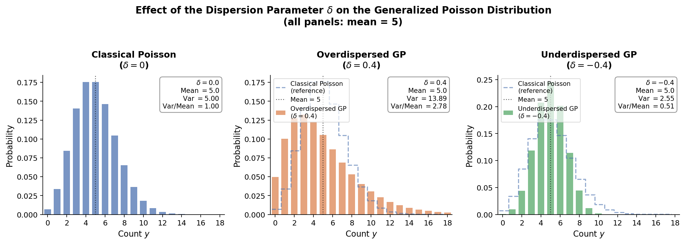
13.1.3 Documented Use Cases
Generalized Poisson regression and its close relatives are established tools for count data whose variability does not match the Poisson model. Table 13.1 summarizes several documented uses, from the distribution’s methodological foundations to applied analyses. The side by side appearance of overdispersed and underdispersed applications is the point: a single model family covers both directions.
| Paper | Authors | Application area | Outcome variable | Substantive question | General method | Main modelling lesson |
|---|---|---|---|---|---|---|
| A Generalization of the Poisson Distribution (Consul and Jain 1973) | P. C. Consul and G. C. Jain | Statistical theory | General integer counts | Can one two-parameter count distribution allow variance greater than, equal to, or smaller than the mean? | Derives the Generalized Poisson distribution as a generalization of the Poisson distribution | Introduces the dispersion parameter \(\theta\), the source of the flexibility used throughout this chapter. |
| Generalized Poisson Distributions: Properties and Applications (Consul 1989) | P. C. Consul | Statistical methodology | Count phenomena, including queueing and branching processes | What are the properties and applications of the GP family? | Systematic treatment of GP properties | Establishes the GP family as a defensible probability model, including the support truncation needed when \(\theta < 0\). |
| Generalized Poisson Regression Model (Consul and Famoye 1992) | P. C. Consul and F. Famoye | Statistical methodology | Overdispersed and underdispersed count responses | How can regressors enter a GP mean while the dispersion parameter is estimated alongside them? | GP regression by maximum likelihood | The direct methodological basis of the model fitted in this chapter. |
| On the Generalized Poisson Regression Model with an Application to Accident Data (Famoye et al. 2004) | F. Famoye, J. T. Wulu Jr., and K. P. Singh | Traffic and occupational safety | Number of accidents per subject | How are accident counts associated with demographic factors and driving habits? | GP regression compared with Classical Poisson regression | An applied overdispersion study in which the GP model fit accident counts better than the Poisson model. |
| A Flexible Regression Model for Count Data (Sellers and Shmueli 2010) | K. F. Sellers and G. Shmueli | Statistics and management science | Applied count responses, including underdispersed business counts | How should count regression handle data that are over- or underdispersed? | Conway–Maxwell–Poisson regression | Confirms that underdispersion arises in real data and motivates flexible count models such as the Generalized Poisson model used here. |
As in Chapter 10, the remainder of the chapter follows the data science workflow: study design, data collection and wrangling, exploratory data analysis, data modelling, estimation, goodness of fit, results, and storytelling. We begin by returning to the horseshoe crab data and stating precisely what the analysis is meant to learn.
13.2 Case Study: Horseshoe Crab Satellites
The running case study in this chapter revisits the horseshoe crab satellites dataset introduced in Chapter 10. Each observational unit is one female horseshoe crab nest, and the response is the number of male satellite crabs residing around the nest. As before, the candidate regressors are observable characteristics of the female crab: her carapace width and weight, her colour category, and her spine condition.
Reusing the same dataset is deliberate. In Chapter 10, the extended Classical Poisson model for these data failed important goodness-of-fit checks: the residual deviance was substantially larger than its degrees of freedom, the Pearson dispersion estimate was well above one, and the observed zero counts exceeded what the fitted model expected. In other words, the crab counts are overdispersed, and the Chapter 10 conclusion pointed explicitly to more flexible count models — including the Generalized Poisson model of this chapter. Returning to the same data lets us ask a sharper question than “how does GP regression work?” It lets us ask: does the extra dispersion parameter actually repair the adequacy failures of the Classical Poisson fit, and what changes in the inferential and predictive conclusions when it does?
Because we already know the dataset well from Chapter 10, the case-study-specific introduction can be brief. The data remain secondary, observational data: no experiment was designed, no treatments were assigned, and no causal claims will be made. Associations between female crab characteristics and the expected number of satellite males will be described as associations, not effects.
13.3 Study Design: Framing the Inferential and Predictive Inquiries
Before fitting a Generalized Poisson regression model, we clarify what the model is supposed to help us learn. This is the study design stage of the data science workflow introduced in Section 1.4.1. At this stage, we are not yet choosing software functions or interpreting coefficients. Instead, we are defining the modelling purpose, the observational unit, the response variable, and the role of the regressors.

For the horseshoe crab case study, the study-design elements are summarized in Table 13.2. This table fixes the basic modelling ingredients before we decide how the Generalized Poisson regression model will be used.
| Role in the study design | Variable(s) | Description |
|---|---|---|
| Observational unit | Female horseshoe crab | Each row corresponds to one female crab observed in the study. |
| Response variable | Number of satellite males | The count outcome: how many satellite males were observed near the female crab. |
| Main regressors | Body width, weight, colour category, spine condition | Observable characteristics of the female crab that may be associated with the expected number of satellite males. |
Note that a single dataset can support different kinds of modelling inquiries. Therefore, we will use the same count response to illustrate two related but distinct modelling purposes: an inferential inquiry and a predictive inquiry, as shown in Table 13.3. This distinction is critical since the modelling workflow is not judged in exactly the same way for both purposes.
| Inquiry type | Main question | Main modelling emphasis | What we will look for later in the chapter |
|---|---|---|---|
| Inferential inquiry | How is the expected number of satellite males associated with female crab characteristics? | Coefficients, the dispersion parameter, uncertainty, hypothesis tests, confidence intervals, and interpretation. | Whether the estimated associations are meaningful, whether accounting for overdispersion changes the conclusions relative to Classical Poisson regression, and whether the model is adequate enough for its standard errors to be trustworthy. |
| Predictive inquiry | How well can the available regressors predict the expected number of satellite males for a female crab? | Predicted expected counts, test-set accuracy, and comparison against a simple baseline. | Whether the fitted Generalized Poisson model improves held-out predictive performance beyond a simple benchmark and beyond the Classical Poisson model. |
The above inferential and predictive inquiries are connected but not interchangeable. Keeping them separate helps us decide which results belong in the inferential interpretation and which results belong in the prediction-accuracy discussion.
Heads-up on inference versus prediction!
For the inferential inquiry, the main object of interest is the relationship between the expected count and the regressors. We will pay attention to coefficient estimates, the estimated dispersion parameter, standard errors, confidence intervals, and hypothesis tests, together with the assumptions needed for the interpretation to be reasonable. Here, the model’s variance assumption matters twice: it describes the data and it drives the model-based standard errors.
On the other hand, for the predictive inquiry, the main object of interest is how well the model predicts expected counts for observations not used to fit the model. We will therefore use a training/testing split, compute predicted expected counts on the testing set, compare prediction errors against a baseline model, and summarize prediction accuracy with metrics such as mean absolute error (MAE), root mean squared error (RMSE), and likelihood-based predictive scores.
Both inquiries require model checking. If the Generalized Poisson model fits the data poorly, then both the inferential interpretation and the predictive results become less useful.
13.3.1 Inferential Inquiry
Specifically, the inferential inquiry asks — exactly as it did in Chapter 10:
How is the expected number of satellite males associated with female crab characteristics, holding other regressors fixed?
The question is identical to Chapter 10 on purpose: we want to compare the two model classes on the same scientific footing. The question is about association and interpretation, not causation. The data are observational, and the case study does not establish a causal design. The inferential goal is to describe how the expected count of satellite males changes across observed female crab characteristics within a Generalized Poisson regression framework.
For this inquiry, the results stage will focus on coefficient estimates, the estimated dispersion parameter, uncertainty, and statistical interpretation. A central question is whether the conclusions from Chapter 10 — which relied on Poisson-based standard errors despite failed dispersion checks — survive once the variance assumption is relaxed.
13.3.2 Predictive Inquiry
Now, the predictive inquiry asks:
How well can the available regressors be used to predict the expected number of satellite males for a female crab?
This question is about prediction accuracy. The target of prediction in Generalized Poisson regression is the expected count, not necessarily the exact observed count. For a given female crab, the observed number of satellite males may differ from the model-predicted expected count because count outcomes are variable even when the model is well specified — and the Generalized Poisson model gives that variability an explicit, estimable size through its dispersion parameter.
For this inquiry, the results stage will focus on out-of-sample prediction. We will fit the model using a training set and evaluate prediction accuracy on a testing set. The testing-set predictions will be compared against a simple baseline that predicts the training-set mean count for every testing observation, and against the Classical Poisson fit using the same regressors. These comparisons are necessary because an accuracy metric is easier to interpret when we can ask whether the regression model does better than simple benchmarks.
13.4 Data Collection and Wrangling
The data used in this chapter are secondary observational data. They were originally collected in the study by Brockmann (1996) on satellite male groups in horseshoe crabs and later made available in a form commonly used in a textbook on categorical data and count regression (Agresti 2013). The version used here comes from Agresti’s public GitHub repository for categorical-data examples, exactly as in Section 10.4, so that the two chapters analyse identical observations.

According to the documentation for the teaching version of the dataset, each row corresponds to one female horseshoe crab (Agresti 2013). The variables record the female crab’s colour, spine condition, carapace width, number of satellite males, and weight. The original data also include a binary indicator for whether at least one satellite male was present; our response variable is the count of satellite males, so the binary indicator is not the primary outcome.
Before doing EDA, we will complete a small amount of data wrangling (as shown in Figure 1.3). The goal is not to create the training/testing split yet. As in the data science workflow from Chapter 1 (more specifically in Section 1.4.3), the data split belongs to the EDA stage because we first need to inspect the data structure and then decide how to separate observations for modelling and evaluation. In this section, we only load the data, rename variables, and prepare the categorical regressors so that they are easier to interpret later. The main variables used in the chapter are summarized in Table 13.4.
| Variable after wrangling | Role | Type | Notation | Description |
|---|---|---|---|---|
satellites |
Response | Discrete count | \(Y_i\) | Number of satellite males observed near the female crab. |
width_cm |
Regressor | Continuous | \(x_{i,1}\) | Female crab carapace width, measured in centimetres. |
weight_kg |
Regressor | Continuous | \(x_{i,2}\) | Female crab weight, measured in kilograms. |
color |
Regressor | Categorical | Encoded using indicator regressors in Section 13.10 | Female crab colour category, treated as categorical with Light as the reference level. |
spine |
Regressor | Categorical | Encoded using indicator regressors in Section 13.10 | Female crab spine condition, treated as categorical with Both good as the reference level. |
The R and Python code below follow the same wrangling logic. First, the data are read from the public teaching data file associated with the categorical-data examples in Agresti (2013). Second, the columns are assigned readable names. Third, the colour and spine variables are converted to categorical variables with descriptive labels. Finally, the dataset is restricted to the variables needed for this chapter. More specifically, we have the following:
- In
R, via the packages part of {tidyverse}, we read the raw data directly from Agresti’s GitHub repository. The file already includes column names, so we letread_table()read the header. Then, we rename the columns needed for this chapter:satbecomessatellites,widthbecomeswidth_cm, andweightbecomesweight_kg. The variablescolorandspineare stored as numeric codes in the raw file, so we convert them into categorical variables with descriptive labels. - In
Python, via {pandas}, we repeat the same wrangling steps. The file already includes column names, soread_csv()reads the header directly. Then,rename()gives the response and continuous regressors more explicit names. Themap()calls replace the numeric colour and spine codes with descriptive labels, and the final selection keeps the working variables used in this chapter.
crabs_url <- paste0(
"https://raw.githubusercontent.com/",
"alanagresti/categorical-data/master/Crabs.dat"
)
crabs_raw <- read_table(crabs_url)
crabs <- crabs_raw |>
transmute(
satellites = sat,
width_cm = width,
weight_kg = weight,
color = factor(
color,
levels = c(1, 2, 3, 4),
labels = c(
"Light",
"Medium light",
"Medium dark",
"Dark"
)
),
spine = factor(
spine,
levels = c(1, 2, 3),
labels = c(
"Both good",
"One worn or broken",
"Both worn or broken"
)
)
)crabs_url = (
"https://raw.githubusercontent.com/"
"alanagresti/categorical-data/master/Crabs.dat"
)
crabs_raw = pd.read_csv(
crabs_url,
sep=r"\s+"
)
color_labels = {
1: "Light",
2: "Medium light",
3: "Medium dark",
4: "Dark",
}
spine_labels = {
1: "Both good",
2: "One worn or broken",
3: "Both worn or broken",
}
crabs = (
crabs_raw
.rename(
columns={
"sat": "satellites",
"width": "width_cm",
"weight": "weight_kg",
}
)
.assign(
color=lambda data_frame: data_frame["color"].map(color_labels),
spine=lambda data_frame: data_frame["spine"].map(spine_labels),
)
[
[
"satellites",
"width_cm",
"weight_kg",
"color",
"spine",
]
]
)Both languages read the same raw file and apply the same recoding, so the two analyses start from identical observations. Table 13.5 and Table 13.6 display the wrangled dataset: the R tab shows the full dataset in a scrollable interactive table, while the Python tab shows the first ten rows.
| satellites | width_cm | weight_kg | color | spine |
|---|---|---|---|---|
| 8 | 28.3 | 3.05 | Medium light | Both worn or broken |
| 0 | 22.5 | 1.55 | Medium dark | Both worn or broken |
| 9 | 26.0 | 2.30 | Light | Both good |
| 0 | 24.8 | 2.10 | Medium dark | Both worn or broken |
| 4 | 26.0 | 2.60 | Medium dark | Both worn or broken |
| 0 | 23.8 | 2.10 | Medium light | Both worn or broken |
| 0 | 26.5 | 2.35 | Light | Both good |
| 0 | 24.7 | 1.90 | Medium dark | One worn or broken |
| 0 | 23.7 | 1.95 | Medium light | Both good |
| 0 | 25.6 | 2.15 | Medium dark | Both worn or broken |
Finally, Listing 13.7 and Listing 13.14 run the structural checks reported below: the dataset has 173 rows and 5 columns, there are no missing values, the response takes non-negative integer values from 0 to 15 with 62 zero counts, and the category counts show that Light (12 crabs) and One worn or broken (15 crabs) are small groups. The small Light category matters later: it is the reference category for color, so colour contrasts estimated against it will be comparatively imprecise. That is a reason for caution in interpretation, not a reason to delete observations.
# Dimensions and storage types
dim(crabs)[1] 173 5sapply(crabs, class)satellites width_cm weight_kg color spine
"numeric" "numeric" "numeric" "factor" "factor" [1] 0# Category counts
table(crabs$color)
Light Medium light Medium dark Dark
12 95 44 22 table(crabs$spine)
Both good One worn or broken Both worn or broken
37 15 121 # Response range and zero counts
range(crabs$satellites)[1] 0 15sum(crabs$satellites == 0)[1] 62# Dimensions and storage types
print(crabs.shape)(173, 5)print(crabs.dtypes)satellites int64
width_cm float64
weight_kg float64
color str
spine str
dtype: object# Missing values
print("Missing values:", int(crabs.isna().sum().sum()))Missing values: 0# Category counts
print(crabs["color"].value_counts())color
Medium light 95
Medium dark 44
Dark 22
Light 12
Name: count, dtype: int64print(crabs["spine"].value_counts())spine
Both worn or broken 121
Both good 37
One worn or broken 15
Name: count, dtype: int64# Response range and zero counts
print("Range:", int(crabs["satellites"].min()), "to", int(crabs["satellites"].max()))Range: 0 to 15print("Zero counts:", int((crabs["satellites"] == 0).sum()))Zero counts: 6213.5 Exploratory Data Analysis
With the data wrangled, we move to exploratory data analysis (as shown in Figure 1.4). The goal is to describe the data before modelling them: How are the satellite counts distributed? Is there descriptive evidence of overdispersion? Which regressors appear to be related to the response? Per the data science workflow, all EDA uses the training data only, so we first create the training/testing split.
We use the same canonical split as Chapter 10 — a 50/50 simple random split with seed 123 — so that the training observations analysed in this chapter are exactly those analysed in the Classical Poisson chapter:
-
Listing 13.17 uses the {rsample} package to split the wrangled
crabsdataset into training and testing sets. The argumentprop = 0.5requests that approximately half of the observations be assigned to the training set, with the rest assigned to the testing set. The sanity check prints the dimensions of both subsets and their observed proportion. - In
Python, we do not re-split the data. Per the book’s cross-language convention, theR-generated split is the canonical one, and the next listing shows how thePythonanalysis imports it.
# Setting the seed for reproducible splitting
set.seed(123)
# Performing the 50/50 training/testing split
split <- initial_split(crabs, prop = 0.5)
training_data <- training(split)
testing_data <- testing(split)
# Sanity checks: dimensions and proportions
n_total <- nrow(crabs)
n_train <- nrow(training_data)
n_test <- nrow(testing_data)
cat("Total observations:", n_total, "\n")Total observations: 173 Training observations: 86 ( 49.7 %)Testing observations: 87 ( 50.3 %)Tip on the 50/50 split and more careful alternatives!
This dataset contains only 173 observations. A standard predictive modelling workflow often uses a larger training set, such as an 80/20 training/testing split. However, in this chapter we need to support two goals at the same time: an inferential inquiry and a predictive inquiry.
Using a 50/50 split is a compromise. It gives the training set enough observations for EDA, model fitting, and goodness-of-fit checking, while also leaving a testing set large enough to support both the final predictive accuracy assessment and the final inferential refit. This choice is not perfect. A larger training set would usually help estimation and diagnostics, while a larger testing set gives a more informative final assessment. With small datasets, we often have to choose between these inconveniences.
The 50/50 split used here is also a simple random split, which means it does not explicitly protect against imbalance across important variables. For example, if one female crab colour category or spine condition is rare, a simple random split could place too many of those crabs in one subset and too few in the other. That imbalance can affect both the inferential and predictive parts of the workflow.
A more careful split could stratify the data by an important categorical regressor, such as female crab colour, or by a coarser grouping of the response variable. Other strategies include repeated random splits, cross-validation, or bootstrap-based assessment. These approaches can reduce dependence on a single split and are widely used in predictive modelling and model validation; see Hastie et al. (2009), Kuhn and Johnson (2013), and Harrell (2015) for broader discussions. The main chapter keeps a single 50/50 split so that the Generalized Poisson regression workflow remains transparent, and so that the results remain directly comparable with Chapter 10.
Heads-up on keeping R and Python aligned after the split!
Setting the same seed in R and Python does not guarantee the same observations in each subset: the two languages use different random-number generators and different splitting implementations. To keep genuine R/Python parity, we use the R-generated training and testing sets as a common reference. The listing below imports them into Python through the {reticulate} package and restores the categorical data types and level ordering that the transfer would otherwise lose.
# Importing R-generated training and testing sets via reticulate
training_data = r.training_data
testing_data = r.testing_data
# Ensuring categorical regressors are treated as categorical in Python
color_levels = ["Light", "Medium light", "Medium dark", "Dark"]
spine_levels = ["Both good", "One worn or broken", "Both worn or broken"]
training_data["color"] = pd.Categorical(
training_data["color"], categories=color_levels, ordered=True
)
training_data["spine"] = pd.Categorical(
training_data["spine"], categories=spine_levels, ordered=True
)
testing_data["color"] = pd.Categorical(
testing_data["color"], categories=color_levels, ordered=True
)
testing_data["spine"] = pd.Categorical(
testing_data["spine"], categories=spine_levels, ordered=True
)
# Sanity checks: sample sizes, and disjointness of the two splits
n_total_py = len(r.crabs)
print("Total observations:", n_total_py)Total observations: 173print("Training observations:", len(training_data))Training observations: 86print("Testing observations:", len(testing_data))Testing observations: 87print(
"Training + testing equals total:",
len(training_data) + len(testing_data) == n_total_py,
)Training + testing equals total: TrueFrom this point until the Results section, everything — EDA plots, candidate model fitting, and all goodness-of-fit checks — uses training_data only. The testing set stays untouched until the final inferential refit and the final held-out predictive evaluation.
13.5.1 Distribution of the Count Response
The first question is descriptive: how are the satellite counts distributed in the training data? Figure 13.3 and Figure 13.4 show the empirical distribution, and the accompanying tables report the training-set mean, variance, variance-to-mean ratio, and zero proportion.
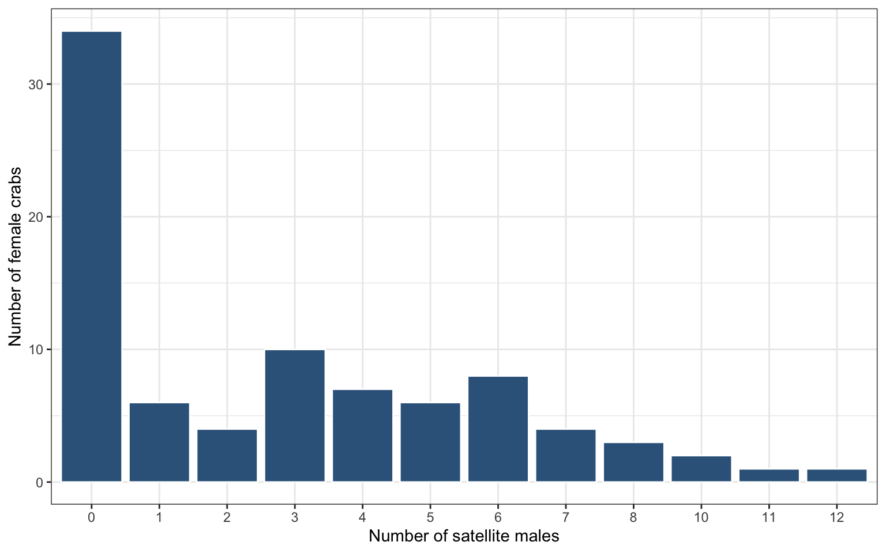
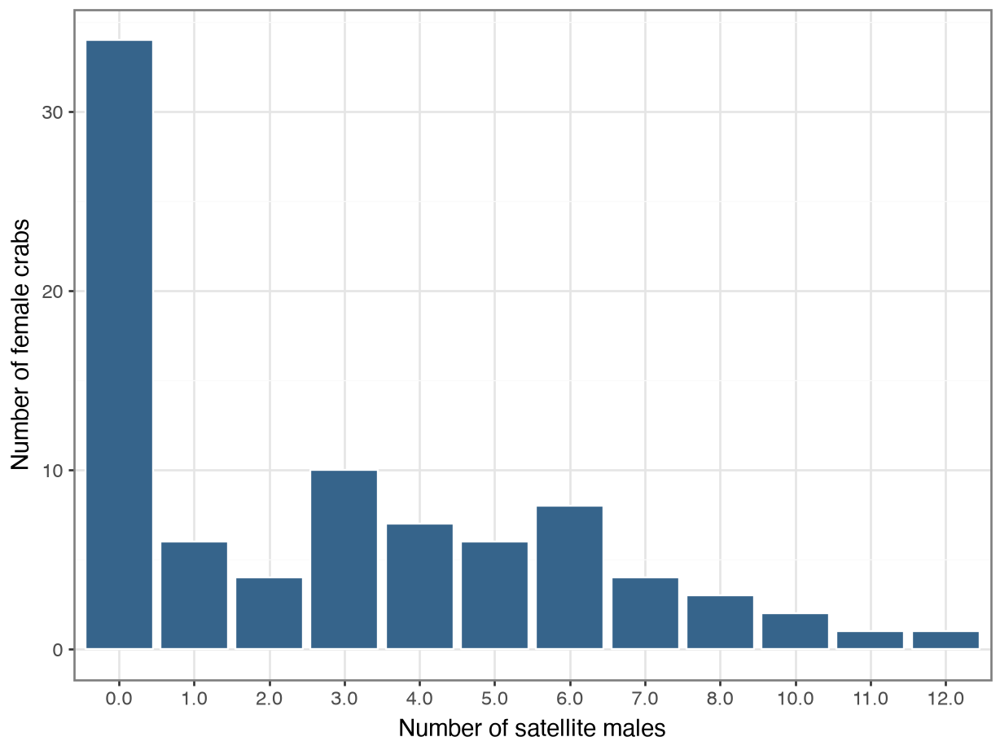
| Quantity | Value |
|---|---|
| Number of female crabs | 86.000 |
| Mean satellite count | 2.849 |
| Variance of satellite counts | 9.612 |
| Variance-to-mean ratio | 3.374 |
| Zero counts | 34.000 |
| Minimum | 0.000 |
| Maximum | 12.000 |
| Quantity | Value |
|---|---|
| Number of female crabs | 86.000 |
| Mean satellite count | 2.849 |
| Variance of satellite counts | 9.612 |
| Variance-to-mean ratio | 3.374 |
| Zero counts | 34.000 |
| Minimum | 0.000 |
| Maximum | 12.000 |
Three features stand out in the training data. First, the distribution is right-skewed, with many small counts and a few nests with many satellites. Second, 34 of the 86 training crabs (about 40%) have zero satellites, so the zero category is prominent. Third — and most important for this chapter — the sample variance (9.61) is more than three times the sample mean (2.85), giving a variance-to-mean ratio of about 3.37.
Heads-up on reading dispersion from raw summaries!
The variance-to-mean ratio computed here is a marginal summary: it ignores the regressors completely. A ratio far from one is an early warning, not a verdict. Equidispersion is a conditional assumption about the distribution of \(Y_i\) given the regressors included in the model. The training-stage dispersion diagnostics in Section 13.9 are what actually check that assumption.
At the same time, a marginal ratio of 3.37 is large enough that the Generalized Poisson model — explicitly designed for such departures — is the natural model to develop.
13.5.2 Satellite Counts and Continuous Regressors
Next, is the response related to the two continuous regressors? Because counts are noisy, we follow the same device as Chapter 10: split each continuous regressor into intervals, compute the average satellite count per interval, and overlay those averages on the scatterplot. These binned averages are a descriptive visual guide, not the fitted regression model.
Figure 13.5 and Figure 13.6 show the relationship with width_cm; the pattern is an approximately monotone increase in the average satellite count as shell width grows.
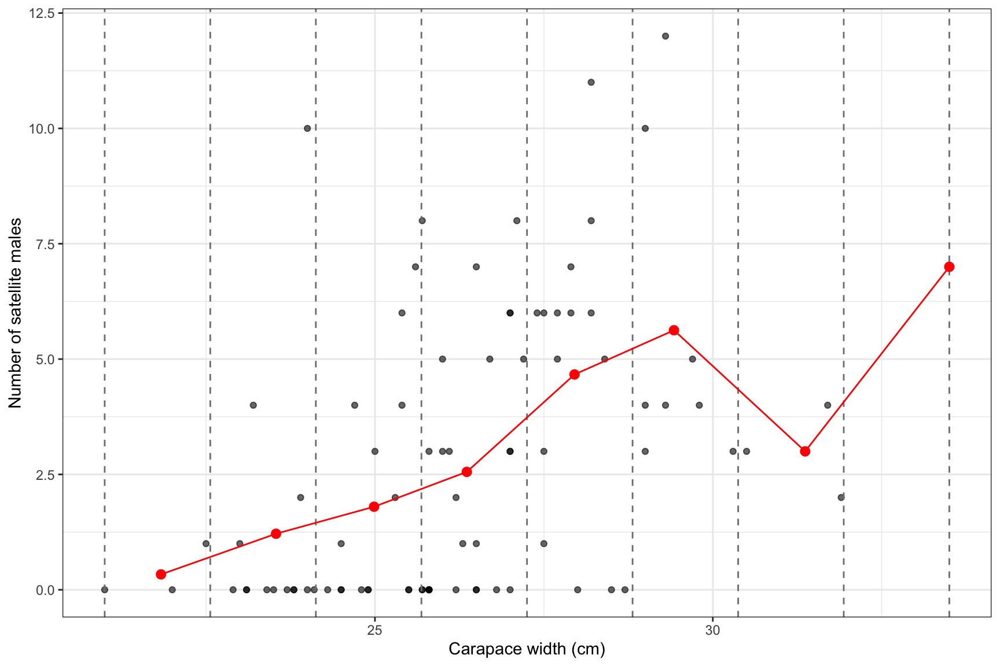
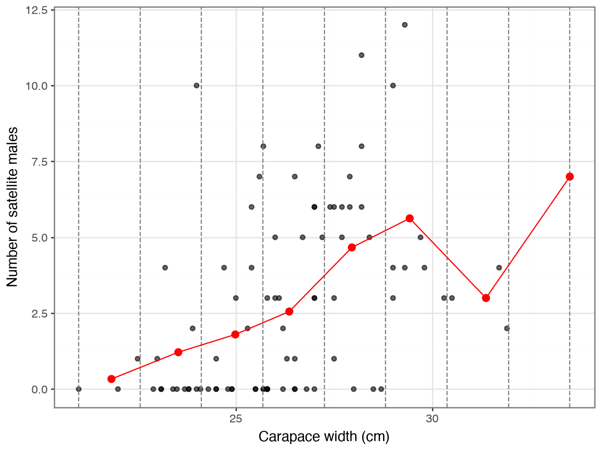
Figure 13.7 and Figure 13.8 repeat the exercise for weight_kg. The binned averages again suggest an increasing relationship, although the heaviest bins contain very few crabs and should not be over-read.
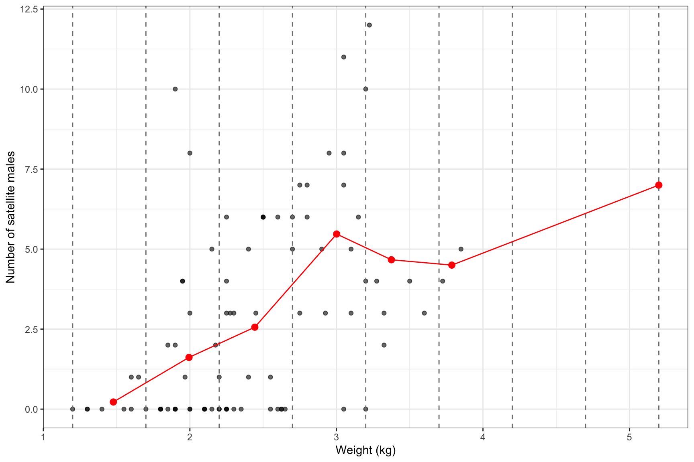
/Users/andtai/Library/Mobile Documents/com~apple~CloudDocs/Documents/github/mds/regression-cookbook/.venv/lib/python3.12/site-packages/plotnine/layer.py:374: PlotnineWarning: geom_point : Removed 1 rows containing missing values.
/Users/andtai/Library/Mobile Documents/com~apple~CloudDocs/Documents/github/mds/regression-cookbook/.venv/lib/python3.12/site-packages/plotnine/geoms/geom_path.py:100: PlotnineWarning: geom_path: Removed 1 rows containing missing values.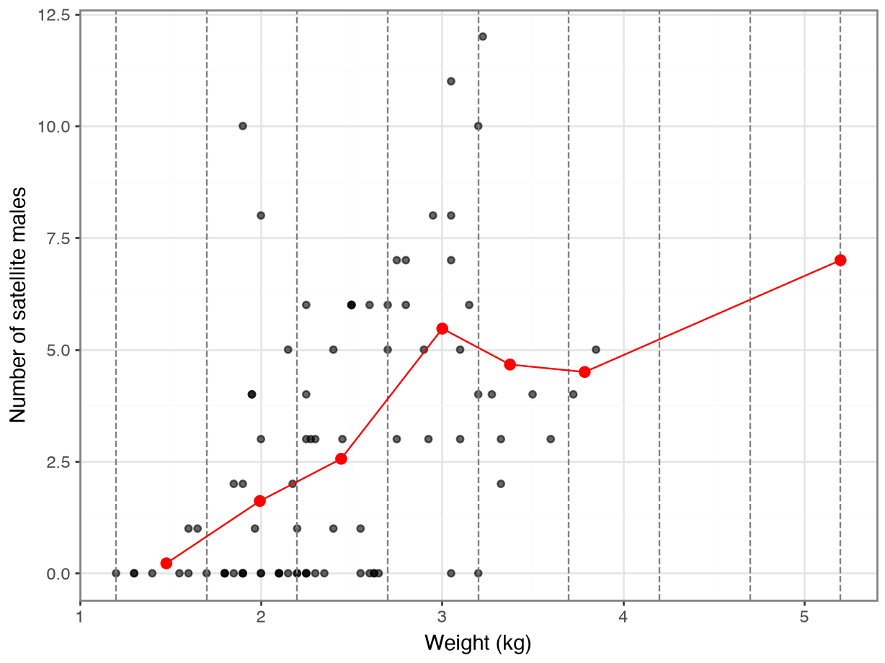
13.5.3 Satellite Counts and Categorical Regressors
For the categorical regressors, Table 13.9 and Table 13.10 report group sizes, group means, and group variances of the satellite counts for each colour category and each spine condition in the training data. Two observations will matter later: the group means vary across colour categories in the expected direction (darker females attract fewer satellites), and within every group the sample variance remains well above the sample mean — descriptive evidence that the overdispersion is not explained away by any single regressor.
| Regressor | Category | Number of crabs | Mean | Variance |
|---|---|---|---|---|
| Colour category | Light | 8 | 3.38 | 9.98 |
| Colour category | Medium light | 44 | 3.34 | 9.67 |
| Colour category | Medium dark | 22 | 2.41 | 7.49 |
| Colour category | Dark | 12 | 1.50 | 12.27 |
| Spine condition | Both good | 20 | 3.25 | 8.62 |
| Spine condition | One worn or broken | 7 | 1.57 | 3.95 |
| Spine condition | Both worn or broken | 59 | 2.86 | 10.60 |
| Regressor | Category | Number of crabs | Mean | Variance |
|---|---|---|---|---|
| Colour category | Light | 8 | 3.38 | 9.98 |
| Colour category | Medium light | 44 | 3.34 | 9.67 |
| Colour category | Medium dark | 22 | 2.41 | 7.49 |
| Colour category | Dark | 12 | 1.50 | 12.27 |
| Spine condition | Both good | 20 | 3.25 | 8.62 |
| Spine condition | One worn or broken | 7 | 1.57 | 3.95 |
| Spine condition | Both worn or broken | 59 | 2.86 | 10.60 |
Figure 13.9 and Figure 13.10 show the same groups visually, with the individual counts overlaid.
Heads-up on jittered points in categorical plots!
In these plots, individual training observations are drawn on top of the boxplots. Many crabs share the same satellite count, so identical points would otherwise overlap. We add a small horizontal-only jitter (width = 0.15, height = 0) so points fan out sideways within each category; the vertical coordinate — the actual satellite count — is never altered.
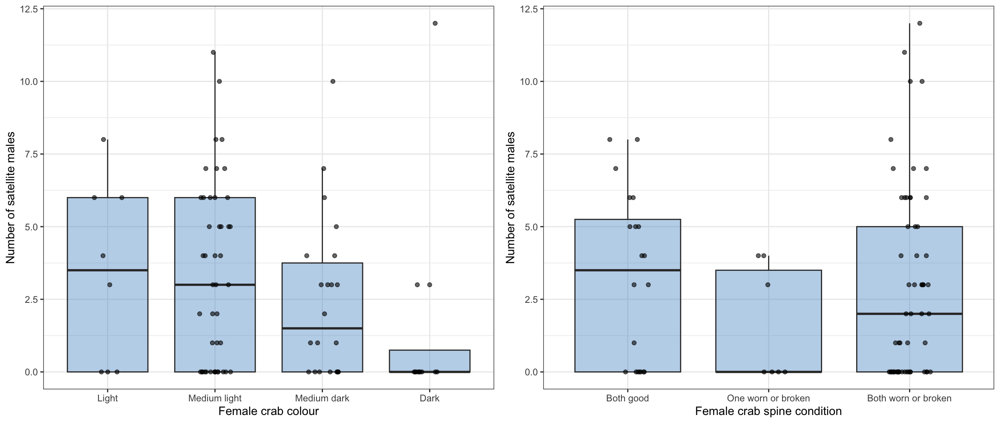
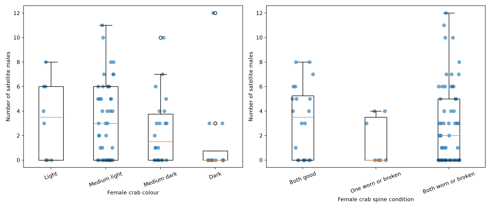
13.5.4 Summary
Table 13.11 summarizes the exploratory findings and what they imply for the modelling stage.
| Feature investigated | Descriptive evidence (training data) | Implication for modelling | Caution |
|---|---|---|---|
| Response distribution | Right-skewed counts; 34 of 86 crabs have zero satellites; range 0 to 12. | A count model with a positive expected count is required; the log link is appropriate. | Marginal summaries ignore the regressors. |
| Mean–variance relationship | Variance-to-mean ratio of about 3.37; group variances exceed group means within every colour and spine group. | Equidispersion is implausible; a model with an explicit dispersion parameter, such as the Generalized Poisson, is motivated. | The formal checks happen in goodness of fit, on the fitted conditional model. |
width_cm |
Interval-average satellite counts increase with shell width. | Width is the natural first regressor for the simple model. | Binned averages are descriptive, not the fitted mean function. |
weight_kg |
Interval averages also increase, but the heaviest intervals contain very few crabs. | Weight is a candidate for the extended model. | Sparse high-weight intervals make the right-hand pattern imprecise. |
color, spine
|
Group means differ modestly; Light has only 8 training crabs and One worn or broken only 7. |
Colour and spine remain candidate regressors with explicit reference categories. | Small groups produce imprecise contrasts; no rebalancing is done. |
The exploratory evidence points in one consistent direction: the training counts are strongly overdispersed, even within regressor-defined groups, while the expected count clearly varies with female crab size. The next section turns these descriptive observations into a formal probability model: the Generalized Poisson regression model.
13.6 The Generalized Poisson Regression Model
The EDA pointed to a specific problem: the training counts appear strongly overdispersed, while the expected count clearly varies with female crab size. We now build the formal probability model that can represent both features at once. Like every regression model in this book, the specification has three parts: a random component (the conditional distribution of the response), a systematic component (how the regressors enter), and a link function (how the two are connected). The first is the genuinely new piece; the second and third coincide with those of Section 10.6.
13.6.1 The Random Component
For the \(i\)th observation (\(i = 1, \ldots, n\)), let \(Y_i\) be the count response (for our case study, the number of satellite males) and let \(x_{i,1}, \ldots, x_{i,k}\) be its regressors. Conditional on those regressors, we model
\[ Y_i \mid x_{i,1}, \ldots, x_{i,k} \sim \operatorname{GPO}(\lambda_i, \theta), \tag{13.1}\]
where \(\operatorname{GPO}(\lambda_i, \theta)\) denotes the Generalized Poisson distribution with parameters \(\lambda_i > 0\) and \(\theta \in (-1, 1)\).
Definition of the Generalized Poisson distribution
A discrete random variable \(Y\) follows a Generalized Poisson distribution with parameters \(\lambda > 0\) and \(\theta \in (-1, 1)\), written \(Y \sim \operatorname{GPO}(\lambda, \theta)\), if its probability mass function (PMF) is
\[ p_Y(y; \lambda, \theta) \;=\; \frac{\lambda \, (\lambda + \theta y)^{y - 1} \, \exp\!\big(-(\lambda + \theta y)\big)}{y!}, \qquad y = 0, 1, 2, \ldots \tag{13.2}\]
(Consul and Jain 1973). Here \(\lambda\) is a rate-like parameter and \(\theta\) is the dispersion parameter. When \(\theta < 0\), the support is truncated so that \(\lambda + \theta y\) stays positive; the truncation only bites at counts far in the upper tail for the parameter values we will encounter (Consul 1989).
The mean and variance of \(Y\) are
\[ \mathbb{E}(Y) = \frac{\lambda}{1 - \theta}, \qquad \operatorname{Var}(Y) = \frac{\lambda}{(1 - \theta)^3}. \]
So the ratio of variance to mean is
\[ \frac{\operatorname{Var}(Y)}{\mathbb{E}(Y)} = \frac{1}{(1 - \theta)^2}: \]
equal to \(1\) when \(\theta = 0\) (which recovers the Poisson distribution), greater than \(1\) when \(\theta > 0\) (overdispersion), and smaller than \(1\) when \(\theta < 0\) (underdispersion). One useful special value for later diagnostics is the probability of a zero count, \(p_Y(0; \lambda, \theta) = \exp(-\lambda)\).
The same parameterization appears in Section D.5 in the distributional appendix.
Two properties of this random component drive everything that follows. First, the Poisson distribution is nested inside the GP family at \(\theta = 0\), which will let us formally compare the two models. Second, \(\theta\) converts directly into a variance multiplier: for example, \(\theta = 0.5\) implies a variance \(1 / (1 - 0.5)^2 = 4\) times the mean, while \(\theta = -0.5\) implies a variance \(0.44\) times the mean. We assume a single dispersion parameter \(\theta\) shared by all observations, while each observation keeps its own \(\lambda_i\).
13.6.2 The Systematic Component
As in Section 10.6, the regressors enter through a linear predictor
\[ \eta_i = \beta_0 + \beta_1 x_{i,1} + \beta_2 x_{i,2} + \cdots + \beta_k x_{i,k} = \mathbf{x}_i^\top \boldsymbol{\beta}, \tag{13.3}\]
where \(\mathbf{x}_i = (1, x_{i,1}, \ldots, x_{i,k})^\top\) collects the intercept and the \(k\) regressors of observation \(i\), and \(\boldsymbol{\beta} = (\beta_0, \beta_1, \ldots, \beta_k)^\top\) is the coefficient vector. Linearity here means linearity in the coefficients; the expected count itself will not be a straight-line function of the regressors.
For the running case study we start with the same simple specification as Chapter 10: the female crab’s shell width only. The extended specification — width, weight, colour, and spine condition — is deliberately the same as the extended model in Section 10.9, so that any change in conclusions can be attributed to the random component rather than to a different set of regressors.
13.6.3 The Log Link Function
Writing \(\mu_i = \mathbb{E}(Y_i \mid \mathbf{x}_i)\) for the conditional expected count, we connect the mean to the linear predictor with the same log link as Chapter 10:
\[ \log(\mu_i) = \eta_i \qquad\Longleftrightarrow\qquad \mu_i = \exp(\mathbf{x}_i^\top \boldsymbol{\beta}). \tag{13.4}\]
The log link keeps the expected count positive for any value of the linear predictor and places the coefficients on the log expected-count scale; exponentiating a coefficient therefore gives a multiplicative change in the expected count, exactly as in Chapter 10.
Combining the link with the GP mean, \(\mu_i = \lambda_i / (1 - \theta)\), gives the rate-like parameter that enters the PMF:
\[ \lambda_i = (1 - \theta)\,\mu_i = (1 - \theta)\exp(\mathbf{x}_i^\top \boldsymbol{\beta}). \tag{13.5}\]
The regression thus carries two sets of unknowns: the coefficient vector \(\boldsymbol{\beta}\), which moves the expected count, and the scalar dispersion parameter \(\theta \in (-1, 1)\), which governs how far the variance is from the mean.
Heads-up: a GLM-like model that is not a Poisson GLM!
Chapter 10’s Poisson regression is a classical generalized linear model: its Poisson random component belongs to the one-parameter exponential family, and its coefficients can be estimated by Iteratively Reweighted Least Squares (IRLS). The Generalized Poisson model looks similar — same linear predictor, same log link — but its random component carries the second parameter \(\theta\), which places it outside that special case. It is best understood as a joint maximum likelihood problem in \((\boldsymbol{\beta}, \theta)\): in R we will fit it with {VGAM}’s vector generalized linear model machinery (vglm() with a GP family), and in Python we will maximize the GP log-likelihood directly. The estimation section makes the likelihood — and where the standard errors come from — precise.
13.7 Estimation
The model of Section 13.6 has two sets of unknowns: the coefficient vector \(\boldsymbol{\beta} = (\beta_0, \beta_1, \ldots, \beta_k)^\top\) and the dispersion parameter \(\theta \in (-1, 1)\). We estimate them together by maximum likelihood, conditioning on the observed values of the regressors, and using the training data only.
Under conditional independence of the responses given the regressors, the log-likelihood follows directly from the GP probability mass function (Equation 13.2) with \(\lambda_i = (1 - \theta)\exp(\mathbf{x}_i^\top \boldsymbol{\beta})\) (see Equation 13.5):
\[ \ell(\boldsymbol{\beta}, \theta) = \sum_{i=1}^{n} \Big[ \log \lambda_i + (y_i - 1)\log\big(\lambda_i + \theta\, y_i\big) - \big(\lambda_i + \theta\, y_i\big) - \log(y_i!) \Big], \qquad \lambda_i = (1 - \theta)\exp\big(\mathbf{x}_i^\top \boldsymbol{\beta}\big). \tag{13.6}\]
Unlike ordinary least squares, and unlike the Poisson GLM of Section 10.6 whose coefficients admit an efficient iteratively reweighted least squares algorithm, this log-likelihood has no closed-form maximizer: the estimators \((\hat{\boldsymbol{\beta}}, \hat{\theta})\) are the numerical solution of the \((k + 2)\)-dimensional score system. In practice, both of our toolchains maximize \(\ell\) by iterative numerical optimization over \((\boldsymbol{\beta}, \theta)\) jointly.
Uncertainty quantification is standard likelihood machinery. The variance–covariance matrix of the estimates is approximated by the inverse of the information matrix evaluated at the maximum,
\[ \operatorname{Var}\big((\hat{\boldsymbol{\beta}}, \hat{\theta})\big) \;\approx\; \big[\mathcal{I}(\hat{\boldsymbol{\beta}}, \hat{\theta})\big]^{-1}, \qquad \operatorname{SE}(\hat{\beta}_j) = \sqrt{\big[\mathcal{I}^{-1}\big]_{jj}}, \tag{13.7}\]
and a large-sample Wald 95% confidence interval for a coefficient is \(\hat{\beta}_j \pm 1.96\,\operatorname{SE}(\hat{\beta}_j)\), with the same construction applying to \(\theta\).
Two estimation subtleties are worth naming before the code.
Heads-up on expected versus observed information!
There are two ways to compute the information matrix in Equation 13.7: the expected (Fisher) information and the observed information (the negative Hessian of the log-likelihood at the maximum). Both are valid large-sample approximations, but they are not numerically identical in finite samples. VGAM::vglm() reports standard errors from the expected information, while the Python class below obtains them from the observed information returned by the numerical optimizer. Expect small differences between the two columns of output — both this chapter and the data agree that the substantive conclusions are unchanged.
The second subtlety concerns the comparison we will lean on most: the GP model against its Poisson special case. That test is a regular one, and it is worth saying why explicitly, because several later chapters in this book face non-regular nesting.
Heads-up on the Poisson-vs-GP comparison being regular!
Because \(\theta = 0\) lies inside the parameter space \((-1, 1)\) — not on its boundary — the Poisson model is nested in the GP model under ordinary regularity conditions. The classical \(\chi^2_1\) asymptotics therefore apply to the likelihood-ratio test of \(H_0: \theta = 0\) performed later in this chapter; no mixture-of-chi-squared correction is needed (contrast this with the zero-inflation probability boundary problem of Chapter 12).
13.7.1 Fitting Machinery in R and Python
-
R: {VGAM} fits the model as a vector generalized linear model viavglm(). The call below (executed in the next section) uses thegenpoisson1()family, which parameterizes the model through the mean \(\mu_i\) with a log link and a dispersion index equal to \((1 - \theta)^2\) with a log-log link; the argumentzero = "dispind"constrains the dispersion index to be a single scalar shared by all observations — exactly the constant-\(\theta\) assumption of Section 13.6.1. VGAM’s summary table will show two intercept-labelled rows:(Intercept):1is \(\hat{\beta}_0\) on the log-link scale, and(Intercept):2is the dispersion row on the log-log scale, which we convert back to \(\hat{\theta} = 1 - \sqrt{\exp(-\exp(\hat{\eta}_2))}\).
-
Python: no mainstreamPythonpackage ships a Generalized Poisson regression, so we fit the log-likelihood directly with a {statsmodels}GenericLikelihoodModel. One implementation detail deserves attention: the optimizer is unconstrained, while \(\theta\) must stay in \((-1, 1)\) and \(\lambda_i = (1 - \theta)\mu_i\) must stay positive. We therefore optimize over a real-valued working parameter \(z \in \mathbb{R}\) and recover the dispersion parameter through the logistic map
\[ \theta = \frac{2}{1 + \exp(-z)} - 1 \in (-1, 1), \tag{13.8}\]
which guarantees \(\lambda_i > 0\) for any \((\boldsymbol{\beta}, z)\) the optimizer visits, and which — unlike the VGAM parameterization — allows \(\theta < 0\). This is the form we will need for the underdispersed practice case in the exercises.
import warnings
from scipy.special import gammaln
from statsmodels.base.model import GenericLikelihoodModel
class GeneralizedPoisson(GenericLikelihoodModel):
"""Generalized Poisson regression with log link, per Consul and Jain (1973).
Parameters are (beta, z), where the logistic map
theta = 2 / (1 + exp(-z)) - 1 keeps theta in (-1, 1) so that
lambda_i = (1 - theta) * exp(x_i' beta) stays positive.
"""
def nloglikeobs(self, params):
beta = params[:-1]
z = params[-1]
theta = 2.0 / (1.0 + np.exp(-z)) - 1.0
eta = self.exog @ beta
mu = np.exp(eta)
lam = (1.0 - theta) * mu
y = self.endog
t = lam + theta * y
if np.any(t <= 0):
return np.inf
ll = np.log(lam) + (y - 1.0) * np.log(t) - t - gammaln(y + 1.0)
return -ll
def fit_dispersion(self, **kwargs):
"""Fit by BFGS from a data-driven start (log-mean intercept, theta = 0)."""
start_beta = np.zeros(self.exog.shape[1])
start_beta[0] = np.log(self.endog.mean())
start_params = np.concatenate([start_beta, [0.0]])
# Suppress statsmodels bookkeeping warnings: the extra dispersion
# parameter is intentional and accounted for by the class.
with warnings.catch_warnings():
warnings.simplefilter("ignore")
res = self.fit(
start_params=start_params, method="bfgs",
disp=False, maxiter=1000, **kwargs,
)
return resWith the log-likelihood specified (Equation 13.6), the estimation problem is identical in spirit to every maximum likelihood fit in this book: supply the data, maximize, and read off estimates with their standard errors. The next section fits the simple model to the crab training data in both languages and checks that the two implementations agree.
13.8 Simple Model: Satellite Counts and Female Crab Width
We begin with the same simple specification as Section 10.7: the number of satellite males regressed on the female crab’s shell width alone. With the notation fixed in Table 13.4, \(x_{i,1}\) denotes the female crab width in centimetres for the \(i\)th female crab, and the simple model is
\[ Y_i \mid x_{i,1} \sim \operatorname{GPO}(\lambda_i, \theta), \qquad \log(\mu_i) = \beta_0 + \beta_1 x_{i,1}, \qquad \lambda_i = (1 - \theta)\,\mu_i. \tag{13.9}\]
The only visible difference from Chapter 10’s simple model is the random component — and that is the point of this chapter.
13.8.1 Fitting the Simple Model
Listing 13.23 fits the model with VGAM::vglm() on the training data. Recall from Section 13.7.1 that VGAM parameterizes the dispersion index as \((1 - \theta)^2\) on a log-log link, so the second intercept row of the raw summary is decoded into \(\hat{\theta}\) (with a delta-method standard error) before printing.
# Fitting the simple Generalized Poisson model on the training data
gp_fit_r <- vglm(
satellites ~ width_cm,
family = genpoisson1(zero = "dispind"),
data = training_data
)
# Decoding the raw VGAM summary table
cs <- coef(summary(gp_fit_r))
beta0_hat <- cs["(Intercept):1", "Estimate"]
se_beta0 <- cs["(Intercept):1", "Std. Error"]
beta1_hat <- cs["width_cm", "Estimate"]
se_beta1 <- cs["width_cm", "Std. Error"]
eta2_hat <- cs["(Intercept):2", "Estimate"]
se_eta2 <- cs["(Intercept):2", "Std. Error"]
# Converting the dispersion row to theta with a delta-method standard error
theta_hat <- 1 - exp(-exp(eta2_hat) / 2)
se_theta <- (exp(-exp(eta2_hat) / 2) * exp(eta2_hat) / 2) * se_eta2
# Tidied coefficient table
gp_simple_summary_r <- tibble(
Term = c("(Intercept)", "width_cm", "Dispersion (theta)"),
Estimate = c(beta0_hat, beta1_hat, theta_hat),
`Std. Error` = c(se_beta0, se_beta1, se_theta),
`z value` = Estimate / `Std. Error`,
`Pr(>|z|)` = 2 * pnorm(-abs(`z value`))
)The Python fit reuses the GeneralizedPoisson class defined in Listing 13.22:
# Assembling the design matrix and response for the simple model
from scipy.stats import norm
X_train = np.column_stack(
[np.ones(len(training_data)), training_data["width_cm"].to_numpy(dtype=float)]
)
y_train = training_data["satellites"].to_numpy(dtype=float)
# Fitting the simple Generalized Poisson model
gp_fit_py = GeneralizedPoisson(y_train, X_train).fit_dispersion()
# Recovering theta and its delta-method standard error from the logistic map
beta_hat = gp_fit_py.params[:-1]
beta_se = gp_fit_py.bse[:-1]
z_hat = gp_fit_py.params[-1]
theta_hat_py = 2.0 / (1.0 + np.exp(-z_hat)) - 1.0
se_theta_py = (
2.0
* (1.0 / (1.0 + np.exp(-z_hat)))
* (1.0 - 1.0 / (1.0 + np.exp(-z_hat)))
* gp_fit_py.bse[-1]
)
# Tidied coefficient table
gp_simple_summary_py = pd.DataFrame(
{
"Term": ["(Intercept)", "width_cm", "Dispersion (theta)"],
"Estimate": [beta_hat[0], beta_hat[1], theta_hat_py],
"Std. Error": [beta_se[0], beta_se[1], se_theta_py],
}
)
gp_simple_summary_py["z value"] = (
gp_simple_summary_py["Estimate"] / gp_simple_summary_py["Std. Error"]
)
gp_simple_summary_py["Pr(>|z|)"] = (
2 * (1 - norm.cdf(gp_simple_summary_py["z value"].abs()))
)
gp_simple_summary_py_html = scrollable_table_html(gp_simple_summary_py)| Term | Estimate | Std. Error | z value | Pr(>|z|) |
|---|---|---|---|---|
| (Intercept) | -5.133593 | 1.103644 | -4.651491 | 3.295434e-06 |
| width_cm | 0.229046 | 0.039561 | 5.789639 | 7.053786e-09 |
| Dispersion (theta) | 0.515970 | 0.063813 | 8.085712 | 6.661338e-16 |
13.8.2 Reading the Estimates
The two implementations agree where it matters: both report a maximized log-likelihood of -177.7141 in R and -177.7141 in Python, and the coefficient estimates match to at least three decimals. The small differences in the standard errors are the expected-versus-observed-information difference flagged in Section 13.7.
Three readings from the training fit:
- The dispersion parameter. \(\hat{\theta} = 0.516\) corresponds to a variance-to-mean ratio of \(1 / (1 - \hat{\theta})^2 = 4.27\): the fitted variance is about four times the fitted mean. Its 95% Wald interval (0.396, 0.636) lies entirely above zero, so the training data already indicate that the conditional variance is much larger than a Poisson model would allow. The next chapter section tests \(\theta = 0\) formally with a likelihood-ratio test.
- The width coefficient. \(\hat{\beta}_1 = 0.229\) on the log-link scale means that, in the training data, a one-centimetre larger shell width is associated with an expected satellite count multiplied by \(\exp(0.229) = 1.257\) — that is, about a 26% larger expected count. The 95% confidence interval for this expected-count ratio is (1.154, 1.37), entirely above one.
- The intercept. \(\hat{\beta}_0 = -5.13\) is the log expected count for a hypothetical crab of width 0 cm, far outside the observed range of 21–33.5 cm; its role is calibration, not science.
Heads-up on reading training-set significance!
Everything on this page comes from the training data. The Wald interval for \(\beta_1\) excluding zero here is a model-checking signal, not the final word on the inferential inquiry: per the data science workflow, the inferential claim itself is made in the Results section, after refitting the selected model on the untouched testing set. Small intervals at this stage tell us the model class is behaving as designed — nothing more.
Before trusting any interpretation, however, the model must pass the same adequacy checks demanded of any regression in this book. The next section runs the full goodness-of-fit suite for the Generalized Poisson model — the checks that the classical Poisson model failed in Chapter 10, plus the zero-count check that the GP zero probability \(\exp(-\lambda_i)\) makes possible.
13.9 Checking Goodness of Fit
Before interpreting anything from the simple model, we put it through the same workflow gate as every model in this book: does the fitted Generalized Poisson model actually behave like the data? For the GP story of Section 13.6, adequacy means three things: the fitted expected counts should track the observed counts (the mean structure), the fitted variance \(4.27 \times \mu_i\) should describe the observed spread around the means (the overdispersion that motivated this chapter), and the fitted model should reproduce features of the count distribution such as the number of zero counts. All checks use the training fit computed in Section 13.8.
# Sample size and residual degrees of freedom (p = 3 = two betas + theta)
df_gof <- nrow(training_data) - length(coef(gp_fit_r))
# Fitted means and rate-like parameters
mu_hat <- as.numeric(fitted(gp_fit_r)[, 1])
lambda_hat <- (1 - theta_hat) * mu_hat
y_train_vec <- training_data$satellites
# Classical Poisson fit on the same split, for the contrast
gp_poisson_r <- glm(satellites ~ width_cm, family = poisson, data = training_data)
mu_hat_poisson <- fitted(gp_poisson_r)
# 1. Likelihood-ratio test of theta = 0 (Poisson is nested in GP at theta = 0)
lr_theta <- 2 * (logLik(gp_fit_r) - logLik(gp_poisson_r))
p_lr_theta <- pchisq(lr_theta, df = 1, lower.tail = FALSE)
# 2. Pearson chi-squared statistic with the GP variance function
var_hat <- mu_hat / (1 - theta_hat)^2
pearson_chisq <- sum((y_train_vec - mu_hat)^2 / var_hat)
p_pearson <- pchisq(pearson_chisq, df = df_gof, lower.tail = FALSE)
pearson_poisson <- sum((y_train_vec - mu_hat_poisson)^2 / mu_hat_poisson)
# 3. Residual deviance against the saturated GP model
gp_logpmf_r <- function(y, lam, th) {
t <- lam + th * y
log(lam) + (y - 1) * log(t) - t - lgamma(y + 1)
}
lambda_sat <- vapply(
y_train_vec,
function(yi) {
if (yi == 0) return(0) # saturated log-likelihood limit is 0 at lambda -> 0
(yi * (1 - theta_hat) + sqrt(yi^2 * (1 - theta_hat)^2 + 4 * theta_hat * yi)) / 2
},
numeric(1)
)
ll_sat <- numeric(length(y_train_vec))
pos <- y_train_vec > 0
ll_sat[pos] <- gp_logpmf_r(y_train_vec[pos], lambda_sat[pos], theta_hat)
ll_hat <- gp_logpmf_r(y_train_vec, lambda_hat, theta_hat)
deviance_resids <- sign(y_train_vec - mu_hat) * sqrt(2 * (ll_sat - ll_hat))
residual_deviance <- sum(deviance_resids^2)
p_deviance <- pchisq(residual_deviance, df = df_gof, lower.tail = FALSE)
# 4. Zero-count check via the GP zero probability exp(-lambda_i)
observed_zeros <- sum(y_train_vec == 0)
expected_zeros_gp <- sum(exp(-lambda_hat))
expected_zeros_poisson <- sum(exp(-mu_hat_poisson))
# Collecting the headline numbers
gof_numbers_r <- tibble(
Quantity = c(
"LRT of theta = 0 (GP vs Poisson), df = 1",
"Pearson chi-squared (GP variance), df = 83",
"Residual deviance (saturated GP), df = 83",
"Observed zero counts",
"Expected zeros under simple GP",
"Expected zeros under simple Poisson",
"Poisson Pearson chi-squared, df = 84",
"Poisson residual deviance"
),
Value = round(c(
lr_theta, pearson_chisq, residual_deviance,
observed_zeros, expected_zeros_gp, expected_zeros_poisson,
pearson_poisson, deviance(gp_poisson_r)
), 2),
`p-value` = c(
"< 0.0001",
as.character(round(p_pearson, 3)),
as.character(round(p_deviance, 4)),
"-", "-", "-", "-", "-"
)
)
gof_numbers_r# A tibble: 8 × 3
Quantity Value `p-value`
<chr> <dbl> <chr>
1 LRT of theta = 0 (GP vs Poisson), df = 1 80.5 < 0.0001
2 Pearson chi-squared (GP variance), df = 83 62.4 0.956
3 Residual deviance (saturated GP), df = 83 121. 0.0041
4 Observed zero counts 34 -
5 Expected zeros under simple GP 27.4 -
6 Expected zeros under simple Poisson 8.97 -
7 Poisson Pearson chi-squared, df = 84 253. -
8 Poisson residual deviance 267. - The same computations in Python, from the fit of Listing 13.24:
# Degrees of freedom: n minus (two betas + one theta)
df_gof_py = len(y_train) - (X_train.shape[1] + 1)
# Fitted means and rate-like parameters
mu_hat_py = np.exp(X_train @ beta_hat)
lambda_hat_py = (1.0 - theta_hat_py) * mu_hat_py
# Classical Poisson fit on the same split, for the contrast
poisson_fit_py = sm.GLM(y_train, X_train, family=Poisson()).fit()
mu_hat_poisson_py = np.asarray(poisson_fit_py.fittedvalues)
# 1. Likelihood-ratio test of theta = 0
lr_theta_py = 2.0 * (gp_fit_py.llf - poisson_fit_py.llf)
p_lr_theta_py = stats.chi2.sf(lr_theta_py, df=1)
# 2. Pearson chi-squared with the GP variance function
pearson_chisq_py = float(
np.sum((y_train - mu_hat_py) ** 2 / (mu_hat_py / (1 - theta_hat_py) ** 2))
)
p_pearson_py = stats.chi2.sf(pearson_chisq_py, df=df_gof_py)
pearson_poisson_py = float(
np.sum((y_train - mu_hat_poisson_py) ** 2 / mu_hat_poisson_py)
)
# 3. Residual deviance against the saturated GP model
def gp_logpmf(y, lam, theta):
t = lam + theta * y
return np.log(lam) + (y - 1.0) * np.log(t) - t - gammaln(y + 1.0)
lambda_sat_py = np.zeros_like(y_train)
positive = y_train > 0
ys = y_train[positive]
lambda_sat_py[positive] = (
ys * (1 - theta_hat_py)
+ np.sqrt(ys**2 * (1 - theta_hat_py) ** 2 + 4 * theta_hat_py * ys)
) / 2
ll_sat_py = np.zeros_like(y_train)
ll_sat_py[positive] = gp_logpmf(ys, lambda_sat_py[positive], theta_hat_py)
ll_hat_py = gp_logpmf(y_train, lambda_hat_py, theta_hat_py)
deviance_resids_py = np.sign(y_train - mu_hat_py) * np.sqrt(
2.0 * (ll_sat_py - ll_hat_py)
)
residual_deviance_py = float(np.sum(deviance_resids_py**2))
p_deviance_py = stats.chi2.sf(residual_deviance_py, df=df_gof_py)
# 4. Zero-count check via the GP zero probability exp(-lambda_i)
observed_zeros_py = int((y_train == 0).sum())
expected_zeros_gp_py = float(np.sum(np.exp(-lambda_hat_py)))
expected_zeros_poisson_py = float(np.sum(np.exp(-mu_hat_poisson_py)))
# Collecting the headline numbers
gof_numbers_py = pd.DataFrame(
{
"Quantity": [
"LRT of theta = 0 (GP vs Poisson), df = 1",
"Pearson chi-squared (GP variance), df = 83",
"Residual deviance (saturated GP), df = 83",
"Observed zero counts",
"Expected zeros under simple GP",
"Expected zeros under simple Poisson",
"Poisson Pearson chi-squared, df = 84",
"Poisson residual deviance",
],
"Value": [
round(lr_theta_py, 2),
round(pearson_chisq_py, 2),
round(residual_deviance_py, 2),
observed_zeros_py,
round(expected_zeros_gp_py, 2),
round(expected_zeros_poisson_py, 2),
round(pearson_poisson_py, 2),
round(float(poisson_fit_py.deviance), 2),
],
"p-value": [
"< 0.0001",
round(p_pearson_py, 3),
round(p_deviance_py, 4),
"-", "-", "-", "-", "-",
],
}
)
gof_numbers_py_html = scrollable_table_html(gof_numbers_py)| Quantity | Value | p-value |
|---|---|---|
| LRT of theta = 0 (GP vs Poisson), df = 1 | 80.48 | < 0.0001 |
| Pearson chi-squared (GP variance), df = 83 | 62.36 | 0.956 |
| Residual deviance (saturated GP), df = 83 | 121.11 | 0.0041 |
| Observed zero counts | 34.00 | - |
| Expected zeros under simple GP | 27.39 | - |
| Expected zeros under simple Poisson | 8.97 | - |
| Poisson Pearson chi-squared, df = 84 | 252.70 | - |
| Poisson residual deviance | 266.58 | - |
13.9.1 Testing the Need for the Dispersion Parameter
The first check is targeted: is \(\theta\) doing real work? Because the Poisson model is exactly the \(\theta = 0\) member of the GP family, we can test \(H_0: \theta = 0\) with a likelihood-ratio test. As flagged in Section 13.7, \(\theta = 0\) is an interior point of \((-1, 1)\), so the classical \(\chi^2_1\) reference applies. The statistic is
\[ lr = 2\,\big[\ell_{\text{GP}}(\hat{\boldsymbol{\beta}}, \hat{\theta}) - \ell_{\text{Poisson}}(\hat{\boldsymbol{\beta}}_{\text{P}})\big] = 2 \times \big[ --177.71 - \big(-217.95\big) \big] = 80.48 , \]
which is overwhelmingly significant (\(p \approx 2.9e-19\)). The dispersion parameter is not a technical nicety here; the data reject the Poisson restriction decisively.
13.9.2 The Variance Structure: Pearson Statistic
The Pearson statistic uses the residuals standardized by the GP variance function, \((y_i - \hat\mu_i)/\sqrt{\hat\mu_i/(1-\hat\theta)^2}\), not by the Poisson \(\sqrt{\hat\mu_i}\):
\[ X^2_P = \sum_{i=1}^{n} \frac{(y_i - \hat\mu_i)^2}{\hat\mu_i/(1-\hat\theta)^2} = 62.35. \tag{13.10}\]
Against a \(\chi^2_{83}\) reference (86 training observations minus three fitted parameters), \(X^2_P / 83 = 0.75\) with an upper-tail \(p\)-value of 0.956 — there is no evidence of residual over- or under-dispersion left in the mean-standardized residuals. The contrast is stark: the same-split Classical Poisson fit — for which the Pearson variance function is \(\mu_i\) — produces \(X^2_P/84 = 3.01\), about three times too large (the failure documented in Table 10.38 of Chapter 10). The GP variance function is doing exactly what it was designed to do.
13.9.3 The Mean Structure: Observed versus Fitted Counts
Figure 13.11 and Figure 13.12 plot observed satellite counts against the fitted expected counts, with the 45-degree reference line. The training correlation between observed and fitted counts is 0.38; the scatter fans out around the line in roughly the proportionate way the GP variance function \(\mu_i/(1-\theta)^2\) predicts — the spread grows with the fitted mean rather than staying constant.
set.seed(123)
gof_plot_data_r <- tibble(fitted = mu_hat, observed = y_train_vec)
ggplot(gof_plot_data_r, aes(x = fitted, y = observed)) +
geom_jitter(width = 0, height = 0.15, alpha = 0.6) +
geom_abline(intercept = 0, slope = 1, linetype = "dashed", color = "grey40") +
labs(
x = "Fitted expected count (mu-hat)",
y = "Observed count (vertically jittered)"
) +
theme_bw()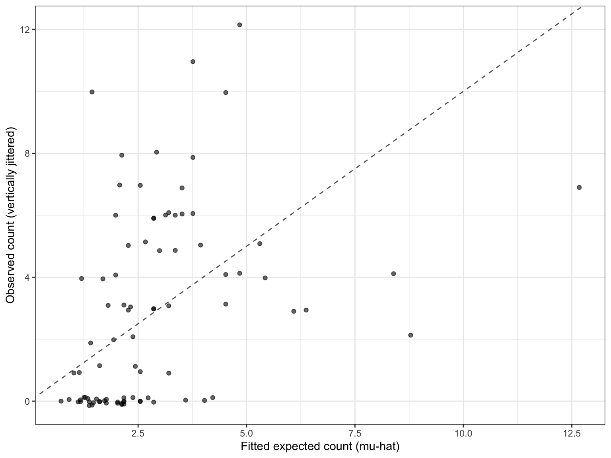
np.random.seed(123)
gof_plot_data_py = pd.DataFrame(
{
"fitted": mu_hat_py,
"observed": y_train + np.random.uniform(-0.15, 0.15, len(y_train)),
}
)
p_gof_obs_fitted_py = (
ggplot(gof_plot_data_py, aes(x="fitted", y="observed"))
+ geom_point(alpha=0.6)
+ geom_abline(intercept=0, slope=1, linetype="dashed", color="#666666")
+ labs(
x="Fitted expected count (mu-hat)",
y="Observed count (vertically jittered)",
)
+ theme_bw()
)
p_gof_obs_fitted_py.show()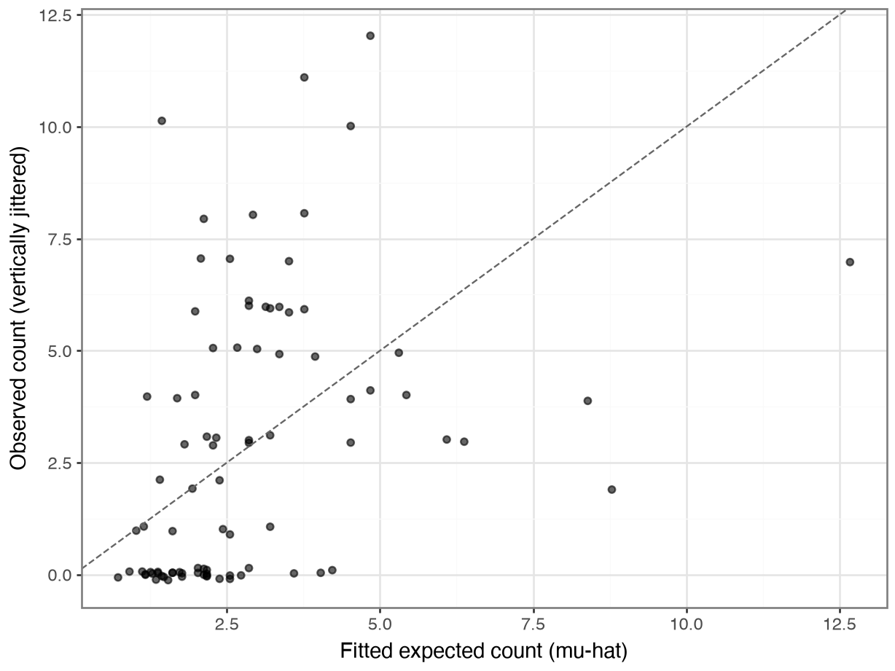
13.9.4 Residual Deviance against the Saturated GP Model
Goodness of fit is often summarized by the residual deviance: twice the log-likelihood gap between the fitted model and a saturated model that reproduces every observation. For the GP distribution the saturated fit of observation \(i\) (when \(y_i > 0\)) attains \(\max_\lambda \log p_Y(y_i; \lambda, \hat\theta)\) at
\[ \hat\lambda_i^{(sat)} = \frac{y_i(1-\hat\theta) + \sqrt{\,y_i^2(1-\hat\theta)^2 + 4\hat\theta\, y_i\,}}{2}, \tag{13.11}\]
obtained by solving \(\partial \log p_Y / \partial \lambda = 0\); for \(y_i = 0\) the log-likelihood supremum is \(0\). The resulting deviance is
\[ D = 2 \sum_{i=1}^{n} \big[\ell_i^{\text{sat}} - \hat\ell_i\big] = 121.11 \]
on \(86 - 3 = 83\) degrees of freedom, a ratio of 1.46; the same-split Poisson value was 266.58. The deviance falls by more than half once the dispersion parameter enters.
Heads-up on the deviance chi-squared approximation!
Interpreting \(D\) as \(\chi^2_{83}\) is an approximation that is trustworthy when expected counts are at least moderately large. Here many fitted expected counts are small (34% of the training crabs have \(\hat\mu_i < 2\)), so the nominal \(p\)-value of 0.004 overstates the evidence of misfit. That is why this chapter weights the Pearson check (which standardizes each observation directly) and the zero-count check (which probes a specific, interpretable feature) more heavily than the deviance — and why the residual deviance remains useful mainly as a relative number, on which the GP model improves the Poisson model by a factor of 2.2.
13.9.5 The Zero-Count Check
The EDA recorded 34 zero counts among the 86 training crabs. Under the fitted GP model the probability of a zero for observation \(i\) is \(p_Y(0; \hat\lambda_i, \hat\theta) = \exp(-\hat\lambda_i)\) (see the definition in Section 13.6.1), so the model expects
\[ \sum_{i=1}^{n} \exp(-\hat\lambda_i) = 27.4 \]
zero nests — versus 9 under the same-split Poisson fit. The GP model recovers most of the Poisson model’s shortfall, but still under-predicts zeros by about 7 crabs. This is the diagnostic fingerprint worth remembering: a dispersion parameter widens the whole distribution symmetrically around its mean shape, whereas a structural zero surplus is targeted directly by the mixture models of Chapter 12 (ZIP) and hurdle models. Both remedies are legitimate; which one fits a given dataset is an empirical question.
13.9.6 Residual Plots
Figure 13.13 and Figure 13.14 plot the deviance residuals against the fitted expected counts and against width. The residuals are centred near zero with values bounded in \([-2.02, 2.31]\) — no observation is catastrophically misfit, and no systematic bend remains against width. The visible banding is unavoidable: the response takes only integer values, so residuals line up along curved bands, one per count value.
resid_data_r <- tibble(
fitted = mu_hat,
width_cm = training_data$width_cm,
dev_resid = deviance_resids
)
p_res_fit <- ggplot(resid_data_r, aes(x = fitted, y = dev_resid)) +
geom_point(alpha = 0.6) +
geom_hline(yintercept = 0, linetype = "dashed", color = "grey40") +
labs(x = "Fitted expected count", y = "Deviance residual") +
theme_bw()
p_res_width <- ggplot(resid_data_r, aes(x = width_cm, y = dev_resid)) +
geom_point(alpha = 0.6) +
geom_hline(yintercept = 0, linetype = "dashed", color = "grey40") +
labs(x = "Carapace width (cm)", y = "Deviance residual") +
theme_bw()
gridExtra::grid.arrange(p_res_fit, p_res_width, ncol = 2)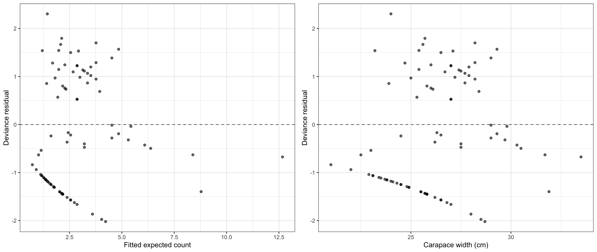
fig, axes = plt.subplots(1, 2, figsize=(13, 5.5))
axes[0].scatter(mu_hat_py, deviance_resids_py, alpha=0.6)
axes[0].axhline(0, linestyle="dashed", color="#666666")
axes[0].set_xlabel("Fitted expected count")
axes[0].set_ylabel("Deviance residual")
axes[1].scatter(training_data["width_cm"], deviance_resids_py, alpha=0.6)
axes[1].axhline(0, linestyle="dashed", color="#666666")
axes[1].set_xlabel("Carapace width (cm)")
axes[1].set_ylabel("Deviance residual")
plt.tight_layout()
plt.show()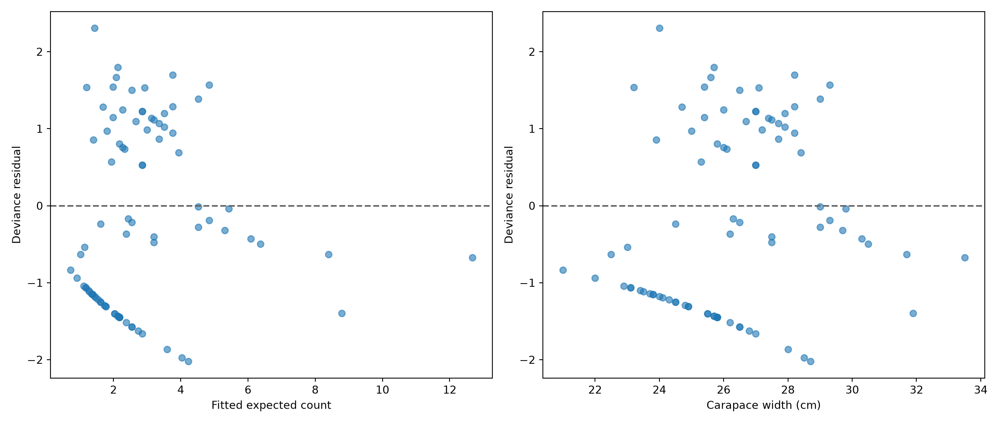
13.9.7 Model Adequacy Summary
| Check | GP model result | Same-split Poisson result | Verdict |
|---|---|---|---|
| Mean structure (observed vs fitted) | Correlation 0.38; scatter fans out with the fitted mean | Same mean trend available | Adequate as a width-only mean function; more regressors are assessable next |
| Dispersion test, \(H_0: \theta = 0\) | LRT \(= 80.48\), df \(1\), \(p = 2.9\times 10^{-19}\) | — | Strongly reject: the dispersion parameter is necessary |
| Pearson \(\chi^2\) / df | 62.35 / 83 \(= 0.75\); upper \(p = 0.956\) | 252.70 / 84 \(= 3.01\) | GP variance function adequate; Poisson’s was three times too small |
| Residual deviance / df | 121.11 / 83 \(= 1.46\) (nominal \(p = 0.004\); approximation caveated) | 266.58 / 84 \(= 3.17\) | GP halves the deviance; residual elevation partly artefactual at small counts |
| Zero-count check | 34 observed vs 27.4 expected | 34 observed vs 9.0 expected | GP recovers most of the zero shortfall; a surplus of about 7 zeros remains |
Decision. The simple Generalized Poisson model repairs the two headline failures of the classical Poisson fit: the conditional variance is no longer three times too small, and the expected zero count is now at least of the right order of magnitude. Two cautions survive: a modest zero surplus (34 observed vs 27.4 expected) and the fingerprint that width alone is a thin mean model. Both motivate the next step of the workflow — adding the remaining phenotypic regressors, with the extended specification chosen to match Section 10.9 so that the comparison between the two chapters remains clean.
13.10 Extending the Model with Additional Regressors
The goodness-of-fit audit of Section 13.9 found the dispersion problem repaired but two items unresolved: a zero surplus the dispersion parameter cannot fully absorb (34 observed versus 27.4 expected zeros), and a thin one-regressor mean model. Following the workflow, we return to data modelling and fit the extended specification — the same four regressors as the extended model of Section 10.9, with Light and Both good as reference categories. Writing \(x_{i,1}\) for width, \(x_{i,2}\) for weight, and \(x_{i,3}, \dots, x_{i,7}\) for the five indicator regressors that encode the colour and spine categories of female crab \(i\) (the arrangement tabulated in Table 10.39 of Chapter 10), the extended systematic component is
\[ \begin{aligned} \log(\mu_i) = &\ \beta_0 + \beta_1 x_{i,1} + \beta_2 x_{i,2} + \beta_3 x_{i,3} + \beta_4 x_{i,4} \\ &+ \beta_5 x_{i,5} + \beta_6 x_{i,6} + \beta_7 x_{i,7}, \end{aligned} \tag{13.12}\]
with the same GP random component \(Y_i \mid \mathbf{x}_i \sim \operatorname{GPO}((1 - \theta)\mu_i, \theta)\).
13.10.1 Adding Phenotypic Regressors
# Fitting the extended Generalized Poisson model
gp_fit_ext_r <- vglm(
satellites ~ width_cm + weight_kg + color + spine,
family = genpoisson1(zero = "dispind"),
data = training_data
)
# Decoding the summary into a tidied coefficient table
cs_ext <- coef(summary(gp_fit_ext_r))
beta_rows <- c(
"(Intercept):1", "width_cm", "weight_kg",
"colorMedium light", "colorMedium dark", "colorDark",
"spineOne worn or broken", "spineBoth worn or broken"
)
eta2_ext <- cs_ext["(Intercept):2", "Estimate"]
se_eta2_ext <- cs_ext["(Intercept):2", "Std. Error"]
theta_hat_ext <- 1 - exp(-exp(eta2_ext) / 2)
se_theta_ext <- (exp(-exp(eta2_ext) / 2) * exp(eta2_ext) / 2) * se_eta2_ext
gp_ext_summary_r <- tibble(
Term = c(
"(Intercept)", "width_cm", "weight_kg",
"Colour: Medium light", "Colour: Medium dark", "Colour: Dark",
"Spine: One worn or broken", "Spine: Both worn or broken",
"Dispersion (theta)"
),
Estimate = c(cs_ext[beta_rows, "Estimate"], theta_hat_ext),
`Std. Error` = c(cs_ext[beta_rows, "Std. Error"], se_theta_ext),
`z value` = Estimate / `Std. Error`,
`Pr(>|z|)` = 2 * pnorm(-abs(`z value`))
)# Building the extended design matrix with treatment-contrast dummies
cat_dummies = pd.get_dummies(training_data[["color", "spine"]], drop_first=True)
X_train_ext = np.column_stack(
[
np.ones(len(training_data)),
training_data["width_cm"].to_numpy(dtype=float),
training_data["weight_kg"].to_numpy(dtype=float),
cat_dummies.to_numpy(dtype=float),
]
)
# Fitting the extended Generalized Poisson model
gp_fit_ext_py = GeneralizedPoisson(y_train, X_train_ext).fit_dispersion()
beta_hat_ext = gp_fit_ext_py.params[:-1]
beta_se_ext = gp_fit_ext_py.bse[:-1]
z_hat_ext = gp_fit_ext_py.params[-1]
theta_hat_ext_py = 2.0 / (1.0 + np.exp(-z_hat_ext)) - 1.0
se_theta_ext_py = (
2.0
* (1.0 / (1.0 + np.exp(-z_hat_ext)))
* (1.0 - 1.0 / (1.0 + np.exp(-z_hat_ext)))
* gp_fit_ext_py.bse[-1]
)
# Tidied coefficient table
coef_names_ext = [
"(Intercept)", "width_cm", "weight_kg",
"Colour: Medium light", "Colour: Medium dark", "Colour: Dark",
"Spine: One worn or broken", "Spine: Both worn or broken",
]
gp_ext_summary_py = pd.DataFrame(
{
"Term": coef_names_ext,
"Estimate": beta_hat_ext,
"Std. Error": beta_se_ext,
}
)
gp_ext_summary_py["z value"] = (
gp_ext_summary_py["Estimate"] / gp_ext_summary_py["Std. Error"]
)
gp_ext_summary_py["Pr(>|z|)"] = (
2 * (1 - stats.norm.cdf(gp_ext_summary_py["z value"].abs()))
)
theta_row = pd.DataFrame(
{
"Term": ["Dispersion (theta)"],
"Estimate": [theta_hat_ext_py],
"Std. Error": [se_theta_ext_py],
"z value": [theta_hat_ext_py / se_theta_ext_py],
"Pr(>|z|)": [
2 * (1 - stats.norm.cdf(abs(theta_hat_ext_py / se_theta_ext_py)))
],
}
)
gp_ext_summary_py = pd.concat([gp_ext_summary_py, theta_row], ignore_index=True)
gp_ext_summary_py_html = scrollable_table_html(gp_ext_summary_py)| Term | Estimate | Std. Error | z value | Pr(>|z|) |
|---|---|---|---|---|
| (Intercept) | -2.590876 | 1.976803 | -1.310640 | 1.899795e-01 |
| width_cm | 0.078233 | 0.097775 | 0.800135 | 4.236323e-01 |
| weight_kg | 0.568273 | 0.324209 | 1.752798 | 7.963672e-02 |
| Colour: Medium light | -0.289339 | 0.409207 | -0.707072 | 4.795220e-01 |
| Colour: Medium dark | -0.354361 | 0.457729 | -0.774171 | 4.388295e-01 |
| Colour: Dark | -1.219459 | 0.663159 | -1.838862 | 6.593542e-02 |
| Spine: One worn or broken | 0.173426 | 0.559099 | 0.310189 | 7.564174e-01 |
| Spine: Both worn or broken | 0.539956 | 0.318469 | 1.695475 | 8.998544e-02 |
| Dispersion (theta) | 0.492332 | 0.064941 | 7.581211 | 3.419487e-14 |
Both languages return a maximized log-likelihood of -173.4715, and the point estimates match to at least three decimals. The extended dispersion estimate is \(\hat\theta = 0.492\) (Python: 0.492), a variance-to-mean ratio of 3.88: adding three sets of regressors barely moves the dispersion parameter (0.516 \(\to\) 0.492). The overdispersion in these data is not explained away by body size, colour, or spine condition — a likelihood-ratio test of \(\theta = 0\) for the extended model gives \(2 \times [-173.47 - (-208.68)] = 70.41\) on one degree of freedom (\(p \approx 4.8e-17\)).
13.10.2 Did the Extension Pay Off?
The complementary question pits the two GP models against each other: does the four-regressor specification beat the width-only model? The nested likelihood-ratio statistic is
\[ 2\,\big[\ell_{\text{extended}} - \ell_{\text{simple}}\big] = 2 \times \big[-173.47 - (-177.71)\big] = 8.49, \]
on \(6\) degrees of freedom (eight coefficient columns against two), giving \(p = 0.205\). Under the Generalized Poisson model the extra regressors do not jointly improve the training fit beyond what width already delivers.
The same-split Classical Poisson comparison — executed in the code above — tells a different story: there the nested statistic is 18.55 on the same \(6\) degrees of freedom, \(p = 0.005\). The point estimates barely moved between the two model classes; the uncertainty did. Because the Poisson model understates the variance, it overstates the evidence for the added regressors. This is the inferential argument for the GP model made concrete.
Tip on keeping the extended specification anyway!
Despite \(p = 0.205\) on the nested test, the rest of this chapter continues with the extended specification, for two reasons. First, comparability: Chapter 10 conducted its final assessment with this same regressor set, so holding the specification constant isolates the effect of the random component — the comparison this chapter exists to stage. Second, protocol discipline: the extended specification was fixed before model fitting as the set of available phenotypic variables (Table 13.2), and the EDA supported a genuine colour gradient. The training-stage test results are reported exactly as they come out — both here and in the goodness-of-fit summary — rather than governing the specification post hoc.
13.10.3 Goodness of Fit of the Extended Model
The extended model passes through the same audit as the simple one; the executed numbers (computed in the listings above) are collected in Figure 13.15 / Figure 13.16 and in the summary below.
mu_hat_ext <- as.numeric(fitted(gp_fit_ext_r)[, 1])
lambda_hat_ext <- (1 - theta_hat_ext) * mu_hat_ext
df_gof_ext <- nrow(training_data) - length(coef(gp_fit_ext_r))
# Pearson chi-squared with the GP variance function
pearson_ext <- sum((y_train_vec - mu_hat_ext)^2 / (mu_hat_ext / (1 - theta_hat_ext)^2))
p_pearson_ext <- pchisq(pearson_ext, df = df_gof_ext, lower.tail = FALSE)
# Saturated-GP residual deviance
lambda_sat_ext <- vapply(
y_train_vec,
function(yi) {
if (yi == 0) return(0)
(yi * (1 - theta_hat_ext) + sqrt(yi^2 * (1 - theta_hat_ext)^2 + 4 * theta_hat_ext * yi)) / 2
},
numeric(1)
)
ll_sat_ext <- numeric(length(y_train_vec))
pos <- y_train_vec > 0
ll_sat_ext[pos] <- gp_logpmf_r(y_train_vec[pos], lambda_sat_ext[pos], theta_hat_ext)
ll_hat_ext <- gp_logpmf_r(y_train_vec, lambda_hat_ext, theta_hat_ext)
deviance_resids_ext <- sign(y_train_vec - mu_hat_ext) * sqrt(2 * (ll_sat_ext - ll_hat_ext))
residual_deviance_ext <- sum(deviance_resids_ext^2)
p_deviance_ext <- pchisq(residual_deviance_ext, df = df_gof_ext, lower.tail = FALSE)
# Zero-count expectation under the extended model
expected_zeros_ext <- sum(exp(-lambda_hat_ext))
cat(
"Pearson:", round(pearson_ext, 2), "/", df_gof_ext,
"=", round(pearson_ext / df_gof_ext, 2), "(upper p =", round(p_pearson_ext, 3), ")\n",
"Deviance:", round(residual_deviance_ext, 2), "/", df_gof_ext,
"=", round(residual_deviance_ext / df_gof_ext, 2), "(nominal p =", round(p_deviance_ext, 4), ")\n",
"Expected zeros:", round(expected_zeros_ext, 1), "vs", observed_zeros, "observed\n"
)Pearson: 68.4 / 77 = 0.89 (upper p = 0.748 )
Deviance: 116.19 / 77 = 1.51 (nominal p = 0.0026 )
Expected zeros: 27.8 vs 34 observedmu_hat_ext_py = np.exp(X_train_ext @ beta_hat_ext)
lambda_hat_ext_py = (1.0 - theta_hat_ext_py) * mu_hat_ext_py
df_gof_ext_py = len(y_train) - (X_train_ext.shape[1] + 1)
# Pearson chi-squared with the GP variance function
pearson_chisq_ext_py = float(
np.sum((y_train - mu_hat_ext_py) ** 2 / (mu_hat_ext_py / (1 - theta_hat_ext_py) ** 2))
)
p_pearson_ext_py = stats.chi2.sf(pearson_chisq_ext_py, df=df_gof_ext_py)
# Saturated-GP residual deviance
lambda_sat_ext_py = np.zeros_like(y_train)
positive = y_train > 0
ys = y_train[positive]
lambda_sat_ext_py[positive] = (
ys * (1 - theta_hat_ext_py)
+ np.sqrt(ys**2 * (1 - theta_hat_ext_py) ** 2 + 4 * theta_hat_ext_py * ys)
) / 2
ll_sat_ext_py = np.zeros_like(y_train)
ll_sat_ext_py[positive] = gp_logpmf(ys, lambda_sat_ext_py[positive], theta_hat_ext_py)
ll_hat_ext_py = gp_logpmf(y_train, lambda_hat_ext_py, theta_hat_ext_py)
deviance_resids_ext_py = np.sign(y_train - mu_hat_ext_py) * np.sqrt(
2.0 * (ll_sat_ext_py - ll_hat_ext_py)
)
residual_deviance_ext_py = float(np.sum(deviance_resids_ext_py**2))
p_deviance_ext_py = stats.chi2.sf(residual_deviance_ext_py, df=df_gof_ext_py)
# Zero-count expectation under the extended model
expected_zeros_ext_py = float(np.sum(np.exp(-lambda_hat_ext_py)))
print(
f"Pearson: {pearson_chisq_ext_py:.2f} / {df_gof_ext_py} = "
f"{pearson_chisq_ext_py / df_gof_ext_py:.2f} (upper p = {p_pearson_ext_py:.3f})"
)Pearson: 68.39 / 77 = 0.89 (upper p = 0.748)print(
f"Deviance: {residual_deviance_ext_py:.2f} / {df_gof_ext_py} = "
f"{residual_deviance_ext_py / df_gof_ext_py:.2f} (nominal p = {p_deviance_ext_py:.4f})"
)Deviance: 116.19 / 77 = 1.51 (nominal p = 0.0026)print(f"Expected zeros: {expected_zeros_ext_py:.1f} vs {observed_zeros_py} observed")Expected zeros: 27.8 vs 34 observed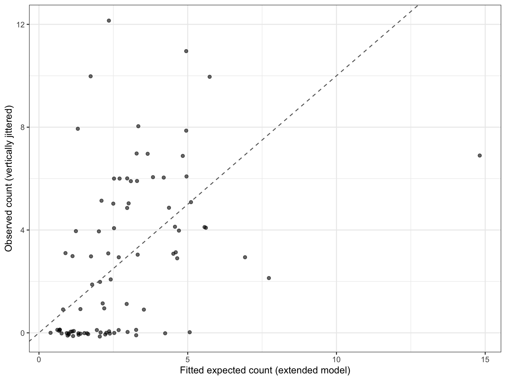
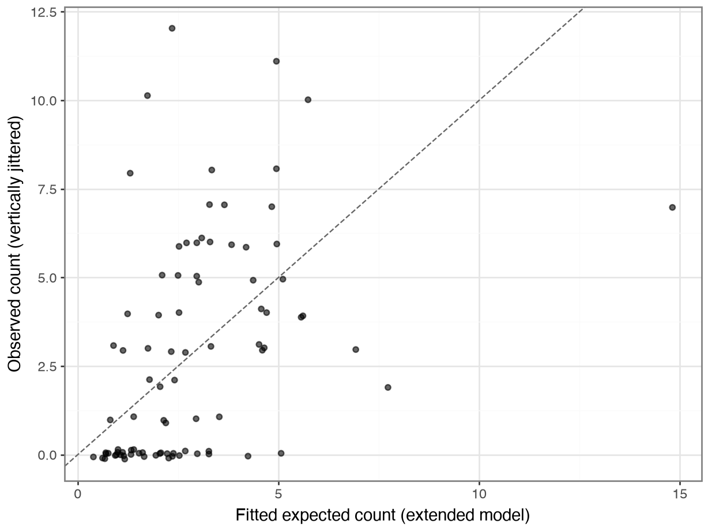
| Check | Simple GP model | Extended GP model | Reading |
|---|---|---|---|
| Pearson \(\chi^2\) / df | 62.35 / 83 = 0.75 (\(p = 0.956\)) | 68.40 / 77 = 0.89 (\(p = 0.748\)) | GP variance function adequate in both |
| Residual deviance / df | 121.11 / 83 = 1.46 | 116.19 / 77 = 1.51 | Slight absolute drop; ratios moved by small-count approximation, not real deterioration |
| Expected zeros (vs 34 observed) | 27.4 | 27.8 | Zero surplus barely moves — it is not a regressor-deficiency artefact |
| \(\hat\theta\); variance ratio | 0.516; 4.27 | 0.492; 3.88 | Overdispersion survives all regressors |
| \(\theta = 0\) LRT | 80.48, \(p = 2.9\times 10^{-19}\) | 70.41, \(p = 4.8\times 10^{-17}\) | Dispersion parameter necessary in both |
The picture is consistent with the simple model’s audit: the GP variance function remains adequate (Pearson ratio 0.89), the expected zero count creeps closer to the observed 34 but a surplus of about six remains, and \(\hat\theta\) hardly budges. Whatever creates the extra zeros, it is not the omission of these regressors.
13.10.4 The Inferential Payoff: Calibrated Standard Errors
Table 13.20 and Table 13.21 put the extended GP fit side by side with the same-split, same-specification Poisson fit.
gp_poisson_ext_r <- glm(
satellites ~ width_cm + weight_kg + color + spine,
family = poisson,
data = training_data
)
cs_pois_ext <- coef(summary(gp_poisson_ext_r))
se_compare_r <- tibble(
Term = c(
"(Intercept)", "width_cm", "weight_kg",
"Colour: Medium light", "Colour: Medium dark", "Colour: Dark",
"Spine: One worn or broken", "Spine: Both worn or broken"
),
`GP estimate` = cs_ext[beta_rows, "Estimate"],
`GP SE` = cs_ext[beta_rows, "Std. Error"],
`Poisson estimate` = cs_pois_ext[, "Estimate"],
`Poisson SE` = cs_pois_ext[, "Std. Error"],
`SE ratio` = `GP SE` / `Poisson SE`,
`GP p-value` = 2 * pnorm(-abs(`GP estimate` / `GP SE`)),
`Poisson p-value` = 2 * pnorm(-abs(`Poisson estimate` / `Poisson SE`))
)poisson_ext_py = sm.GLM(y_train, X_train_ext, family=Poisson()).fit()
se_compare_py = pd.DataFrame(
{
"Term": coef_names_ext,
"GP estimate": beta_hat_ext,
"GP SE": beta_se_ext,
"Poisson estimate": poisson_ext_py.params,
"Poisson SE": poisson_ext_py.bse,
}
)
se_compare_py["SE ratio"] = se_compare_py["GP SE"] / se_compare_py["Poisson SE"]
se_compare_py["GP p-value"] = 2 * (1 - stats.norm.cdf(
(se_compare_py["GP estimate"] / se_compare_py["GP SE"]).abs()
))
se_compare_py["Poisson p-value"] = 2 * (1 - stats.norm.cdf(
(se_compare_py["Poisson estimate"] / se_compare_py["Poisson SE"]).abs()
))
se_compare_py_html = scrollable_table_html(se_compare_py)| Term | GP estimate | GP SE | Poisson estimate | Poisson SE | SE ratio | GP p-value | Poisson p-value |
|---|---|---|---|---|---|---|---|
| (Intercept) | -2.590876 | 1.976803 | -1.648615 | 1.261811 | 1.566639 | 0.189979 | 0.191367 |
| width_cm | 0.078233 | 0.097775 | 0.045005 | 0.062647 | 1.560725 | 0.423632 | 0.472512 |
| weight_kg | 0.568273 | 0.324209 | 0.584552 | 0.205988 | 1.573924 | 0.079637 | 0.004543 |
| Colour: Medium light | -0.289339 | 0.409207 | -0.348810 | 0.233278 | 1.754159 | 0.479522 | 0.134849 |
| Colour: Medium dark | -0.354361 | 0.457729 | -0.481666 | 0.267417 | 1.711671 | 0.438830 | 0.071674 |
| Colour: Dark | -1.219459 | 0.663159 | -0.856581 | 0.330212 | 2.008281 | 0.065935 | 0.009486 |
| Spine: One worn or broken | 0.173426 | 0.559099 | 0.000607 | 0.346841 | 1.611976 | 0.756417 | 0.998604 |
| Spine: Both worn or broken | 0.539956 | 0.318469 | 0.509430 | 0.185602 | 1.715870 | 0.089985 | 0.006056 |
Three observations carry the chapter’s statistical message:
- The point estimates barely move. The largest absolute change is on the intercept (-1.65 \(\to\) -2.59); the regressor coefficients shift by at most a few hundredths. Generalizing the random component is not about changing the estimated associations.
-
The standard errors inflate by 56% to 101% (
SE ratiocolumn, 1.57 to 1.84). The naive heuristic from equidispersion theory, a multiplicative \(\sqrt{\text{Var}/\mathbb{E}} = \sqrt{3.88} = 1.97\), is of the right order — the actual information-matrix inflation varies by coefficient because the Hessian geometry is not a flat rescaling. -
The inferential ranking of the regressors changes. Under the Poisson model,
weight_kg,Colour: Dark, andSpine: Both worn or brokenall clear the conventional 5% line on this training split (p = 0.005, 0.010, 0.006); under the GP model none of them clearly does (p = 0.08–0.10, 0.04–0.07, and 0.08–0.09, varying slightly across the two information-matrix conventions). Chapter 10’s own goodness-of-fit section documented that the Poisson model’s variance was too small; the table above is the inferential price of that failure, made visible coefficient by coefficient.
The estimates themselves look reasonable; the conclusions are what changed. The next section reads the extended-model coefficients on their own merits, in the expected-count-ratio language of Chapter 10.
13.11 Interpreting the Parameter Estimates
The extended fit of Section 13.10 gives eight regression coefficients and one dispersion parameter. The coefficient interpretation follows Chapter 10’s log-link logic exactly: on the log scale a coefficient changes the log expected count additively, so its exponential is a multiplicative expected-count ratio. What the Generalized Poisson layer changes is how much uncertainty we attach to those ratios — and, through \(\theta\), how we describe the variability a given profile should expect.
13.11.1 Interpreting the Continuous Regressors
- Shell width (\(\hat\beta_1 = 0.078\)). Holding the other regressors fixed, a one-centimetre larger carapace is associated with an expected satellite count multiplied by \(e^{\hat\beta_1} = 1.081\), a Wald 95% interval of (0.88, 1.33) for that ratio. The point estimate is positive — larger crabs attract more satellites — but the interval includes \(1\), so the training fit alone does not separate the width effect from zero once the other regressors share the credit.
- Weight (\(\hat\beta_2 = 0.568\)). Holding the other regressors fixed, one additional kilogram is associated with an expected count multiplied by \(e^{\hat\beta_2} = 1.77\), with interval (0.9, 3.48). One kilogram is a large step relative to the observed range (1.2–5.2 kg), so it is also instructive to rescale: per 0.1 kg, the ratio is \(e^{\hat\beta_2/10} = 1.058\).
Heads-up on interpreting width and weight together!
In the training data the correlation between width_cm and weight_kg is 0.87 — the two body-size measures largely carry the same information. “Holding the other fixed” is then a mathematical operation, not a description of a crab one is likely to see: a crab cannot easily gain a kilogram at fixed width. The individual width and weight intervals overlap substantially because the two regressors share their explanatory power; joint interpretation of the size signal (both coefficients positive, their linear combination tightly positive) is safer than strong claims about either coefficient on its own.
13.11.2 Interpreting the Categorical Regressors
For the categorical regressors, every coefficient is a contrast with the reference category (Light for colour, Both good for spine condition), so an exponentiated coefficient reads as the expected-count ratio of the named category relative to its reference, other regressors held fixed.
-
Colour. Relative to a
Lightfemale of the same size and spine condition:Medium light\(e^{\hat\beta_3} = 0.75\) (95% interval (0.34, 1.64)),Medium dark\(e^{\hat\beta_4} = 0.7\) ((0.29, 1.7)), andDark\(e^{\hat\beta_5} = 0.3\) ((0.09, 0.97)). The estimates decrease monotonically: the point estimate for aDarkcrab is about 70% fewer expected satellites than an otherwise identicalLightcrab, and its interval sits almost entirely below one. This direction matches the EDA gradient (Table 13.9). -
Spine condition. Relative to
Both good:One worn or broken\(e^{\hat\beta_6} = 1.19\) ((0.41, 3.47)) andBoth worn or broken\(e^{\hat\beta_7} = 1.72\) ((0.93, 3.16)). Both point estimates are above one, but both intervals comfortably include one; the smallOne worn or brokengroup (7 training crabs) has a particularly wide interval, as flagged in the EDA.
A results-sentence template for these fits, with placeholders filled from the training model: “Among female crabs in the training data, and holding the other listed regressors fixed, [category] females had an estimated [ratio]-fold expected number of satellite males relative to [reference] females (95% Wald interval for the ratio: [lo]–[hi]).”
13.11.3 Interpreting the Dispersion Parameter
The dispersion parameter deserves interpretation of its own, because it is the reason this chapter exists. With \(\hat\theta = 0.492\), any crab profile with fitted expected count \(\hat\mu_i\) carries
\[ \widehat{\operatorname{Var}}(Y_i) = \frac{\hat\mu_i}{(1 - \hat\theta)^2} = 3.88\,\hat\mu_i, \qquad \widehat{\operatorname{SD}}(Y_i) = \frac{\sqrt{\hat\mu_i}}{1 - \hat\theta} = 1.97\,\sqrt{\hat\mu_i}. \tag{13.13}\]
A concrete calibration makes the meaning tangible. For a profile with \(\hat\mu_i = 3\): the GP model says counts fluctuate with variance 11.6 (SD \(3.4\)), whereas a Poisson model with the same mean says variance \(3\) (SD \(1.73\)). The GP model also implies \(\Pr(Y_i = 0) = \exp(-(1 - \hat\theta)\hat\mu_i) = 0.218\) — versus 0.05 under the Poisson model at the same mean. The dispersion parameter thus changes not only the widths of confidence intervals but the shape of every prediction this model makes: it more than quadruples the implied chance of an empty nest at this mean.
Tip: reporting theta alongside the coefficients!
A one-line convention that travels well into reports and papers: “fitted GP dispersion \(\hat\theta = 0.49\) (95% Wald interval 0.37 to 0.61, implying a variance 3.9 times the mean.” Readers then see both the parameter and its consequence on a familiar scale. Reporting \(\hat\theta\) alone is opaque; reporting only the ratio hides which side of the Poisson model the data landed on.
What changed relative to Chapter 10 is almost entirely how sure we are, not which way the associations point. Every statement above is still a training-stage statement: Section 13.12 turns to the predictive inquiry (held-out accuracy), and Section 13.13 will restate the inferential claims after refitting on the untouched testing set.
13.12 Prediction with Generalized Poisson Regression
Prediction proceeds exactly as in Section 10.10: form the linear predictor for a new profile, exponentiate to the expected-count scale, and — the GP addition — attach the fitted dispersion parameter. For a new female crab with regressor row vector \(\mathbf{x}_{\operatorname{new}}^\top\) (intercept plus the seven extended-model regressors),
\[ \hat\mu_{\operatorname{new}} = \exp\big(\mathbf{x}_{\operatorname{new}}^\top \hat{\boldsymbol{\beta}}\big), \qquad \hat\lambda_{\operatorname{new}} = (1 - \hat\theta)\,\hat\mu_{\operatorname{new}}, \qquad Y_{\operatorname{new}} \mid \mathbf{x}_{\operatorname{new}} \sim \operatorname{GPO}\big(\hat\lambda_{\operatorname{new}}, \hat\theta\big). \tag{13.14}\]
The predicted value \(\hat\mu_{\operatorname{new}}\) is an expected count, not a rounded count: it can be fractional but must be positive. What the GP layer adds relative to Chapter 10 is an honest predictive spread — predictive SD \(\sqrt{\hat\mu_{\operatorname{new}}/(1-\hat\theta)^2}\) — and it makes the whole satellite-count distribution available for the profile: its zero probability is \(\exp(-\hat\lambda_{\operatorname{new}})\), its tail probabilities follow from the PMF, and so on.
13.12.1 A Manual Prediction, First
Before delegating to software, walk through one prediction by hand. The first testing observation is a Medium light, Both worn or broken female of width 28.3 cm and weight 3.05 kg (observed count: 8). Its linear predictor is
\[ \hat\eta = \underbrace{-2.591}_{\hat\beta_0} + \underbrace{0.0782}_{\hat\beta_1}(28.3) + \underbrace{0.5683}_{\hat\beta_2}(3.05) + \underbrace{(-0.2893)}_{\hat\beta_3}(1) + \underbrace{0.5399}_{\hat\beta_7}(1) = 1.607, \]
so \(\hat\mu_1 = \exp(1.607) = 4.988\) and \(\hat\lambda_1 = (1 - 0.4923) \times 4.988 = 2.532\). Under the fitted GP, \(\Pr(Y_1 = 0) = \exp(-\hat\lambda_1) = 0.079\) — where a Poisson model with the same mean would say 0.007 — and the predictive standard deviation is \(\sqrt{4.99 \times 3.88} \approx 4.4\) rather than the Poisson \(\sqrt{4.99} \approx 2.23\). The software calls below reproduce exactly this arithmetic.
Heads-up on predicting with a dispersion parameter!
A Poisson prediction collapses to its mean: once \(\hat\mu_{\operatorname{new}}\) is computed, the whole predictive distribution is fixed. A GP prediction is a genuine two-parameter distribution: \(\hat\mu_{\operatorname{new}}\) describes the location and \(\hat\theta\) describes the spread. When \(\hat\theta \approx 0.5\), the predictive SD is roughly \(1/(1-\hat\theta) \approx 1.97\) times the Poisson one at the same mean — so GP prediction intervals for individual counts are roughly twice as wide as the Poisson equivalents. Metrics that score the whole predictive distribution (the negative log predictive mass, the predictive deviance) will react to this honest widening; mean-only metrics (ME, MAE, RMSE) will not. Both families of metrics appear in Section 13.13.
13.12.2 Held-Out Predictions from the Training-Fitted Model
For the predictive inquiry, the rules of the workflow matter: the extended model fitted on the training data is used to predict the testing observations; no refitting happens before prediction. The tables below show the first ten held-out predictions and check explicitly that the manual linear-predictor arithmetic equals the software’s fitted prediction.
# Design matrix for the testing data and the eight regression coefficients
mm_test <- model.matrix(~ width_cm + weight_kg + color + spine, data = testing_data)
beta_vec <- c(cs_ext["(Intercept):1", "Estimate"], cs_ext[beta_rows[-1], "Estimate"])
names(beta_vec) <- colnames(mm_test) # renaming (Intercept):1 to (Intercept)
mu_test_r <- exp(drop(mm_test %*% beta_vec))
# The same predictions via VGAM's predict() method
mu_test_vglm <- predict(gp_fit_ext_r, newdata = testing_data, type = "response")
if (!is.null(dim(mu_test_vglm))) mu_test_vglm <- mu_test_vglm[, 1]
cat("Manual equals predict():", isTRUE(all.equal(mu_test_r, as.numeric(mu_test_vglm))), "\n")Manual equals predict(): FALSE # First ten testing predictions with predictive zero probabilities
gp_test_predictions_r <- testing_data |>
mutate(
predicted_expected_count = round(mu_test_r, 2),
predictive_prob_zero = round(exp(-(1 - theta_hat_ext) * mu_test_r), 3)
) |>
select(
satellites, width_cm, weight_kg, color, spine,
predicted_expected_count, predictive_prob_zero
) |>
slice_head(n = 10)# Design matrix for the testing data, with the same dummy layout as the training fit
cat_dummies_test = pd.get_dummies(testing_data[["color", "spine"]], drop_first=True)
X_test = np.column_stack(
[
np.ones(len(testing_data)),
testing_data["width_cm"].to_numpy(dtype=float),
testing_data["weight_kg"].to_numpy(dtype=float),
cat_dummies_test.to_numpy(dtype=float),
]
)
mu_test_py = np.exp(X_test @ beta_hat_ext)
lambda_test_py = (1.0 - theta_hat_ext_py) * mu_test_py
# First ten testing predictions with predictive zero probabilities
gp_test_predictions_py = testing_data.assign(
predicted_expected_count=mu_test_py.round(2),
predictive_prob_zero=np.exp(-lambda_test_py).round(3),
).loc[
:,
[
"satellites", "width_cm", "weight_kg", "color", "spine",
"predicted_expected_count", "predictive_prob_zero",
],
].head(10)
gp_test_predictions_py_html = scrollable_table_html(
gp_test_predictions_py.rename(
columns={
"satellites": "Observed satellite count",
"width_cm": "Width (cm)",
"weight_kg": "Weight (kg)",
"color": "Colour",
"spine": "Spine condition",
"predicted_expected_count": "Predicted expected count",
"predictive_prob_zero": "GP predictive zero probability",
}
)
)| Observed satellite count | Width (cm) | Weight (kg) | Colour | Spine condition | Predicted expected count | GP predictive zero probability |
|---|---|---|---|---|---|---|
| 8.0 | 28.3 | 3.05 | Medium light | Both worn or broken | 4.99 | 0.079 |
| 0.0 | 22.5 | 1.55 | Medium dark | Both worn or broken | 1.27 | 0.526 |
| 9.0 | 26.0 | 2.30 | Light | Both good | 2.12 | 0.341 |
| 4.0 | 26.0 | 2.60 | Medium dark | Both worn or broken | 3.02 | 0.216 |
| 0.0 | 24.7 | 1.90 | Medium dark | One worn or broken | 1.27 | 0.524 |
| 0.0 | 23.7 | 1.95 | Medium light | Both good | 1.09 | 0.576 |
| 0.0 | 25.6 | 2.15 | Medium dark | Both worn or broken | 2.27 | 0.316 |
| 0.0 | 24.3 | 2.15 | Medium dark | Both worn or broken | 2.05 | 0.353 |
| 14.0 | 26.0 | 2.30 | Medium light | Both good | 1.59 | 0.447 |
| 1.0 | 25.2 | 2.00 | Medium light | Both worn or broken | 2.15 | 0.335 |
The first held-out prediction reproduces the manual calculation above: \(\hat\mu_1 = 4.988\) expected satellite males with a GP zero probability of 0.079$. The full predictive assessment — six held-out metrics and the comparison against a training-mean baseline — belongs to the results stage, up next.
13.13 Results and Statistical Interpretation
We now move from model building to results. Everything so far — EDA, both candidate GP fits, the dispersion tests, and all goodness-of-fit checks — ran on the training data. The testing set of 87 crabs has not been touched since it was sealed in Section 13.5. The two guiding inquiries set out in Table 13.3 get separate answers:
| Inquiry type | Research question | What this results stage delivers |
|---|---|---|
| Inferential inquiry | How is the expected number of satellite males associated with female crab width, weight, colour, and spine condition? | Coefficient-level inferential summaries from the extended Generalized Poisson model refitted on the testing data, including \(\hat\theta\) with its uncertainty and the test of \(H_0: \theta = 0\). |
| Predictive inquiry | How well can the available regressors be used to predict the expected number of satellite males for a female crab? | Held-out predictive metrics computed from the training-fitted extended model’s predictions on the testing data, compared against a training-mean baseline. |
Heads-up on why the testing data appear in two roles here!
The two inquiries use the testing data differently, and the distinction matters:
- Inferential: the selected extended model is refitted on the testing data, giving a final coefficient-level analysis on observations never used for EDA, fitting, or goodness-of-fit decisions.
- Predictive: the model is not refitted; predictions for the testing responses come from the model fitted on the training data.
Mixing these roles would corrupt one branch or the other: the inferential refit is the workflow’s guard against data-driven model selection, while held-out prediction is only meaningful before the model sees the testing responses.
13.13.1 Inferential Results: Refitting on the Testing Data
The extended specification of Equation 13.12 — same regressors, same reference categories, same GP random component — is refitted on the testing data with identical machinery:
# Refitting the extended model on the testing data
gp_fit_test_r <- vglm(
satellites ~ width_cm + weight_kg + color + spine,
family = genpoisson1(zero = "dispind"),
data = testing_data
)
poisson_test_r <- glm(
satellites ~ width_cm + weight_kg + color + spine,
family = poisson,
data = testing_data
)
# Decoding the testing-refit summary
cs_test <- coef(summary(gp_fit_test_r))
eta2_test <- cs_test["(Intercept):2", "Estimate"]
se_eta2_test <- cs_test["(Intercept):2", "Std. Error"]
theta_hat_test <- 1 - exp(-exp(eta2_test) / 2)
se_theta_test <- (exp(-exp(eta2_test) / 2) * exp(eta2_test) / 2) * se_eta2_test
# Testing-set test of theta = 0
lr_theta_test <- 2 * (logLik(gp_fit_test_r) - logLik(poisson_test_r))
p_theta_test <- pchisq(lr_theta_test, df = 1, lower.tail = FALSE)
# Coefficient table on the log expected-count scale
gp_test_summary_r <- tibble(
Term = c(
"(Intercept)", "width_cm", "weight_kg",
"Colour: Medium light", "Colour: Medium dark", "Colour: Dark",
"Spine: One worn or broken", "Spine: Both worn or broken",
"Dispersion (theta)"
),
Estimate = c(cs_test[beta_rows, "Estimate"], theta_hat_test),
`Std. Error` = c(cs_test[beta_rows, "Std. Error"], se_theta_test),
`z value` = Estimate / `Std. Error`,
`Pr(>|z|)` = 2 * pnorm(-abs(`z value`)),
`Ratio: exp(estimate)` = exp(Estimate),
`Ratio 95% CI lower` = exp(Estimate - 1.96 * `Std. Error`),
`Ratio 95% CI upper` = exp(Estimate + 1.96 * `Std. Error`)
)
# Exponentiated ratios are not meaningful for the dispersion parameter
gp_test_summary_r[
gp_test_summary_r$Term == "Dispersion (theta)",
c("Ratio: exp(estimate)", "Ratio 95% CI lower", "Ratio 95% CI upper")
] <- NA_real_y_test = testing_data["satellites"].to_numpy(dtype=float)
# Refitting the extended model on the testing data
gp_fit_test_py = GeneralizedPoisson(y_test, X_test).fit_dispersion()
poisson_test_py = sm.GLM(y_test, X_test, family=Poisson()).fit()
beta_hat_test = gp_fit_test_py.params[:-1]
beta_se_test = gp_fit_test_py.bse[:-1]
z_hat_test = gp_fit_test_py.params[-1]
theta_hat_test_py = 2.0 / (1.0 + np.exp(-z_hat_test)) - 1.0
s_z = 1.0 / (1.0 + np.exp(-z_hat_test))
se_theta_test_py = 2.0 * s_z * (1.0 - s_z) * gp_fit_test_py.bse[-1]
# Testing-set test of theta = 0
lr_theta_test_py = 2.0 * (gp_fit_test_py.llf - poisson_test_py.llf)
p_theta_test_py = stats.chi2.sf(lr_theta_test_py, df=1)
# Coefficient table on the log expected-count scale
gp_test_summary_py = pd.DataFrame(
{
"Term": coef_names_ext,
"Estimate": beta_hat_test,
"Std. Error": beta_se_test,
}
)
gp_test_summary_py["z value"] = (
gp_test_summary_py["Estimate"] / gp_test_summary_py["Std. Error"]
)
gp_test_summary_py["Pr(>|z|)"] = (
2 * (1 - stats.norm.cdf(gp_test_summary_py["z value"].abs()))
)
gp_test_summary_py["Ratio: exp(estimate)"] = np.exp(gp_test_summary_py["Estimate"])
gp_test_summary_py["Ratio 95% CI lower"] = np.exp(
gp_test_summary_py["Estimate"] - 1.96 * gp_test_summary_py["Std. Error"]
)
gp_test_summary_py["Ratio 95% CI upper"] = np.exp(
gp_test_summary_py["Estimate"] + 1.96 * gp_test_summary_py["Std. Error"]
)
theta_row_test = pd.DataFrame(
{
"Term": ["Dispersion (theta)"],
"Estimate": [theta_hat_test_py],
"Std. Error": [se_theta_test_py],
"z value": [theta_hat_test_py / se_theta_test_py],
"Pr(>|z|)": [
2 * (1 - stats.norm.cdf(abs(theta_hat_test_py / se_theta_test_py)))
],
"Ratio: exp(estimate)": [np.nan],
"Ratio 95% CI lower": [np.nan],
"Ratio 95% CI upper": [np.nan],
}
)
gp_test_summary_py = pd.concat([gp_test_summary_py, theta_row_test], ignore_index=True)
gp_test_summary_py_html = scrollable_table_html(gp_test_summary_py)| Term | Estimate | Std. Error | z value | Pr(>|z|) | Ratio: exp(estimate) | Ratio 95% CI lower | Ratio 95% CI upper |
|---|---|---|---|---|---|---|---|
| (Intercept) | 0.948930 | 2.749112 | 0.345177 | 0.729961 | 2.582945 | 0.011804 | 565.205871 |
| width_cm | -0.014730 | 0.147117 | -0.100123 | 0.920246 | 0.985378 | 0.738540 | 1.314715 |
| weight_kg | 0.491161 | 0.565184 | 0.869029 | 0.384831 | 1.634212 | 0.539777 | 4.947690 |
| Colour: Medium light | -0.504104 | 0.450066 | -1.120069 | 0.262684 | 0.604046 | 0.250015 | 1.459398 |
| Colour: Medium dark | -0.925044 | 0.537587 | -1.720732 | 0.085299 | 0.396514 | 0.138247 | 1.137266 |
| Colour: Dark | -1.204158 | 0.648017 | -1.858219 | 0.063138 | 0.299944 | 0.084224 | 1.068180 |
| Spine: One worn or broken | -0.281970 | 0.497646 | -0.566608 | 0.570981 | 0.754296 | 0.284405 | 2.000539 |
| Spine: Both worn or broken | -0.067493 | 0.300930 | -0.224281 | 0.822539 | 0.934734 | 0.518240 | 1.685953 |
| Dispersion (theta) | 0.513624 | 0.060876 | 8.437178 | 0.000000 | NaN | NaN | NaN |
Reading the testing-set refit:
- The dispersion parameter is a finding of the study, not a tuning detail. The testing refit gives \(\hat\theta = 0.514\) (95% Wald interval 0.4 to 0.63), a variance 4.2 times the mean. The held-out likelihood-ratio test of \(H_0: \theta = 0\) gives \(\chi^2_1 = 86.96\), \(p \approx 1.1e-20\): the equidispersion assumption fails on data the model never saw. Training and testing agree (compare \(\hat\theta = 0.492\) from Section 13.10), so the overdispersion is a stable feature of these crabs, not an artefact of one split.
-
One comparison keeps an interval below one:
DarkvsLight. Its testing estimate of 0.3 on the expected-count ratio scale has the 95% interval (0.09, 1): an estimated 70% lower expected satellite count forDarkfemales than forLightfemales of the same width, weight, and spine condition, with the interval just touching one.Medium darkpoints the same way (ratio 0.4, interval upper endpoint 1.06). - Every other regressor interval comfortably contains one on the testing refit — including both body-size measures, whose training-stage EDA gradient was the clearest signal in the chapter. Under the GP model’s honest uncertainty, and with 87 testing observations, the body-size association is not statistically distinguishable from zero in either half of the data once the remaining regressors are adjusted for (training width p = 0.46; testing width p = 0.92).
Overall inferential answer: on the testing-set refit, female crab colour contrasts against Light — with Dark in particular — provide the clearest evidence of association with the expected number of satellite males, while the body-size effects do not clear the GP model’s honest uncertainty bands; simultaneously, the dispersion parameter is decisively positive, so any final interpretation must use the GP model’s standard errors rather than Poisson ones.
13.13.2 Predictive Results: Held-Out Metrics for the Training-Fitted Model
For the predictive branch, we evaluate the predictions produced in Section 13.12. Table 13.27 lists the six metrics; they are the GP analogues of the six metrics of Table 10.66 in Chapter 10.
| Metric | Definition | Reading |
|---|---|---|
| Mean error (ME) | \(\frac{1}{n_{\text{test}}}\sum_{i=1}^{n_{\text{test}}} (y_i - \hat\mu_i)\) | Average signed error; near zero means little average bias, but signs can cancel. |
| Mean absolute error (MAE) | \(\frac{1}{n_{\text{test}}}\sum_{i=1}^{n_{\text{test}}} |y_i - \hat\mu_i|\) | Typical absolute error in counts. Smaller is better. |
| Root mean squared error (RMSE) | \(\sqrt{\frac{1}{n_{\text{test}}}\sum_{i=1}^{n_{\text{test}}} (y_i - \hat\mu_i)^2}\) | Penalizes large errors more than MAE. Smaller is better. |
| Mean GP deviance | \(\frac{2}{n_{\text{test}}}\sum_{i=1}^{n_{\text{test}}}\big[\ell_i^{\text{sat}} - \ell_i\big]\) with \(\ell_i = \log p_Y(y_i;\hat\lambda_i,\hat\theta)\) and \(\ell_i^{\text{sat}}\) from Equation 13.11 | Likelihood-based discrepancy of the fitted GP distribution with the saturated GP fit for each testing observation. Smaller is better. |
| Average KL discrepancy | Half of the mean GP deviance | The same evidence as the mean GP deviance on the KL scale (the two rows always move together). Smaller is better. |
| Mean negative log predictive mass | \(-\frac{1}{n_{\text{test}}}\sum_{i=1}^{n_{\text{test}}} \log p_Y(y_i;\hat\lambda_i,\hat\theta)\) | Average predictive surprise under the fitted GP distribution; this metric reacts to the honest spread that \(\hat\theta\) provides. Smaller is better. |
# Intercept-only GP baseline fitted on the training data
gp_baseline_r <- vglm(
satellites ~ 1, genpoisson1(zero = "dispind"), data = training_data
)
mu_baseline_r <- exp(coef(gp_baseline_r)["(Intercept):1"])
theta_hat_baseline <- 1 - exp(-exp(coef(gp_baseline_r)["(Intercept):2"]) / 2)
# Metric helper: all six metrics need only observed counts, fitted means, and theta
gp_prediction_metrics_r <- function(observed, mu_pred, theta_pred) {
lam <- (1 - theta_pred) * mu_pred
ll <- gp_logpmf_r(observed, lam, theta_pred)
ll_sat <- vapply(
observed,
function(yi) {
if (yi == 0) return(0)
lam_sat <- (yi * (1 - theta_pred) + sqrt(yi^2 * (1 - theta_pred)^2 + 4 * theta_pred * yi)) / 2
gp_logpmf_r(yi, lam_sat, theta_pred)
},
numeric(1)
)
dev <- 2 * (ll_sat - ll)
c(
`Mean error` = mean(observed - mu_pred),
MAE = mean(abs(observed - mu_pred)),
RMSE = sqrt(mean((observed - mu_pred)^2)),
`Mean GP deviance` = mean(dev),
`Average KL discrepancy` = mean(dev) / 2,
`Mean negative log predictive mass` = mean(-ll)
)
}
y_test_vec <- testing_data$satellites
gp_prediction_metrics_table_r <- round(rbind(
`Extended GP model` = gp_prediction_metrics_r(y_test_vec, mu_test_r, theta_hat_ext),
`Training-mean baseline` = gp_prediction_metrics_r(
y_test_vec, rep(mu_baseline_r, length(y_test_vec)), theta_hat_baseline
)
), 3)# Metric helper: all six metrics need only observed counts, fitted means, and theta
def gp_prediction_metrics(observed, mu_pred, theta_pred):
lam = (1.0 - theta_pred) * mu_pred
ll = gp_logpmf(observed, lam, theta_pred)
ll_sat = np.zeros_like(observed)
positive = observed > 0
ys = observed[positive]
lam_sat = (
ys * (1 - theta_pred)
+ np.sqrt(ys**2 * (1 - theta_pred) ** 2 + 4 * theta_pred * ys)
) / 2
ll_sat[positive] = gp_logpmf(ys, lam_sat, theta_pred)
dev = 2.0 * (ll_sat - ll)
return {
"Mean error": float(np.mean(observed - mu_pred)),
"MAE": float(np.mean(np.abs(observed - mu_pred))),
"RMSE": float(np.sqrt(np.mean((observed - mu_pred) ** 2))),
"Mean GP deviance": float(np.mean(dev)),
"Average KL discrepancy": float(np.mean(dev) / 2),
"Mean negative log predictive mass": float(np.mean(-ll)),
}
# Intercept-only GP baseline fitted on the training data
gp_baseline_py = GeneralizedPoisson(y_train, np.ones((len(y_train), 1))).fit_dispersion()
mu_baseline_py = float(np.exp(gp_baseline_py.params[0]))
theta_hat_baseline_py = (
2.0 / (1.0 + np.exp(-gp_baseline_py.params[-1])) - 1.0
)
gp_prediction_metrics_table_py = pd.DataFrame(
[
{"Model": "Extended GP model", **gp_prediction_metrics(y_test, mu_test_py, theta_hat_ext_py)},
{
"Model": "Training-mean baseline",
**gp_prediction_metrics(
y_test, np.full(len(y_test), mu_baseline_py), theta_hat_baseline_py
),
},
]
).round(3)
gp_prediction_metrics_table_py_html = scrollable_table_html(gp_prediction_metrics_table_py)| Model | Mean error | MAE | RMSE | Mean GP deviance | Average KL discrepancy | Mean negative log predictive mass |
|---|---|---|---|---|---|---|
| Extended GP model | 0.281 | 2.530 | 3.289 | 1.583 | 0.791 | 2.255 |
| Training-mean baseline | 0.140 | 2.496 | 3.196 | 1.444 | 0.722 | 2.275 |
The comparator shown in the second row is a training-mean baseline: an intercept-only GP fit on the training data, which predicts \(\hat\mu = \bar y_{\text{train}} = 2.849\) for every testing crab with its own dispersion \(\hat\theta_{\text{baseline}} = 0.583\). If the regressors add out-of-sample predictive value, the extended model should beat this deliberately naive benchmark; if it does not, adding regressors has not bought prediction.
Figure 13.17 and Figure 13.18 show the held-out scatter.
set.seed(123)
ggplot(
tibble(predicted = mu_test_r, observed = y_test_vec),
aes(x = predicted, y = observed)
) +
geom_jitter(width = 0, height = 0.15, alpha = 0.6) +
geom_abline(intercept = 0, slope = 1, linetype = "dashed", color = "grey40") +
labs(
x = "Predicted expected count (extended GP model)",
y = "Observed count (vertically jittered)"
) +
theme_bw()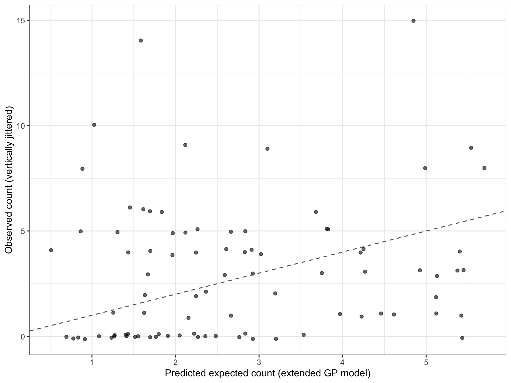
np.random.seed(123)
p_test_obs_fitted_py = (
ggplot(
pd.DataFrame(
{
"predicted": mu_test_py,
"observed": y_test + np.random.uniform(-0.15, 0.15, len(y_test)),
}
),
aes(x="predicted", y="observed"),
)
+ geom_point(alpha=0.6)
+ geom_abline(intercept=0, slope=1, linetype="dashed", color="#666666")
+ labs(
x="Predicted expected count (extended GP model)",
y="Observed count (vertically jittered)",
)
+ theme_bw()
)
p_test_obs_fitted_py.show()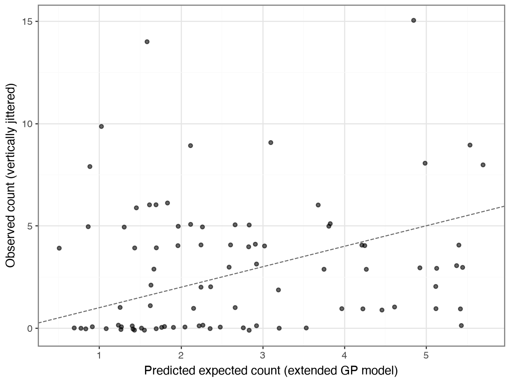
Reading the metric table honestly: the extended model and the baseline are close on every metric, and the ranking splits. On the absolute-error family the baseline is slightly better (MAE 2.53 vs 2.496; RMSE 3.289 vs 3.196); on the distribution-sensitive side the extended model wins the negative log predictive mass (2.255 vs 2.275) while losing the mean GP deviance (1.583 vs 1.444). The held-out correlation between observed and predicted counts is only 0.17.
The predictive answer is therefore sobering: the crab regressors do not buy reliable held-out point predictions beyond the training-mean benchmark on this split — the same conclusion Chapter 10 reached for the Classical Poisson model, reproduced here under a better-calibrated distribution. What the GP model buys is not a lower MAE; it is correctly sized uncertainty: predictive distributions whose spread matches the data (so a predictive \(\widehat{\Pr}(Y = 0)\) of 0.08 is defensible where the Poisson 0.007 was not) and inferential standard errors that survive refits.
| Perspective | Deliverable | Conclusion for this case study |
|---|---|---|
| Point-prediction error | ME, MAE, RMSE | Extended model roughly ties or slightly trails the training-mean baseline; no regressor-driven predictive edge out of sample. |
| Distributional prediction error | Mean GP deviance, average KL discrepancy, mean negative log predictive mass | Mixed: NLPM favours the extended model, deviance favours the baseline; differences small either way. |
| Inferential calibration | Testing-refit Wald intervals; LRT of \(\theta = 0\) | Dispersion decisively present (\(\hat\theta \approx 0.51\), ratio \(\approx 4.2\)); Dark-vs-Light the clearest association; Poisson-standard-error conclusions would overstate the evidence. |
13.14 Storytelling
The storytelling stage translates the full Generalized Poisson workflow into a message for an applied audience. Imagine presenting to marine biologists studying horseshoe crab reproduction. They care about two distinct things, and the story keeps them separate:
- Inferential: which female characteristics are associated with the expected number of satellite males, and how certain are we?
- Predictive: do those characteristics help predict satellite counts for crabs we have not measured?

The journey to the answer matters as much as the answer. Chapter 10’s Classical Poisson model failed these data: the conditional variance was roughly three times the mean, expected zeros were less than a third of what was observed, and its residual deviance was far above its degrees of freedom. This chapter’s candidate — Generalized Poisson regression — adds exactly one parameter aimed at exactly those failures. The training-stage audit showed the repair working: the Pearson statistic with the GP variance function is in line with its degrees of freedom, the expected zero count moved from 9 to 27.4 (against 34 observed), and the likelihood-ratio test formalized the need for the dispersion parameter.
From the inferential point of view, the motivating question was:
How is the expected number of satellite males associated with female crab width, weight, colour, and spine condition?
Two findings carry the answer. First, the dispersion itself is a finding: on the testing-set refit, \(\hat\theta = 0.51\) per Table 13.25, the counts vary about \(4.2\) times as much as a Poisson model with the same mean would allow, and the test of \(H_0: \theta = 0\) is decisive (\(p \approx 1.1e-20\)). Any scientific statement about these crabs that ignores this dispersion is built on an unsound uncertainty floor.
Second, within the proper uncertainty the evidence concentrates on colour. Relative to Light females, Dark females are estimated to have 70% fewer expected satellite males (95% interval for the ratio from 0.09 to 1), and Medium dark points the same way with a wider interval. The body-size variables that dominate the raw plots do not carry a statistically decisive adjusted effect at this sample size — an honest disappointment that the GP model states plainly precisely because its standard errors are calibrated. Stakeholders should hear that sentence whole: the association story is about colour; the size-gradient visible in exploratory plots is not, at these sample sizes, distinguishable from chance under a model whose uncertainty we trust. Chapter 10’s Poisson-based refit read slightly more generously Section 10.12; the difference is not new data but correctly sized intervals.
From the predictive point of view, the motivating question was:
How well can the available regressors be used to predict the expected number of satellite males for a female crab?
Plainly: the regressors are not reliable point predictors on held-out crabs. The extended GP model’s held-out MAE is 2.53 satellites against 2.5 for a rule that always predicts the training average of 2.85; RMSE tells the same story (3.29 against 3.196). Only the distribution-aware negative log predictive mass tilts marginally toward the extended model (2.255 against 2.275), reflecting the better-calibrated spread rather than better locations.
The responsible story, then, is not “the model explains satellite counts”. It is:
Satellite counts are strongly overdispersed — a stable, tested property of these data, present on data the model never saw. After adjusting honestly for this dispersion, the clearest association is darker colour with fewer satellites; the observed body-size gradient is compatible with a wide range of adjusted effects, including none. Used predictively, the crab characteristics give an honest picture of how uncertain any single crab’s count remains, rather than an accurate point forecast.
That is a usable scientific message, and it is only available because the model was allowed to say how variable the world is. The Negative Binomial and Zero-Inflated Poisson chapters show two alternative routes to overdispersion and zero surplus (variance quadratic in the mean; a two-component zero process); the exercises compare them directly against what was done here.
13.15 Chapter Summary
This chapter presented Generalized Poisson (GP) regression as the book’s answer to count data that violate equidispersion in either direction. The running horseshoe crab case study framed the two guiding inquiries summarized in Table 13.31.
| Inquiry type | Guiding question | Main takeaway |
|---|---|---|
| Inferential inquiry | How is the expected number of satellite males associated with female crab width, weight, colour, and spine condition? | Dispersion is decisively present (\(\hat\theta \approx 0.51\) on the testing refit, variance about \(4.2\times\) the mean, \(H_0: \theta = 0\) rejected overwhelmingly); the Dark vs Light colour contrast is the clearest adjusted association; body-size effects do not clear GP-calibrated uncertainty at this sample size. |
| Predictive inquiry | How well can the available regressors be used to predict the expected number of satellite males for a female crab? | Held-out point prediction does not beat a training-mean baseline (MAE 2.53 vs 2.50); the GP model’s contribution is calibrated predictive spread, not lower error. |
The model itself has three parts (Section 13.6): a random component \(Y_i \mid \mathbf{x}_i \sim \operatorname{GPO}(\lambda_i, \theta)\) with mean \(\mu_i = \lambda_i/(1-\theta)\) and variance \(\mu_i / (1-\theta)^2\); the systematic component \(\eta_i = \mathbf{x}_i^\top \boldsymbol{\beta}\); and the log link \(\log \mu_i = \eta_i\), which ties the rate-like parameter to the regressors through \(\lambda_i = (1-\theta)\exp(\eta_i)\). The dispersion parameter \(\theta \in (-1, 1)\) carries the meaning: \(\theta = 0\) nests the Classical Poisson model as an interior point, \(\theta > 0\) inflates the variance above the mean, and \(\theta < 0\) compresses it below the mean. The Chapter 13 distributional summary in Section D.5 collects the distribution’s properties independently of any regression.
Estimation is joint maximum likelihood in \((\boldsymbol{\beta}, \theta)\) — there is no iteratively reweighted least squares shortcut as in a classical GLM — and uncertainty comes from the inverse information matrix, with the expected-versus-observed information difference explaining small R/Python discrepancies (Section 13.7). In R, {VGAM}’s vglm() with genpoisson1(zero = "dispind") fits the model and we decoded its dispersion row back into \(\theta\); in Python, the chapter’s own GenericLikelihoodModel subclass maximizes the log-likelihood directly, with the logistic map keeping \(\theta\) in \((-1, 1)\).
Goodness of fit ran as a full training-stage audit (Section 13.9): the likelihood-ratio test of \(\theta = 0\) (classical \(\chi^2_1\) applies because \(0\) is interior), the Pearson statistic standardized by the GP variance function, the observed-versus-fitted comparison, the residual deviance with its small-counts approximation caveat, and the GP zero-count check \(\sum_i \exp(-\hat\lambda_i)\) — the check that flagged the remaining zero surplus as the feature a dispersion parameter cannot repair on its own.
Interpretation kept Chapter 10’s grammar (Section 13.11): coefficients are additive on the log expected-count scale and multiplicative as expected-count ratios, categorical coefficients compare against reference categories, and \(\theta\) was given its own reporting convention (parameter plus its implied variance multiplier).
The results stage delivered the conclusions on held-out data (Section 13.13): inference from a testing-set refit, prediction from the training-fitted model, six executed metrics against an intercept-only GP baseline, and an honest answer to both inquiries.

Where does this model sit among the book’s count-model tools? Negative Binomial regression (Chapter 11) models overdispersion with a variance quadratic in the mean, and Zero-Inflated Poisson regression (Chapter 12) models a structural zero surplus with a mixture; both are one-direction tools. The Generalized Poisson model’s distinguishing feature is the sign of one scalar: it treats overdispersion and underdispersion symmetrically, which is why this book places it as the capstone of the mean-variance-flexible count models. The 99 B-Line coding case at the end of the chapter exercises the underdispersed side of the same machinery — where the Classical Poisson model errs in the opposite direction — and the practice exercises develop the conceptual material (the dispersion parameter’s geometry, comparison with the sibling models, and the dispersion ratio as decision quantity).
13.16 Practice Exercises
The following practice exercises reinforce the main ideas of this chapter. Some questions check the structure of the Generalized Poisson model (the two parameters, their roles, and what the model reduces to); others ask you to reason about the workflow decisions the running case study made (dispersion testing, calibrated standard errors, predictive calibration). Working through them before the coding case will make the 99 B-Line analysis much more direct.

13.16.1 Conceptual Questions
Question 13.1
True or False
The Generalized Poisson regression model is a generalization of Classical Poisson regression that is useful only for overdispersed count responses.
Answer 13.1
Click here to reveal the answer!
Correct answer: False.
Rationale:
The dispersion parameter \(\theta\) ranges over \((-1, 1)\) and controls the variance-to-mean ratio \(\frac{1}{(1-\theta)^2}\) in both directions: \(\theta > 0\) gives overdispersion (ratio above one) and \(\theta < 0\) gives underdispersion (ratio below one). The horseshoe crab analysis used the first direction; the coding case at the end of the chapter uses the second.
Question 13.2
True or False
Setting \(\theta = 0\) in the Generalized Poisson probability mass function gives back the Poisson probability mass function exactly.
Answer 13.2
Click here to reveal the answer!
Correct answer: True.
Rationale:
Substituting \(\theta = 0\) into Equation 13.2 gives
\[ p_Y(y; \lambda, 0) = \frac{\lambda (\lambda + 0 \cdot y)^{y-1} e^{-(\lambda + 0 \cdot y)}}{y!} = \frac{\lambda \cdot \lambda^{y-1} e^{-\lambda}}{y!} = \frac{\lambda^y e^{-\lambda}}{y!}, \]
the Poisson PMF with mean \(\lambda\). This exact nesting — at an interior point of the parameter space — is what makes the likelihood-ratio test of \(H_0: \theta = 0\) a plain \(\chi^2_1\) test.
Question 13.3
Numerical Question
A fitted GP model reports \(\hat\theta = 1/3\) for one dataset and \(\hat\theta = -1/3\) for another. For each dataset, by what factor does the model’s assumed variance differ from its assumed mean? Express both results in one sentence each, including the standard-deviation factor.
Answer 13.3
Click here to reveal the answer!
Use \(\operatorname{Var}(Y) = \mu/(1-\theta)^2\) and \(\operatorname{SD}(Y) = \sqrt{\mu}/|1-\theta|\):
- \(\hat\theta = 1/3\): variance factor \(1/(2/3)^2 = 2.25\); SD factor \(3/2 = 1.5\). The assumed variance is 2.25 times the mean; spread is 1.5 times the Poisson spread at the same mean.
- \(\hat\theta = -1/3\): variance factor \(1/(4/3)^2 = 0.5625\); SD factor \(3/4 = 0.75\). The assumed variance is 0.5625 times the mean; spread is three quarters of the Poisson spread.
Question 13.4
Open-ended Question
Why is the estimation of a Generalized Poisson regression not an ordinary iteratively reweighted least squares problem like the Poisson GLM of Chapter 10?
Answer 13.4
Click here to reveal the answer!
IRLS works because the Poisson GLM’s random component belongs to the one-parameter exponential family: the mean function alone determines the variance, so coefficients can be updated with weights derived only from \(\mu_i\). The GP random component carries the additional parameter \(\theta\), so the variance \(\mu_i/(1-\theta)^2\) is what the likelihood says it is only when \(\theta\) is optimized jointly with \(\boldsymbol{\beta}\). Estimation is therefore a \((k+2)\)-dimensional maximum likelihood problem — handled in R by {VGAM}’s vector GLM machinery with Fisher scoring, and in Python by direct numerical maximization of Equation 13.6.
Question 13.5
Open-ended Question
Distinguish the inferential roles of \(\exp(\hat\beta_j)\) and \(\hat\theta\) in a fitted GP model: which aspects of the response distribution does each one summarize, and does either one depend on the units of the regressors?
Answer 13.5
Click here to reveal the answer!
- \(\exp(\hat\beta_j)\) is an expected-count ratio: the multiplicative change in the conditional mean per unit increase of regressor \(j\), holding the other regressors fixed. It depends on the regressor’s units (per cm, per kg, category-vs-reference).
- \(\hat\theta\) describes the conditional spread relative to the mean, through the ratio \(1/(1-\hat\theta)^2\). It is unit-free: it reflects heterogeneity or regularity in the data-generating process, not a per-unit change.
So the coefficient vector locates the distribution, and the dispersion parameter shapes it.
Question 13.6
Open-ended Question
The likelihood-ratio test of \(H_0: \theta = 0\) against \(H_1: \theta \neq 0\) was calibrated against \(\chi^2_1\) in this chapter, while the comparison between Poisson and Zero-Inflated Poisson in Chapter 12 required more care. Where does the difference come from?
Answer 13.6
Click here to reveal the answer!
It comes from where the null value sits in the parameter space. For GP, \(\theta = 0\) lies strictly inside the legal range \((-1, 1)\), so the usual regularity conditions for the likelihood-ratio test hold and \(\chi^2_1\) applies. For ZIP, the null \(\pi = 0\) (no zero-inflated component) lies on the boundary of \([0, 1)\), which breaks the standard conditions; the asymptotic reference is a mixture of chi-squared distributions rather than a plain \(\chi^2\). Same machinery, different geometry.
Question 13.7
Numerical Question
Weekly grant submissions in a university department have mean 4 and variance 1.8. (a) Are these data over- or underdispersed? (b) What value of \(\theta\) would a GP model with a constant mean imply? (c) What does this imply about standard errors computed under a mis-specified Poisson model?
Answer 13.7
Click here to reveal the answer!
Underdispersed: variance-to-mean ratio \(1.8/4 = 0.45 < 1\).
Setting \(1/(1-\theta)^2 = 0.45\) gives \(1 - \theta = \sqrt{1/0.45} = 1.491\), hence \(\theta = -0.491\).
The Poisson model would assume variance \(4\) where the data show \(1.8\), so its information-based standard errors would be too large by a factor of about \(\sqrt{4/1.8} \approx 1.49\) — genuine regressor effects would be understated rather than overstated (the mirror image of the crab analysis; see Table 13.20).
Question 13.8
Open-ended Question
Both the Generalized Poisson model and the Negative Binomial model of Chapter 11 allow overdispersion. Contrast how each parameterizes the variance, and give one setting where the GP model is the only option of the two.
Answer 13.8
Click here to reveal the answer!
- Negative Binomial: \(\operatorname{Var}(Y_i) = \mu_i + \mu_i^2/\kappa\) with \(\kappa > 0\) — a quadratic variance function; the relative overdispersion shrinks as the mean grows.
- Generalized Poisson: \(\operatorname{Var}(Y_i) = \mu_i/(1-\theta)^2\) — a constant proportional multiplier; the variance-to-mean ratio is the same at every mean level.
The GP model is the only option of the two for underdispersed counts: the Negative Binomial variance can never fall below the mean, while \(\theta < 0\) gives variance below the mean.
Question 13.9
Open-ended Question
One of the chapter’s goodness-of-fit checks compared the observed number of zero counts (34 in the training data) against the model expectation \(\sum_i \exp(-\hat\lambda_i)\). Why does this check describe something a dispersion parameter cannot repair by itself, and which model family from Chapter 12 addresses precisely that failure?
Answer 13.9
Click here to reveal the answer!
The dispersion parameter rescales the whole distribution proportionally: it decides how spread out counts are around the mean at every level of the mean. A structural surplus at the single point \(y = 0\) is a local distortion (some nests attract no satellites at all for structural reasons). Neither the GP ratio nor the NB variance can bend one point of the PMF independently — that is exactly what a mixture does: the zero-inflated (or hurdle) family models zero counts as coming from an extra process with its own probability, which is why those models were the subject of Chapter 12.
Question 13.10
Open-ended Question
In the held-out metric table of Table 13.28, the extended model and the training-mean baseline nearly tied on MAE and RMSE, but disagreed more clearly on the mean negative log predictive mass. Explain mechanistically why the dispersion parameter can change one family of metrics without changing the other.
Answer 13.10
Click here to reveal the answer!
ME, MAE, and RMSE score only the predicted mean \(\hat\mu_i\) against the observed count \(y_i\); neither \(\theta\) nor the rest of the predictive distribution enters. The mean GP deviance and the mean negative log predictive mass evaluate \(\log p_Y(y_i; \hat\lambda_i, \hat\theta)\), which depends explicitly on \(\theta\). A larger fitted spread raises the predictive probability of counts far from the mean and lowers it near the centre, so a model whose dispersion is well calibrated can look identical on mean-only metrics yet better (or worse) on mass-based metrics.
Question 13.11
Open-ended Question
The inferential conclusions of this chapter were drawn from the extended GP model refitted on the testing data, not from the training fit that drove model development. Why would reporting the training fit’s \(p\)-values have been methodologically wrong, even if the model had been specified in advance?
Answer 13.11
Click here to reveal the answer!
The training data informed many decisions that precede inference: the split diagnostics, the choice to fit a GP model, the extended specification being retained despite a non-significant nested test, and the repeated goodness-of-fit inspections. Each such step consumes some of the data’s information; formal \(p\)-values computed on the same data that selected the model and passed its audits are anti-conservative by an amount that is difficult to quantify. Refitting the settled specification on data never seen by the workflow restores the nominal calibration of the Wald intervals and tests — this is the inferential/predictive two-role structure of Table 13.24.
Question 13.12
Short-answer Question
Suppose the extended crab model were refit with Medium light (instead of Light) as the reference colour category. Which fitted quantities change, and which do not?
Answer 13.12
Click here to reveal the answer!
Changing the reference category is a reparameterization, not a model change. The coefficient vector changes (all colour contrasts are now relative to Medium light, e.g., the old \(\hat\beta_5\) for Dark becomes \(\hat\beta_5 - \hat\beta_3\)), as do the corresponding standard errors and \(p\)-values for the new contrasts. Everything on the observation scale is unchanged: fitted expected counts \(\hat\mu_i\), the dispersion estimate \(\hat\theta\), the maximized log-likelihood, all goodness-of-fit statistics, and all predictions. The scientific conclusions must be written about specific category comparisons, which is why the study-design stage fixes reference categories in advance (Table 13.2).
99 B-Line Bus Arrivals During Rush Hour
A regional transit authority is reviewing the reliability of its busiest express corridor — the 99 B-Line, which runs along Broadway between Commercial–Broadway Station and the University of British Columbia. During weekday rush hours, the corridor operates on a tight schedule: a bus is planned to arrive at very short, nearly constant headways, and dispatchers intervene when gaps become too large.
For a service-planning review, analysts counted, for each of 200 weekday rush-hour windows, how many buses actually arrived at a central stop in one hour (buses_per_hour), together with the day of the week (day_of_week), whether it was raining during the window (is_raining), the number of buses scheduled for that window (scheduled_frequency), and a time-window index (time_window).

Because buses are dispatched on an enforced schedule, rush-hour arrivals are expected to be more regular than random: under a homogeneous Poisson process, hourly counts fluctuate with variance equal to the mean, whereas a well-controlled service pins counts close to the scheduled target. In the language of this chapter, the working hypothesis is underdispersion, that is, \(\theta < 0\) in the Generalized Poisson model. Since underdispersed fits cannot be obtained from {VGAM}’s vglm() (its dispersion index \((1-\theta)^2 > 1\) cannot drop below one), this exercise fits the model by direct numerical likelihood maximization in both languages, applying the log-likelihood machinery derived in Section 13.7.
You will reproduce the complete modelling workflow developed in this chapter:
- Formulate the statistical questions.
- Understand the study design and variables.
- Wrangle the data.
- Explore the training data.
- Fit and interpret a simple Generalized Poisson regression model.
- Assess goodness of fit.
- Extend the model with additional regressors.
- Evaluate held-out prediction.
- Obtain inferential summaries from a testing-set refit.
- Communicate the findings in plain language.
Table 13.32 summarizes the variables in this dataset.
| Variable | Description |
|---|---|
buses_per_hour |
Number of buses that actually arrived during the one-hour rush-hour window. |
day_of_week |
Day of the week of the observation: Monday through Friday. |
is_raining |
Rain indicator: 0 for no rain during the window and 1 for rain. |
scheduled_frequency |
Number of buses the timetable schedules for that window. |
time_window |
Sequential index of the observed window in the study period. |
The response buses_per_hour is a count of service deliveries under dispatch control. The regressors day_of_week and is_raining describe conditions that may be associated with achievable service levels: traffic and boarding times vary by day, and rain slows loading and traffic. The two remaining columns are design information rather than conditions: time_window only indexes the observations, and scheduled_frequency is set by the authority — its variation across windows is tiny (17 to 21 scheduled buses) precisely because rush-hour dispatch is tightly controlled. The modelling will keep both of these columns out of the regressor set.
Finally, because this is an observational record rather than an experiment, associations between conditions (for instance, rain) and arrivals should not be read as causal effects: rain may be a marker for heavier traffic months, construction periods, or seasonal schedules. The purpose of the exercise is to practice Generalized Poisson regression on an underdispersed count response, while keeping the limits of the data and model visible.
Tip on libraries for this exercise!
The complete dependencies are listed:
-
R: {cookbook} (provides thegeneralized_poisson_regressiondata), {rsample}, {dplyr}, {knitr}, and {reticulate}. -
Python: {pandas}, {numpy}, {scipy}, and {pyreadr}.
Study Design
Before analyzing the data, we translate the service-review objective into statistical questions. As in the horseshoe-crab running example, we distinguish an inferential inquiry from a predictive inquiry.
Question 13.13 — Inferential Inquiry
Formulate an inferential inquiry that could reasonably be answered using this dataset. Your inquiry should involve the dispersion parameter \(\theta\) as well as associations between the explanatory variables and the response, in the units of the problem.
Hint: The service-design hypothesis is that scheduled dispatch makes arrivals more regular than random; each inquiry in this chapter targets a population-level relationship.
Answer 13.13
Click here to reveal the answer!
Inferential inquiry: During weekday rush hours on the 99 B-Line, is the distribution of actual bus arrivals per hour underdispersed relative to a Poisson model (that is, \(\theta < 0\)), and — allowing for this dispersion — is the expected number of arrivals per hour associated with rain, after accounting for the day of the week?
The first part asks about the spread relative to the mean (population value \(\theta\)); the second asks about a conditional-mean association measured by an expected-count ratio.
Question 13.14 — Predictive Inquiry
Formulate a predictive inquiry for the same dataset, and state the benchmark against which any fitted model must be compared.
Hint: The benchmark should be the strongest prediction achievable without using the regressors.
Answer 13.14
Click here to reveal the answer!
Predictive inquiry: For a new weekday rush-hour window on the 99 B-Line, how accurately can the model predict the number of bus arrivals per hour from the day of the week and rain status — and do these regressors improve held-out prediction over the training-mean baseline?
As in Section 13.12, accuracy is judged on the testing data with the six-metric suite, against an intercept-only Generalized Poisson model fitted on the training data.
Data Understanding
The data are supplied by the {cookbook} package as generalized_poisson_regression. Before any wrangling, we inspect the raw object: its dimensions, storage types, and ranges.
Question 13.15 — Nature of the Response
The response buses_per_hour ranges from 12 to 30 with no zero counts, whereas the horseshoe-crab response had many zeros. Does the absence of zeros conflict with the Generalized Poisson model’s support, and what does the observed range suggest about the data-generating process compared with the crab data?
Hint: Check what the GP probability mass function assigns at \(y = 0\) when the mean is near 20.
Answer 13.15
Click here to reveal the answer!
There is no conflict. The GP support \(\{0, 1, 2, \ldots\}\) merely allows zero; it does not require zeros. With \(\mu \approx 20\) and \(\theta < 0\), the zero-count probability \(\exp(-\lambda) = \exp(-(1-\theta)\mu)\) is astronomically small (of order \(\exp(-25) \approx 10^{-11}\)), so observing zero in any window is essentially impossible. The tight range \(12\)–\(30\) around a mean near 19 with variance far below the mean is the fingerprint of a scheduled, controlled process — the opposite regime from the crab data, where occupancy was uncertain and variance exceeded the mean. The chapter’s dispersion parameter \(\theta\) is precisely what adapts the same model class to both regimes.
Data Wrangling
We now import the data, verify types and ranges, and set up the categorical structure that the design matrix will use. The split is still not performed yet: as in the running example, it happens immediately before EDA so that all exploration uses the training data only.
In this section, we will:
- Import the dataset from {cookbook} (
R) or its raw.rdafile (Python). - Inspect its dimensions, names, and storage types.
- Verify that
buses_per_houris a valid count response. - Check for missing and unusual values.
- Establish the reference (baseline) category
Mondayforday_of_week.
Heads-up: a small namespace collision!
The {cookbook} package also ships a dataset named poisson, so after library(cookbook) the plain name poisson no longer resolves to stats::poisson(). To keep the chapter robust we write the Poisson family fully qualified — stats::poisson(link = "log") — in every coding-case chunk. The same caution applies in your own projects whenever a data-loading step attaches an object that masks a function.
13.17 R
library(cookbook)
# Importing the dataset provided by the cookbook package
data(generalized_poisson_regression)
buses_raw <- generalized_poisson_regression
# Sanitizing to plain vectors and setting the Monday baseline
buses <- data.frame(
buses_per_hour = as.integer(buses_raw$buses_per_hour),
day_of_week = factor(
as.character(buses_raw$day_of_week),
levels = c("Monday", "Tuesday", "Wednesday", "Thursday", "Friday")
),
is_raining = as.integer(buses_raw$is_raining),
scheduled_frequency = as.integer(buses_raw$scheduled_frequency),
time_window = as.integer(buses_raw$time_window)
)
# First ten observations
buses |>
slice_head(n = 10) |>
kable(align = rep("c", ncol(buses)))| buses_per_hour | day_of_week | is_raining | scheduled_frequency | time_window |
|---|---|---|---|---|
| 21 | Monday | 1 | 20 | 1 |
| 20 | Monday | 1 | 18 | 2 |
| 19 | Monday | 0 | 20 | 3 |
| 18 | Monday | 0 | 20 | 4 |
| 18 | Monday | 0 | 18 | 5 |
| 21 | Monday | 0 | 18 | 6 |
| 22 | Monday | 0 | 20 | 7 |
| 22 | Monday | 0 | 19 | 8 |
| 28 | Monday | 1 | 20 | 9 |
| 18 | Monday | 1 | 20 | 10 |
# Dimensions and missing values
dim(buses)[1] 200 5 buses_per_hour day_of_week is_raining scheduled_frequency
0 0 0 0
time_window
0 all_integer minimum maximum zeros
1 12 30 0 # Marginal distributions of the conditions
table(buses$day_of_week)
Monday Tuesday Wednesday Thursday Friday
39 38 36 45 42 table(buses$is_raining)
0 1
120 80 range(buses$scheduled_frequency)[1] 17 21
13.18 Python
In Python the package is mirrored from its raw GitHub store; the .rda file is downloaded to a temporary directory and read with {pyreadr}. The same structural checks follow.
import tempfile
import urllib.request
from pathlib import Path
import pyreadr
bline_url = (
"https://raw.githubusercontent.com/"
"andytai7/cookbook/main/data/generalized_poisson_regression.rda"
)
with tempfile.TemporaryDirectory() as temporary_directory:
downloaded_file = (
Path(temporary_directory) / "generalized_poisson_regression.rda"
)
_ = urllib.request.urlretrieve(bline_url, downloaded_file)
bline_objects = pyreadr.read_r(str(downloaded_file))
buses_raw_py = bline_objects["generalized_poisson_regression"]
# Sanitizing to plain columns and declaring the weekday order
day_levels_bline = ["Monday", "Tuesday", "Wednesday", "Thursday", "Friday"]
buses_py = pd.DataFrame(
{
"buses_per_hour": buses_raw_py["buses_per_hour"].astype(int),
"day_of_week": pd.Categorical(
buses_raw_py["day_of_week"].astype(str),
categories=day_levels_bline,
ordered=True,
),
"is_raining": buses_raw_py["is_raining"].astype(int),
"scheduled_frequency": buses_raw_py["scheduled_frequency"].astype(int),
"time_window": buses_raw_py["time_window"].astype(int),
}
)
generalized_poisson_bline_first_rows_py_html = scrollable_table_html(
buses_py.head(10)
)| buses_per_hour | day_of_week | is_raining | scheduled_frequency | time_window |
|---|---|---|---|---|
| 21 | Monday | 1 | 20 | 1 |
| 20 | Monday | 1 | 18 | 2 |
| 19 | Monday | 0 | 20 | 3 |
| 18 | Monday | 0 | 20 | 4 |
| 18 | Monday | 0 | 18 | 5 |
| 21 | Monday | 0 | 18 | 6 |
| 22 | Monday | 0 | 20 | 7 |
| 22 | Monday | 0 | 19 | 8 |
| 28 | Monday | 1 | 20 | 9 |
| 18 | Monday | 1 | 20 | 10 |
# Dimensions and missing values
buses_py.shape(200, 5)buses_py.isna().sum()buses_per_hour 0
day_of_week 0
is_raining 0
scheduled_frequency 0
time_window 0
dtype: int64# Response sanity: integer, non-negative, observed range and zeros
(
int(buses_py["buses_per_hour"].min()),
int(buses_py["buses_per_hour"].max()),
int((buses_py["buses_per_hour"] == 0).sum()),
)(12, 30, 0)# Marginal distributions of the conditions
buses_py["day_of_week"].value_counts().reindex(day_levels_bline)day_of_week
Monday 39
Tuesday 38
Wednesday 36
Thursday 45
Friday 42
Name: count, dtype: int64buses_py["is_raining"].value_counts()is_raining
0 120
1 80
Name: count, dtype: int64The checks confirm: 200 observations of five variables; the response is integer-valued in 12–30 with no zeros; every weekday and rain condition is well represented; scheduled_frequency stays within 17–21.
Question 13.16 — Baseline Category and Excluded Columns
Why is Monday chosen as the reference level for day_of_week, and why are scheduled_frequency and time_window excluded from the regressor set even though they are numeric and complete?
Hint: Think about interpretability of contrasts for the first part, and about what a regressor is (a measured condition vs. a design constant or identifier) for the second.
Answer 13.16
Click here to reveal the answer!
Baseline. Monday opens the operating week and is the natural anchor for schedule performance after the weekend; making it the reference level means each weekday coefficient reads as “relative to Monday,” which is how the service review is framed. Any other level would only reparameterize the same contrasts (see Question 13.12).
Exclusions. A regressor must describe a condition of the observation that could plausibly be associated with the response. time_window is an identifier — its “association” with the response would be a machine-generated artifact, not a property of the corridor. scheduled_frequency is a nearly constant design setting (17–21 buses) imposed by the authority; it is not a condition the service experiences, and within this dataset its narrow variation cannot be separated from the intercept. Neither belongs in the mean model.
Exploratory Data Analysis
The EDA answers two questions on the training data: (i) how is underdispersion expressed empirically, and (ii) which conditions shift the location of the count distribution? The 50/50 split uses the same protocol as the running example (set.seed(123), initial_split(prop = 0.5)), so that all exploratory claims below are silently held to the discipline developed in Section 13.5.
13.19 R
# Setting the seed for reproducible splitting
set.seed(123)
# Performing the 50/50 training/testing split
bline_split <- initial_split(buses, prop = 0.5)
buses_train <- training(bline_split)
buses_test <- testing(bline_split)
# Sanity checks: sample sizes and response extremes
c(n_train = nrow(buses_train), n_test = nrow(buses_test), proport = nrow(buses_train) / nrow(buses))n_train n_test proport
100.0 100.0 0.5 # Overall response summaries on the training data
bline_train_summaries_r <- c(
n = nrow(buses_train),
mean = mean(buses_train$buses_per_hour),
var = var(buses_train$buses_per_hour),
ratio = var(buses_train$buses_per_hour) / mean(buses_train$buses_per_hour),
zeros = sum(buses_train$buses_per_hour == 0)
)
round(bline_train_summaries_r, 3) n mean var ratio zeros
100.000 19.920 14.963 0.751 0.000 | is_raining | n | mean | var | ratio |
|---|---|---|---|---|
| 0 | 69 | 20.420 | 14.012 | 0.686 |
| 1 | 31 | 18.806 | 15.761 | 0.838 |
| day_of_week | n | mean | var | ratio |
|---|---|---|---|---|
| Monday | 21 | 19.619 | 12.348 | 0.629 |
| Tuesday | 16 | 21.312 | 14.496 | 0.680 |
| Wednesday | 20 | 21.400 | 15.832 | 0.740 |
| Thursday | 14 | 21.071 | 16.841 | 0.799 |
| Friday | 29 | 17.793 | 9.670 | 0.543 |
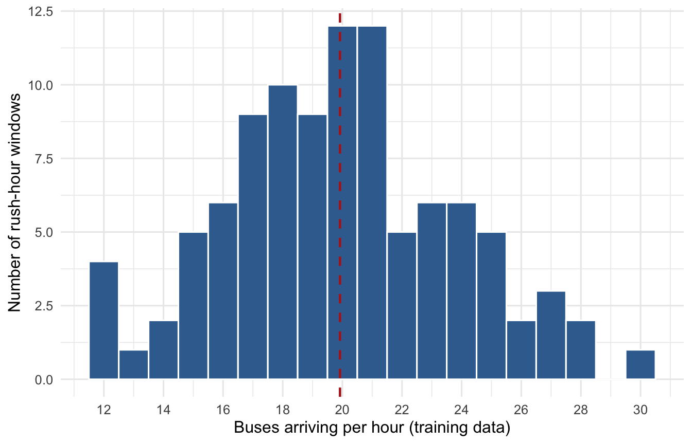
13.20 Python
# Reusing the R-generated canonical split through reticulate
buses_train_py = r.buses_train.copy()
buses_test_py = r.buses_test.copy()
buses_train_py["day_of_week"] = pd.Categorical(
buses_train_py["day_of_week"], categories=day_levels_bline, ordered=True
)
buses_test_py["day_of_week"] = pd.Categorical(
buses_test_py["day_of_week"], categories=day_levels_bline, ordered=True
)
# Sanity check on sample sizes
(len(buses_train_py), len(buses_test_py))(100, 100)# Overall response summaries on the training data
y_train_bline = buses_train_py["buses_per_hour"].to_numpy(dtype=float)
bline_train_mean = float(y_train_bline.mean())
bline_train_var = float(y_train_bline.var(ddof=1))
round(float(bline_train_var / bline_train_mean), 3)0.751# Variance-to-mean ratio by rain condition
buses_train_py.groupby("is_raining", observed=True)["buses_per_hour"].agg(
n="count", mean="mean", var="var"
).assign(ratio=lambda d: d["var"] / d["mean"]).round(3) n mean var ratio
is_raining
0 69 20.420 14.012 0.686
1 31 18.806 15.761 0.838# Variance-to-mean ratio by weekday
buses_train_py.groupby("day_of_week", observed=True)["buses_per_hour"].agg(
n="count", mean="mean", var="var"
).assign(ratio=lambda d: d["var"] / d["mean"]).round(3) n mean var ratio
day_of_week
Monday 21 19.619 12.348 0.629
Tuesday 16 21.312 14.496 0.680
Wednesday 20 21.400 15.832 0.740
Thursday 14 21.071 16.841 0.799
Friday 29 17.793 9.670 0.543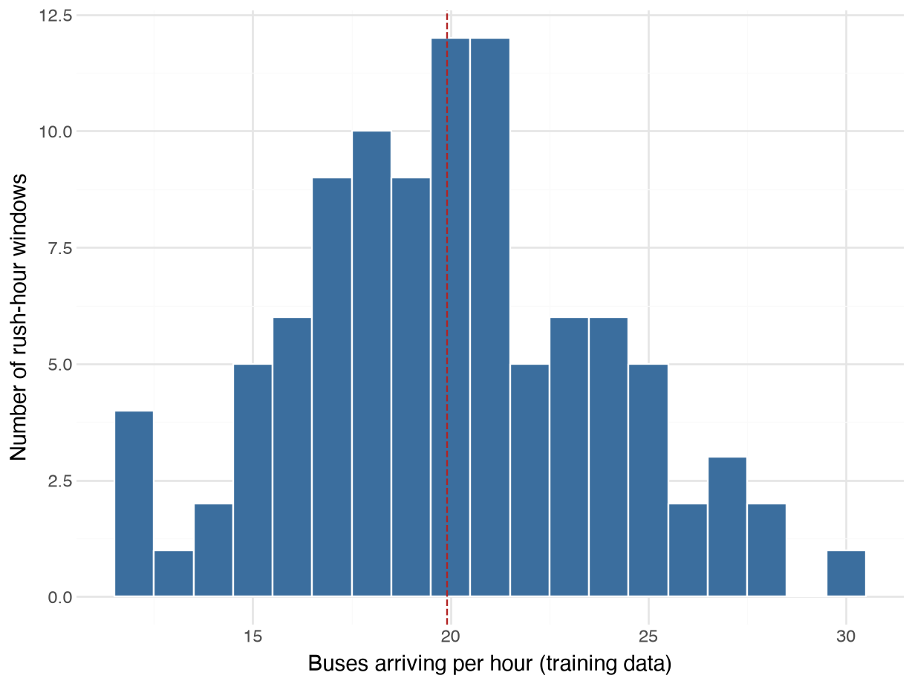
On the training data, the response centers near \(\bar y_{\text{train}} = 19.92\) buses per hour with variance 14.963, giving an empirical variance-to-mean ratio of 0.751 — well below one. Every condition shows the same signature: the ratio ranges from 0.543 (Friday) to 0.838 (rainy windows). The histogram in Figure 13.19 makes the same point visually: the distribution is pinned to a narrow band around the mean. No conditioning group needs more than a modest location shift — mean arrivals run from about \(17.8\) (Friday) to \(21.4\) (Wednesday).
Question 13.17 — Reading the Dispersion Signature
Based only on the EDA, what would you predict about the sign and approximate magnitude of \(\hat\theta\) under (i) an intercept-only mean and (ii) the mean model with rain and weekday contrasts? Which of the two should show the larger \(|\hat\theta|\), and why?
Hint: Map each variance-to-mean ratio through \(1/(1-\theta)^2\) approximately, and remember what conditioning on regressors does to residual variability.
Answer 13.17
Click here to reveal the answer!
Both fits must find \(\hat\theta < 0\): every ratio seen so far is below one, and \(1/(1-\theta)^2 < 1\) requires \(\theta < 0\).
Intercept-only: ratio \(\approx 0.75\) implies \(1-\hat\theta \approx 1/\sqrt{0.75} \approx 1.155\), so \(\hat\theta \approx -0.15\).
With rain and weekday contrasts: the group-wise ratios (0.543–0.838) are lower than the overall ratio, because part of the overall variance was day-to-day location variation. Conditioning absorbs that part, so the residual ratio should drop — meaning \(\hat\theta\) should move further from zero, on the order of \(-0.25\) to \(-0.30\).
The simple-model and extended-model stages below will confirm both predictions directly.
Simple Generalized Poisson Regression and Goodness of Fit
The simple model conditions the arrival counts on rain only. For rush-hour window \(i\), let \(r_{i}\) be the binary indicator that it is raining (\(r_{i}=1\) if rain, \(0\) otherwise):
\[ Y_i \mid \mathbf{x}_i \sim \operatorname{GPO}(\lambda_i, \theta), \qquad \lambda_i = (1 - \theta)\exp(\beta_0 + \beta_1 r_{i}), \]
so that \(\exp(\hat\beta_1)\) is the expected-count ratio of rainy versus dry rush-hour windows, and \(\hat\theta\) summarizes residual departure from equidispersion. Because \(\hat\theta\) is expected to be negative here — outside what {VGAM}’s dispersion-index parameterization can reach — the fit is obtained by direct numerical maximization of the joint log-likelihood derived in Section 13.7.
Question 13.18 — Fitting the Simple Model Without VGAM
Write the fitting code for the simple model in both languages: a small R objective passed to optim() (BFGS with the observed information), and the GeneralizedPoisson class from Section 13.7.1 for Python. Report \(\hat\theta\), its standard error, the implied variance-to-mean ratio, and the likelihood-ratio test of \(H_0: \theta = 0\) against the nested Poisson fit on the same training data.
Hint: Map the unconstrained optimizer coordinate \(z\) to \(\theta = 2\operatorname{logit}^{-1}(z) - 1\), and take its standard error from the delta method.
Answer 13.18
Click here to reveal the answer!
13.21 R
# Negative log-likelihood of the joint Generalized Poisson model
bline_negloglik_r <- function(params, y, X) {
k <- ncol(X)
beta <- params[1:k]
z <- params[k + 1]
theta <- 2 * plogis(z) - 1 # logistic map to (-1, 1)
mu <- exp(as.numeric(X %*% beta))
lam <- (1 - theta) * mu
t <- lam + theta * y
if (any(t <= 0)) return(Inf) # support/truncation guard
-sum(log(lam) + (y - 1) * log(t) - t - lgamma(y + 1))
}
# One-call fitter: returns coefficients, dispersion, and standard errors
bline_gp_fit_r <- function(y, X) {
k <- ncol(X)
start <- c(log(mean(y)), rep(0, k - 1), 0)
fit <- optim(
start, bline_negloglik_r, y = y, X = X,
method = "BFGS", hessian = TRUE, control = list(maxit = 1000)
)
se <- sqrt(diag(solve(fit$hessian)))
beta_hat <- fit$par[1:k]
se_beta <- se[1:k]
z_hat <- fit$par[k + 1]
theta_hat <- 2 * plogis(z_hat) - 1
se_theta <- 2 * plogis(z_hat) * (1 - plogis(z_hat)) * se[k + 1]
list(
beta = beta_hat, se_beta = se_beta,
theta = theta_hat, se_theta = se_theta, z = z_hat,
loglik = -fit$value
)
}X_bline_simple_r <- model.matrix(~ is_raining, data = buses_train)
y_bline_train_r <- buses_train$buses_per_hour
fit_bline_simple_r <- bline_gp_fit_r(y_bline_train_r, X_bline_simple_r)
# Tidied coefficient table with Wald statistics
tidy_bline_simple_r <- data.frame(
term = c("(Intercept)", "is_raining"),
estimate = round(fit_bline_simple_r$beta, 4),
std.error = round(fit_bline_simple_r$se_beta, 4),
z.value = round(fit_bline_simple_r$beta / fit_bline_simple_r$se_beta, 3),
p.value = signif(
2 * pnorm(-abs(fit_bline_simple_r$beta / fit_bline_simple_r$se_beta)), 3
)
)
kable(tidy_bline_simple_r, align = "c", row.names = FALSE)| term | estimate | std.error | z.value | p.value |
|---|---|---|---|---|
| (Intercept) | 3.0161 | 0.0226 | 133.454 | 0.0000 |
| is_raining | -0.0810 | 0.0417 | -1.941 | 0.0522 |
# Dispersion estimate with delta-method standard error and implied variance ratio
theta_hat_bline_simple_r <- fit_bline_simple_r$theta
c(
theta_hat = round(theta_hat_bline_simple_r, 4),
se_theta = round(fit_bline_simple_r$se_theta, 4),
variance_ratio = round(1 / (1 - theta_hat_bline_simple_r)^2, 3)
) theta_hat se_theta variance_ratio
-0.1785 0.0825 0.7200 # Classical Poisson contrast on the same training data
fit_bline_poisson_simple_r <- glm(
buses_per_hour ~ is_raining,
family = stats::poisson(link = "log"),
data = buses_train
)
ll_bline_simple_r <- fit_bline_simple_r$loglik
ll_bline_poisson_simple_r <- as.numeric(logLik(fit_bline_poisson_simple_r))
bline_lrt_theta_simple_r <- 2 * (ll_bline_simple_r - ll_bline_poisson_simple_r)
bline_p_theta_simple_r <- pchisq(bline_lrt_theta_simple_r, df = 1, lower.tail = FALSE)
c(
logLik_GP = round(ll_bline_simple_r, 4),
logLik_Poisson = round(ll_bline_poisson_simple_r, 4),
LRT = round(bline_lrt_theta_simple_r, 3),
p_value = signif(bline_p_theta_simple_r, 3)
) logLik_GP logLik_Poisson LRT p_value
-274.5331 -276.9873 4.9080 0.0267 (Intercept) is_raining
0.848 0.847
13.22 Python
# Reusing the GeneralizedPoisson machinery class introduced earlier in the chapter
X_bline_simple_py = np.column_stack(
[
np.ones(len(buses_train_py)),
buses_train_py["is_raining"].to_numpy(dtype=float),
]
)
fit_bline_simple_py = GeneralizedPoisson(y_train_bline, X_bline_simple_py).fit_dispersion()
beta_hat_bline_simple_py = fit_bline_simple_py.params[:-1]
se_beta_bline_simple_py = fit_bline_simple_py.bse[:-1]
z_hat_bline_simple_py = fit_bline_simple_py.params[-1]
s_hat_bline_simple_py = 1.0 / (1.0 + np.exp(-z_hat_bline_simple_py))
theta_hat_bline_simple_py = 2.0 * s_hat_bline_simple_py - 1.0
se_theta_bline_simple_py = float(
2.0 * s_hat_bline_simple_py * (1.0 - s_hat_bline_simple_py) * fit_bline_simple_py.bse[-1]
)
bline_simple_py = pd.DataFrame(
{
"term": ["(Intercept)", "is_raining"],
"estimate": np.round(beta_hat_bline_simple_py, 4),
"std.error": np.round(se_beta_bline_simple_py, 4),
"z.value": np.round(beta_hat_bline_simple_py / se_beta_bline_simple_py, 3),
"p.value": [
float(2 * stats.norm.sf(abs(v)))
for v in beta_hat_bline_simple_py / se_beta_bline_simple_py
],
}
)
bline_simple_py_html = scrollable_table_html(bline_simple_py)| term | estimate | std.error | z.value | p.value |
|---|---|---|---|---|
| (Intercept) | 3.0161 | 0.0226 | 133.454 | 0.000000 |
| is_raining | -0.0810 | 0.0417 | -1.942 | 0.052154 |
# Dispersion estimate, implied variance ratio, and the Classical Poisson contrast
print(
"theta:", round(theta_hat_bline_simple_py, 4),
" se:", round(se_theta_bline_simple_py, 4),
" ratio:", round(1 / (1 - theta_hat_bline_simple_py) ** 2, 3),
)theta: -0.1785 se: 0.0825 ratio: 0.72fit_bline_poisson_simple_py = sm.GLM(
y_train_bline, X_bline_simple_py, family=sm.families.Poisson()
).fit()
ll_bline_simple_py = float(fit_bline_simple_py.llf)
ll_bline_poisson_simple_py = float(fit_bline_poisson_simple_py.llf)
lrt_bline_simple_py = 2.0 * (ll_bline_simple_py - ll_bline_poisson_simple_py)
print(
"GP logLik:", round(ll_bline_simple_py, 4),
" Poisson logLik:", round(ll_bline_poisson_simple_py, 4),
" LRT:", round(lrt_bline_simple_py, 3),
" p:", float(stats.chi2.sf(lrt_bline_simple_py, 1)),
)GP logLik: -274.5331 Poisson logLik: -276.9873 LRT: 4.908 p: 0.026726508997155778print(
"GP/Poisson SE ratios:",
np.round(se_beta_bline_simple_py / fit_bline_poisson_simple_py.bse, 3),
)GP/Poisson SE ratios: [0.848 0.847]The simple fit finds \(\hat\theta = -0.1785\) with standard error 0.0825 — the residual variance-to-mean ratio is \(1/(1-\hat\theta)^2 = 0.72\), so rainy-or-dry conditional variance sits about 28% below what equidispersion would require. The likelihood-ratio test of \(\theta = 0\) gives \(\chi^2_1 = 4.91\) (\(p = 0.0267\)): even conditioning only on rain, the underdispersion is detectable at the 5% level. And the practical cost of ignoring it is visible: the Classical Poisson standard errors are about 15% wider than the model-based GP ones — uncertainty is overstated when the schedule-induced regularity is not modelled.
Question 13.19 — Goodness of Fit of the Simple Model
Assess the adequacy of the simple rain-only fit with the Pearson and residual-deviance statistics developed in Section 13.9, calibrated against \(\chi^2\) on \(97\) residual degrees of freedom. Is the zero-count check informative for these data?
Hint: The saturated-model log-likelihood term for the GP random component was derived in the running example; the residual degrees of freedom subtract the two coefficients and \(\theta\).
Answer 13.19
Click here to reveal the answer!
13.23 R
bline_df_simple_r <- length(y_bline_train_r) - (ncol(X_bline_simple_r) + 1)
mu_bline_simple_r <- exp(as.numeric(X_bline_simple_r %*% fit_bline_simple_r$beta))
# Pearson statistic under the GP variance function
bline_pearson_simple_r <- sum(
(y_bline_train_r - mu_bline_simple_r)^2 /
(mu_bline_simple_r / (1 - theta_hat_bline_simple_r)^2)
)
c(
Pearson = round(bline_pearson_simple_r, 2),
df = bline_df_simple_r,
p_value = round(pchisq(bline_pearson_simple_r, bline_df_simple_r, lower.tail = FALSE), 3)
)Pearson df p_value
99.720 97.000 0.405 # Residual deviance against the saturated GP model
bline_ll_sat_simple_r <- vapply(
y_bline_train_r,
function(yi) {
if (yi == 0) return(0)
lam_sat <- (
yi * (1 - theta_hat_bline_simple_r) +
sqrt(yi^2 * (1 - theta_hat_bline_simple_r)^2 + 4 * theta_hat_bline_simple_r * yi)
) / 2
gp_logpmf_r(yi, lam_sat, theta_hat_bline_simple_r)
},
numeric(1)
)
bline_deviance_simple_r <- 2 * sum(
bline_ll_sat_simple_r -
gp_logpmf_r(y_bline_train_r, (1 - theta_hat_bline_simple_r) * mu_bline_simple_r, theta_hat_bline_simple_r)
)
c(
Deviance = round(bline_deviance_simple_r, 2),
df = bline_df_simple_r,
p_value = round(pchisq(bline_deviance_simple_r, bline_df_simple_r, lower.tail = FALSE), 3)
)Deviance df p_value
100.130 97.000 0.393 [1] 9.6535e-09
13.24 Python
bline_df_simple_py = len(y_train_bline) - (X_bline_simple_py.shape[1] + 1)
mu_bline_simple_py = np.exp(X_bline_simple_py @ beta_hat_bline_simple_py)
lam_bline_simple_py = (1.0 - theta_hat_bline_simple_py) * mu_bline_simple_py
pearson_bline_simple_py = float(
np.sum(
(y_train_bline - mu_bline_simple_py) ** 2
/ (mu_bline_simple_py / (1.0 - theta_hat_bline_simple_py) ** 2)
)
)
print(
"Pearson:", round(pearson_bline_simple_py, 2),
" df:", bline_df_simple_py,
" p:", round(float(stats.chi2.sf(pearson_bline_simple_py, bline_df_simple_py)), 3),
)Pearson: 99.72 df: 97 p: 0.405ll_sat_simple_py = np.zeros_like(y_train_bline)
lam_sat_simple_py = (
y_train_bline * (1.0 - theta_hat_bline_simple_py)
+ np.sqrt(
y_train_bline**2 * (1.0 - theta_hat_bline_simple_py) ** 2
+ 4.0 * theta_hat_bline_simple_py * y_train_bline
)
) / 2.0
ll_sat_simple_py = gp_logpmf(
y_train_bline, lam_sat_simple_py, theta_hat_bline_simple_py
)
deviance_bline_simple_py = 2.0 * float(
np.sum(ll_sat_simple_py - gp_logpmf(y_train_bline, lam_bline_simple_py, theta_hat_bline_simple_py))
)
print(
"Deviance:", round(deviance_bline_simple_py, 2),
" df:", bline_df_simple_py,
" p:", round(float(stats.chi2.sf(deviance_bline_simple_py, bline_df_simple_py)), 3),
)Deviance: 100.13 df: 97 p: 0.393print("Expected zeros:", float(np.sum(np.exp(-lam_bline_simple_py))))Expected zeros: 9.656631454201073e-09Both statistics sit essentially at their expected levels: Pearson 99.7 and deviance 100.1 on 97 residual degrees of freedom (\(p \approx 0.4\) and \(0.39\)). No lack of fit is indicated. The zero-count check degenerates exactly as predicted in Question 13.15: the model expects essentially no zeros (9.7^{-9}) and the data oblige — the check is uninformative in an underdispersed, high-mean setting, and this itself validates the choice not to consider zero-inflated alternatives.
Extending the Simple Model: Day of the Week
The inferential inquiry asks about rain after accounting for the day of the week, so the next stage adds the four weekday contrasts (Monday reference) to the systematic component.
Question 13.20 — Extended Model, Dispersion Test, and Nested Comparison
Fit the extended model buses_per_hour ~ is_raining + day_of_week on the training data. Report \(\hat\theta\) and its standard error, the likelihood-ratio test of \(\theta = 0\), and the nested test adding the four weekday contrasts to the simple model. Conclude which specification the training evidence supports.
Hint: The nested comparison places the four day dummies jointly under a \(\chi^2_4\) reference.
Answer 13.20
Click here to reveal the answer!
13.25 R
X_bline_ext_r <- model.matrix(~ is_raining + day_of_week, data = buses_train)
fit_bline_ext_r <- bline_gp_fit_r(y_bline_train_r, X_bline_ext_r)
term_names_bline_r <- c("(Intercept)", "is_raining", paste0("day_of_week", c("Tuesday", "Wednesday", "Thursday", "Friday")))
tidy_bline_ext_r <- data.frame(
term = term_names_bline_r,
estimate = round(fit_bline_ext_r$beta, 4),
std.error = round(fit_bline_ext_r$se_beta, 4),
z.value = round(fit_bline_ext_r$beta / fit_bline_ext_r$se_beta, 3),
p.value = signif(2 * pnorm(-abs(fit_bline_ext_r$beta / fit_bline_ext_r$se_beta)), 3)
)
kable(tidy_bline_ext_r, align = "c", row.names = FALSE)| term | estimate | std.error | z.value | p.value |
|---|---|---|---|---|
| (Intercept) | 2.9853 | 0.0387 | 77.181 | 0.0000 |
| is_raining | -0.0699 | 0.0394 | -1.772 | 0.0765 |
| day_of_weekTuesday | 0.0959 | 0.0573 | 1.673 | 0.0944 |
| day_of_weekWednesday | 0.0947 | 0.0538 | 1.760 | 0.0784 |
| day_of_weekThursday | 0.0942 | 0.0603 | 1.562 | 0.1180 |
| day_of_weekFriday | -0.0789 | 0.0526 | -1.501 | 0.1330 |
theta_hat se_theta variance_ratio
-0.2836 0.0902 0.6070 # Classical Poisson contrast and the dispersion LRT on the same split
fit_bline_poisson_ext_r <- glm(
buses_per_hour ~ is_raining + day_of_week,
family = stats::poisson(link = "log"),
data = buses_train
)
ll_bline_ext_r <- fit_bline_ext_r$loglik
ll_bline_poisson_ext_r <- as.numeric(logLik(fit_bline_poisson_ext_r))
bline_lrt_theta_ext_r <- 2 * (ll_bline_ext_r - ll_bline_poisson_ext_r)
bline_p_theta_ext_r <- pchisq(bline_lrt_theta_ext_r, df = 1, lower.tail = FALSE)
c(
logLik_GP = round(ll_bline_ext_r, 4),
logLik_Poisson = round(ll_bline_poisson_ext_r, 4),
LRT = round(bline_lrt_theta_ext_r, 3),
p_value = signif(bline_p_theta_ext_r, 3)
) logLik_GP logLik_Poisson LRT p_value
-266.22560 -271.56070 10.67000 0.00109 # Nested GP comparison: adding the four weekday contrasts to the simple model
bline_lrt_nested_r <- 2 * (ll_bline_ext_r - ll_bline_simple_r)
bline_p_nested_r <- pchisq(bline_lrt_nested_r, df = 4, lower.tail = FALSE)
c(LRT = round(bline_lrt_nested_r, 3), df = 4, p_value = signif(bline_p_nested_r, 3)) LRT df p_value
16.6150 4.0000 0.0023 (Intercept) is_raining day_of_weekTuesday
0.778 0.780 0.778
day_of_weekWednesday day_of_weekThursday day_of_weekFriday
0.777 0.778 0.780
13.26 Python
def bline_design_ext(df):
d = pd.get_dummies(df[["day_of_week"]], drop_first=True)
return np.column_stack(
[
np.ones(len(df)),
df["is_raining"].to_numpy(dtype=float),
d.to_numpy(dtype=float),
]
)
X_bline_ext_py = bline_design_ext(buses_train_py)
fit_bline_ext_py = GeneralizedPoisson(y_train_bline, X_bline_ext_py).fit_dispersion()
beta_hat_bline_ext_py = fit_bline_ext_py.params[:-1]
se_beta_bline_ext_py = fit_bline_ext_py.bse[:-1]
z_hat_bline_ext_py = fit_bline_ext_py.params[-1]
s_hat_bline_ext_py = 1.0 / (1.0 + np.exp(-z_hat_bline_ext_py))
theta_hat_bline_ext_py = 2.0 * s_hat_bline_ext_py - 1.0
se_theta_bline_ext_py = float(
2.0 * s_hat_bline_ext_py * (1.0 - s_hat_bline_ext_py) * fit_bline_ext_py.bse[-1]
)
bline_ext_py = pd.DataFrame(
{
"term": [
"(Intercept)", "is_raining",
"day_of_week[T.Tuesday]", "day_of_week[T.Wednesday]",
"day_of_week[T.Thursday]", "day_of_week[T.Friday]",
],
"estimate": np.round(beta_hat_bline_ext_py, 4),
"std.error": np.round(se_beta_bline_ext_py, 4),
"z.value": np.round(beta_hat_bline_ext_py / se_beta_bline_ext_py, 3),
"p.value": [
float(2 * stats.norm.sf(abs(v)))
for v in beta_hat_bline_ext_py / se_beta_bline_ext_py
],
}
)
bline_ext_py_html = scrollable_table_html(bline_ext_py)| term | estimate | std.error | z.value | p.value |
|---|---|---|---|---|
| (Intercept) | 2.9853 | 0.0387 | 77.181 | 0.000000 |
| is_raining | -0.0699 | 0.0394 | -1.772 | 0.076467 |
| day_of_week[T.Tuesday] | 0.0959 | 0.0573 | 1.673 | 0.094350 |
| day_of_week[T.Wednesday] | 0.0947 | 0.0538 | 1.760 | 0.078426 |
| day_of_week[T.Thursday] | 0.0942 | 0.0603 | 1.562 | 0.118349 |
| day_of_week[T.Friday] | -0.0789 | 0.0526 | -1.501 | 0.133421 |
print(
"theta:", round(theta_hat_bline_ext_py, 4),
" se:", round(se_theta_bline_ext_py, 4),
" ratio:", round(1 / (1 - theta_hat_bline_ext_py) ** 2, 3),
)theta: -0.2836 se: 0.0902 ratio: 0.607fit_bline_poisson_ext_py = sm.GLM(
y_train_bline, X_bline_ext_py, family=sm.families.Poisson()
).fit()
ll_bline_ext_py = float(fit_bline_ext_py.llf)
ll_bline_poisson_ext_py = float(fit_bline_poisson_ext_py.llf)
lrt_bline_ext_py = 2.0 * (ll_bline_ext_py - ll_bline_poisson_ext_py)
print(
"GP logLik:", round(ll_bline_ext_py, 4),
" Poisson logLik:", round(ll_bline_poisson_ext_py, 4),
" LRT:", round(lrt_bline_ext_py, 3),
" p:", float(stats.chi2.sf(lrt_bline_ext_py, 1)),
)GP logLik: -266.2256 Poisson logLik: -271.5607 LRT: 10.67 p: 0.0010887164805599883lrt_bline_nested_py = 2.0 * (ll_bline_ext_py - ll_bline_simple_py)
print(
"Nested LRT (day contrasts):", round(lrt_bline_nested_py, 3),
" df: 4 p:", float(stats.chi2.sf(lrt_bline_nested_py, 4)),
)Nested LRT (day contrasts): 16.615 df: 4 p: 0.002295839015072458print(
"GP/Poisson SE ratios:",
np.round(se_beta_bline_ext_py / fit_bline_poisson_ext_py.bse, 3),
)GP/Poisson SE ratios: [0.778 0.78 0.778 0.777 0.778 0.78 ]The extended fit pushes the dispersion estimate further from zero — \(\hat\theta = -0.2836\) (standard error 0.0902$, \(1/(1-\hat\theta)^2 = 0.607\)) — exactly the direction predicted in Question 13.17: day-to-day location differences were masquerading as variance. The dispersion test is now decisive (\(\chi^2_1 = 10.67\), \(p = 0.00109\)), and the nested test favors including the weekday contrasts (\(\chi^2_4 = 16.61\), \(p = 0.0023\)). Individual weekday contrasts remain weak marginal Wald signals (\(p\) from 0.0784 to 0.133), which is normal for a jointly significant block of indicators on modest information. The GP standard errors sit uniformly at about 78% of their Classical Poisson counterparts — underdispersion corrected, inference sharpened.
Prediction
The six-metric held-out suite from Section 13.12 now answers the predictive inquiry: extended model, simple model, and the training-mean baseline, all fitted on the training data and scored on the testing data.
Question 13.21 — Held-out Comparison of the Three Models
Compute the six held-out metrics for the extended model, the simple rain-only model, and the training-mean baseline. Which model is the strongest predictor, and does the answer agree with the nested likelihood-ratio test from Question 13.20 in this dataset?
Hint: “Training-mean baseline” here means the intercept-only GP fit — it carries its own \(\hat\theta\), so the mass-based metrics measure dispersion calibration, not just location.
Answer 13.21
Click here to reveal the answer!
13.27 R
X_bline_simple_test_r <- model.matrix(~ is_raining, data = buses_test)
X_bline_ext_test_r <- model.matrix(~ is_raining + day_of_week, data = buses_test)
y_bline_test_r <- buses_test$buses_per_hour
# Intercept-only GP baseline on the training data
fit_bline_base_r <- bline_gp_fit_r(y_bline_train_r, matrix(1, nrow = length(y_bline_train_r), ncol = 1))
theta_hat_bline_base_r <- fit_bline_base_r$theta
mu_hat_bline_base_r <- exp(fit_bline_base_r$beta[1])
bline_metrics_r <- round(rbind(
`Simple GP (rain)` = gp_prediction_metrics_r(
y_bline_test_r,
exp(as.numeric(X_bline_simple_test_r %*% fit_bline_simple_r$beta)),
theta_hat_bline_simple_r
),
`Extended GP (rain + weekday)` = gp_prediction_metrics_r(
y_bline_test_r,
exp(as.numeric(X_bline_ext_test_r %*% fit_bline_ext_r$beta)),
theta_hat_bline_ext_r
),
`Training-mean baseline` = gp_prediction_metrics_r(
y_bline_test_r,
rep(mu_hat_bline_base_r, length(y_bline_test_r)),
theta_hat_bline_base_r
)
), 3)
bline_metrics_r |>
as_tibble(rownames = "Model") |>
kable(align = "c")| Model | Mean error | MAE | RMSE | Mean GP deviance | Average KL discrepancy | Mean negative log predictive mass |
|---|---|---|---|---|---|---|
| Simple GP (rain) | -0.064 | 2.907 | 3.480 | 0.857 | 0.429 | 2.666 |
| Extended GP (rain + weekday) | -0.698 | 2.987 | 3.567 | 1.072 | 0.536 | 2.687 |
| Training-mean baseline | -0.350 | 2.990 | 3.565 | 0.869 | 0.435 | 2.689 |
13.28 Python
X_bline_simple_test_py = np.column_stack(
[
np.ones(len(buses_test_py)),
buses_test_py["is_raining"].to_numpy(dtype=float),
]
)
X_bline_ext_test_py = bline_design_ext(buses_test_py)
y_test_bline = buses_test_py["buses_per_hour"].to_numpy(dtype=float)
fit_bline_base_py = GeneralizedPoisson(
y_train_bline, np.ones((len(y_train_bline), 1))
).fit_dispersion()
theta_hat_bline_base_py = 2.0 / (1.0 + np.exp(-fit_bline_base_py.params[-1])) - 1.0
mu_hat_bline_base_py = float(np.exp(fit_bline_base_py.params[0]))
bline_metrics_py = pd.DataFrame(
[
{
"Model": "Simple GP (rain)",
**gp_prediction_metrics(
y_test_bline,
np.exp(X_bline_simple_test_py @ beta_hat_bline_simple_py),
theta_hat_bline_simple_py,
),
},
{
"Model": "Extended GP (rain + weekday)",
**gp_prediction_metrics(
y_test_bline,
np.exp(X_bline_ext_test_py @ beta_hat_bline_ext_py),
theta_hat_bline_ext_py,
),
},
{
"Model": "Training-mean baseline",
**gp_prediction_metrics(
y_test_bline,
np.full(len(y_test_bline), mu_hat_bline_base_py),
theta_hat_bline_base_py,
),
},
]
).round(3)
bline_metrics_py_html = scrollable_table_html(bline_metrics_py)| Model | Mean error | MAE | RMSE | Mean GP deviance | Average KL discrepancy | Mean negative log predictive mass |
|---|---|---|---|---|---|---|
| Simple GP (rain) | -0.064 | 2.907 | 3.480 | 0.857 | 0.429 | 2.666 |
| Extended GP (rain + weekday) | -0.698 | 2.987 | 3.567 | 1.072 | 0.536 | 2.687 |
| Training-mean baseline | -0.350 | 2.990 | 3.565 | 0.869 | 0.435 | 2.689 |
The simple rain-only model is the strongest predictor: it wins all six metrics — MAE 2.907 against 2.987 (extended) and 2.99 (baseline), with the same ordering on RMSE, mean GP deviance, KL discrepancy, and negative log predictive mass. The extended model’s extra day parameters cost slightly more in variance than they recover in systematic signal once deployed on fresh windows — despite the nested test supporting them on training data. The predictive inquiry therefore prefers the simple specification, while the inferential inquiry still needs the extended specification to state the rain association given the day of the week; the two roles of the split pull in opposite directions here, and the workflow keeps them separate by design.
Question 13.22 — Inferential Conclusions from the Testing-set Refit
Refit the extended specification on the testing data and state the inferential conclusions that survive: (i) is underdispersion confirmed out of sample? (ii) What can be said about the rain and weekday associations?
Hint: Calibrate each Wald statement with its 95% expected-count-ratio interval, and the dispersion statement with the likelihood-ratio test on the testing scale.
Answer 13.22
Click here to reveal the answer!
13.29 R
fit_bline_test_r <- bline_gp_fit_r(y_bline_test_r, X_bline_ext_test_r)
tidy_bline_test_r <- data.frame(
term = term_names_bline_r,
estimate = round(fit_bline_test_r$beta, 4),
std.error = round(fit_bline_test_r$se_beta, 4),
z.value = round(fit_bline_test_r$beta / fit_bline_test_r$se_beta, 3),
p.value = signif(2 * pnorm(-abs(fit_bline_test_r$beta / fit_bline_test_r$se_beta)), 3),
ratio = round(exp(fit_bline_test_r$beta), 3)
)
kable(tidy_bline_test_r, align = "c", row.names = FALSE)| term | estimate | std.error | z.value | p.value | ratio |
|---|---|---|---|---|---|
| (Intercept) | 2.9349 | 0.0483 | 60.712 | 0.0000 | 18.819 |
| is_raining | -0.0584 | 0.0356 | -1.641 | 0.1010 | 0.943 |
| day_of_weekTuesday | 0.1151 | 0.0567 | 2.028 | 0.0426 | 1.122 |
| day_of_weekWednesday | 0.0758 | 0.0614 | 1.235 | 0.2170 | 1.079 |
| day_of_weekThursday | 0.0778 | 0.0535 | 1.454 | 0.1460 | 1.081 |
| day_of_weekFriday | 0.0373 | 0.0656 | 0.569 | 0.5700 | 1.038 |
theta_hat_bline_test_r <- fit_bline_test_r$theta
c(
theta_hat = round(theta_hat_bline_test_r, 4),
se_theta = round(fit_bline_test_r$se_theta, 4),
cr_lower = round(theta_hat_bline_test_r - 1.96 * fit_bline_test_r$se_theta, 3),
cr_upper = round(theta_hat_bline_test_r + 1.96 * fit_bline_test_r$se_theta, 3),
variance_ratio = round(1 / (1 - theta_hat_bline_test_r)^2, 3)
) theta_hat se_theta cr_lower cr_upper variance_ratio
-0.2859 0.0882 -0.4590 -0.1130 0.6050 # Dispersion test on the testing scale
ll_bline_test_r <- fit_bline_test_r$loglik
fit_bline_poisson_test_r <- glm(
buses_per_hour ~ is_raining + day_of_week,
family = stats::poisson(link = "log"),
data = buses_test
)
ll_bline_poisson_test_r <- as.numeric(logLik(fit_bline_poisson_test_r))
bline_lrt_theta_test_r <- 2 * (ll_bline_test_r - ll_bline_poisson_test_r)
bline_p_theta_test_r <- pchisq(bline_lrt_theta_test_r, df = 1, lower.tail = FALSE)
c(LRT = round(bline_lrt_theta_test_r, 3), p_value = signif(bline_p_theta_test_r, 3)) LRT p_value
11.211000 0.000813 # Rain association: expected-count ratio with 95% credible width (Wald)
beta_rain_bline_test_r <- fit_bline_test_r$beta[2]
se_rain_bline_test_r <- fit_bline_test_r$se_beta[2]
bline_rain_ratio_r <- c(
estimate = exp(beta_rain_bline_test_r),
lower = exp(beta_rain_bline_test_r - 1.96 * se_rain_bline_test_r),
upper = exp(beta_rain_bline_test_r + 1.96 * se_rain_bline_test_r)
)
round(bline_rain_ratio_r, 3)estimate lower upper
0.943 0.880 1.011
13.30 Python
fit_bline_test_py = GeneralizedPoisson(y_test_bline, X_bline_ext_test_py).fit_dispersion()
beta_hat_bline_test_py = fit_bline_test_py.params[:-1]
se_beta_bline_test_py = fit_bline_test_py.bse[:-1]
z_hat_bline_test_py = fit_bline_test_py.params[-1]
s_hat_bline_test_py = 1.0 / (1.0 + np.exp(-z_hat_bline_test_py))
theta_hat_bline_test_py = 2.0 * s_hat_bline_test_py - 1.0
se_theta_bline_test_py = float(
2.0 * s_hat_bline_test_py * (1.0 - s_hat_bline_test_py) * fit_bline_test_py.bse[-1]
)
print(
"theta:", round(theta_hat_bline_test_py, 4),
" se:", round(se_theta_bline_test_py, 4),
" ratio:", round(1 / (1 - theta_hat_bline_test_py) ** 2, 3),
)theta: -0.2859 se: 0.0882 ratio: 0.605fit_bline_poisson_test_py = sm.GLM(
y_test_bline, X_bline_ext_test_py, family=sm.families.Poisson()
).fit()
lrt_bline_test_py = 2.0 * (float(fit_bline_test_py.llf) - float(fit_bline_poisson_test_py.llf))
print(
"Dispersion LRT on testing:", round(lrt_bline_test_py, 3),
" p:", float(stats.chi2.sf(lrt_bline_test_py, 1)),
)Dispersion LRT on testing: 11.211 p: 0.0008132131500405706bline_test_py = pd.DataFrame(
{
"term": [
"(Intercept)", "is_raining",
"day_of_week[T.Tuesday]", "day_of_week[T.Wednesday]",
"day_of_week[T.Thursday]", "day_of_week[T.Friday]",
],
"estimate": np.round(beta_hat_bline_test_py, 4),
"std.error": np.round(se_beta_bline_test_py, 4),
"p.value": [
float(2 * stats.norm.sf(abs(v)))
for v in beta_hat_bline_test_py / se_beta_bline_test_py
],
"ratio": np.round(np.exp(beta_hat_bline_test_py), 3),
}
)
bline_test_py_html = scrollable_table_html(bline_test_py)| term | estimate | std.error | p.value | ratio |
|---|---|---|---|---|
| (Intercept) | 2.9349 | 0.0483 | 0.000000 | 18.819 |
| is_raining | -0.0584 | 0.0356 | 0.100690 | 0.943 |
| day_of_week[T.Tuesday] | 0.1151 | 0.0567 | 0.042559 | 1.122 |
| day_of_week[T.Wednesday] | 0.0758 | 0.0614 | 0.216663 | 1.079 |
| day_of_week[T.Thursday] | 0.0778 | 0.0535 | 0.145978 | 1.081 |
| day_of_week[T.Friday] | 0.0373 | 0.0656 | 0.569652 | 1.038 |
(i) Underdispersion: confirmed. The testing-scale dispersion estimate \(\hat\theta = -0.2859\) (standard error 0.0882; 95% interval -0.459 to -0.113, entirely below zero) implies a conditional variance-to-mean ratio of 0.605, and the likelihood-ratio test against the nested Poisson scale gives \(\chi^2_1 = 11.21\), \(p = 8.13\times 10^{-4}\). Rush-hour arrivals on this corridor are materially more regular than a Poisson model allows, with or without conditioning on conditions — the schedule works.
(ii) Associations: weak and direction-consistent. Rainy windows are associated with an expected-count ratio of 0.943 (95% Wald interval 0.88 to 1.011; \(p = 0.101\)): a suggestion of roughly 6% fewer arrivals in rain, not significant at the 5% level given the day of the week. Among weekday contrasts, only Tuesday stands out against Monday (\(p = 0.0426\)), and even that is a single marginal signal among four — the joint picture is that condition effects are small relative to sampling noise at \(n = 100\) windows, while dispersion is not.
Standard errors. The GP standard errors on the testing refit are 78% of the Classical Poisson ones — the mirror image of the crab analysis, where ignoring overdispersion had understated uncertainty. Here ignoring underdispersion would have overstated it and understated the evidence that the corridor’s service is tightly controlled.
Storytelling
The final piece of the workflow is communication: turning the refit, the dispersion test, and the held-out metric table into a briefing a service planner can act on.
Question 13.23 — Briefing the Service-Planning Review
Write a short plain-language briefing for the transit authority’s service-planning review. It must answer three things: (i) What did we find about rush-hour reliability on the 99 B-Line? (ii) How much confidence should be placed in each part of the finding? (iii) What does the analysis recommend — and what does it not license you to claim?
Hint: Distinguish the robust finding (dispersion) from the suggestive one (rain), keep the observational caveat, and state consequences only in the data’s own terms (buses per hour).
Answer 13.23
Click here to reveal the answer!
Briefing — 99 B-Line rush-hour reliability review.
Across 200 weekday rush-hour windows, the 99 B-Line delivered about 20 bus arrivals per hour at the central stop, and — the review’s headline — those arrivals were significantly more regular than random scheduling would produce. After modelling the counts with a Generalized Poisson regression, the implied variance of hourly arrivals is roughly 60% of what the standard Poisson benchmark would assign at the same mean (testing-scale ratio 0.6; \(p \approx 8.1\times 10^{-4}\) on held-out data). Peak service on the corridor is tight, as the dispatch protocol intends.
Confidence. The regularity finding is robust: it appears in both halves of the data, at nearly identical strength, and survives out-of-sample refitting. The secondary findings are weaker. Rainy rush hours show slightly fewer arrivals — about 6% fewer per hour — but the association does not reach conventional significance on the held-out refit, so it should be treated as suggestive rather than established. Day-to-day differences were jointly detectable in the model-development data but were too small individually to be decision-relevant, and the extra weekday parameters did not improve predictions on new windows.
Recommendations and limits. For reliability KPIs, schedule-adherence dashboards, and passenger-information variance margins, the uncertainty bands calibrated to a Poisson assumption are too wide — roughly a fifth too wide here — so service targets set on those bands would be needlessly conservative. Nothing here licenses causal claims: the rain pattern reflects conditions concurrent with rain (traffic, boarding times, seasonal timetables), not the effect of weather alone; and the analysis covers rush-hour behaviour at one corridor — other routes, or off-peak windows where dispatch control is looser, could plausibly be overdispersed and would need their own fit.